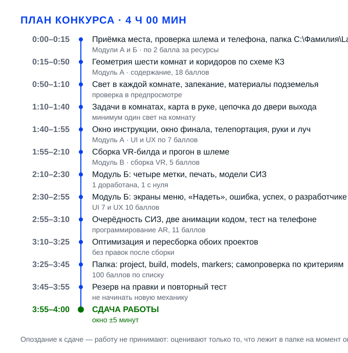
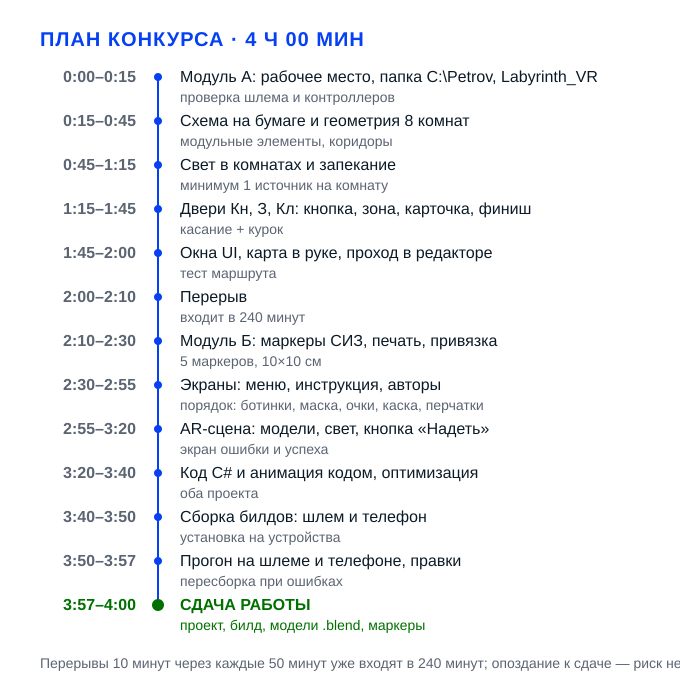
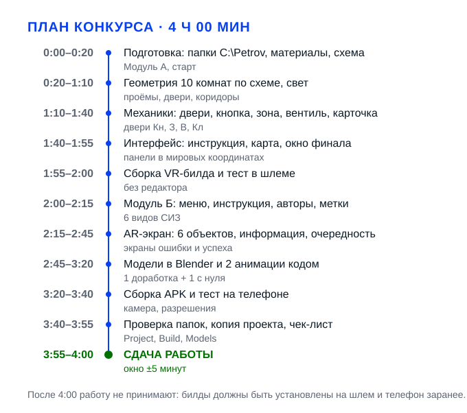

Разработчик виртуальной и дополненной реальности (Р)
Задания ниже — официальные файлы «Абилимпикс» (источник: abilympics-russia.ru), разложенные по категориям. Решения написаны по тексту задания, регламенту и критериям оценки; в них указано, что именно проверяет эксперт.
Школьник
14–16 лет, базовый уровень заданияВыдержка из официального конкурсного задания: страницы, относящиеся к категории «Школьник» (стр. 7–8, 17–18 источника).
Пошаговое решение
Разбор официального задания регионального чемпионата «Абилимпикс» 2026 для категории «Школьники» по компетенции «Разработчик виртуальной и дополненной реальности». На всю работу даётся 4 часа, 240 минут, и внутри них два проекта: игра-лабиринт в виртуальной реальности из шести комнат в стилистике подземелья (модуль А, 2 часа) и приложение дополненной реальности по четырём видам средств индивидуальной защиты с собственными метками (модуль Б). Третий модуль — программирование и сборка обоих проектов, он вариативный и добавляет 32 балла к первым двум по 34. Ниже задание разложено на пять задач: от организации папки на диске C: до сдачи работы в окне ±5 минут. Внутри — конкретные размеры, настройки, порядок действий и то, за что именно снимают баллы.

Задача 1. Организовать рабочее место и папку проектаМодули А и Б · по 2 балла за ресурсы
До первой полигональной стены нужно получить работающее железо и понятную структуру папок. За «Формирование ресурсов проекта» дают по 2 балла в каждом модуле, и это самые дешёвые баллы на всём чемпионате: они набираются за пятнадцать минут аккуратной работы и теряются мгновенно, если папка лежит в «Загрузках», шлем не видит компьютер, а телефон отказывается ставить сборку. Кроме того, любая поломка на этом этапе съедает время из двух часов модуля А, вернуть которое нечем.
Действие 1.1. Принять площадку и проверить оборудование
Шаг 1.1.1
Садимся за рабочее место, включаем компьютер и по очереди проверяем три вещи: видит ли система шлем виртуальной реальности, определяются ли оба контроллера и открывается ли редактор проекта. Шлем подключаем тем способом, который даёт площадка — кабелем Link или по Wi-Fi через Air Link, — и ждём, пока в шлеме появится рабочая среда, а не только заставка. Контроллеры проверяем нажатием курка и кнопки меню: в рабочей среде должен быть слышен щелчок и видна реакция луча.
Проверка оборудования — часть критерия «Формирование ресурсов проекта», 2 балла в модуле А, и одновременно условие всей дальнейшей работы: если шлем не сопряжён, вы два часа будете собирать сцену «на глаз», а проверять её не сможете. На категории «Школьники» модуль А длится 2 часа, и полчаса, потерянные на выяснение, почему не работает кабель, — это четверть модуля.
В шлеме видна рабочая среда, оба контроллера двигаются и нажимаются, компьютер не показывает ошибок сопряжения. Батареи контроллеров заряжены хотя бы наполовину — разряженный контроллер посреди сборки останавливает работу.
Самая частая ошибка — увидеть, что шлем «включился», и успокоиться, не проверив контроллеры. Второй провал — тянуть с проверкой до момента, когда нужно тестировать билд: тогда выясняется, что драйвер не встал, а времени на разбор уже нет.
Эксперт обходит места в первые пять минут и отмечает, запущен ли шлем и лежит ли проект в нужной папке. Отдельно смотрит, не тратит ли участник время на разбор кабелей: это первое, что отличает подготовленного школьника от новичка, и видно это без единого вопроса.
Шаг 1.1.2
Достаём целевое мобильное устройство для проекта дополненной реальности и проверяем его отдельно: включается ли камера, поддерживается ли дополненная реальность, включена ли отладка по USB и виден ли телефон из редактора. Заряд ставим на 100 % и подключаем к сети, потому что камера и распознавание меток сажают батарею за час с небольшим. Экран блокировки отключаем — иначе телефон будет гаснуть в самый неподходящий момент теста.
Проект 2 по заданию собирается и устанавливается на целевое мобильное устройство, и это отдельный пункт в «Сборке AR проекта» — 5 баллов модуля В. Если телефон не виден из редактора, вы соберёте файл, но не сможете проверить, как приложение ведёт себя в реальности: на экране компьютера AR-сцена почти не читается.
Телефон виден в списке устройств редактора, камера показывает картинку в тестовом приложении, отладка включена, заряд 100 %. Проверьте ещё, что экран не заблокирован незнакомым паролем и что на телефоне хватает свободной памяти под сборку: файл на 80 мегабайт при остатке в 50 не установится.
Типичная ошибка — обнаружить, что на телефоне нет поддержки нужного сервиса дополненной реальности, уже после сборки. Вторая — оставить телефон на батарее: к третьему часу он садится, и финальный тест приходится делать «на честном слове».
Эксперт смотрит, тестирует ли участник приложение на устройстве или только в редакторе: второе видно по тому, что телефон за два часа ни разу не поднимают со стола. Отдельно отмечается, подключён ли телефон к сети, — разряженное устройство к концу модуля Б превращается в главную проблему.
Шаг 1.1.3
Проговариваем для себя правила площадки, потому что нарушение стоит не баллов, а работы: личные флешки и внешние диски на площадку приносить нельзя, свои шлемы и телефоны — тоже, а выход в интернет за моделями и текстурами возможен только вместе с экспертом. Поэтому заранее решаем, что скачиваем из разрешённого набора материалов, а что делаем сами в редакторе трёхмерной графики. Свою мышь и клавиатуру принести можно, и если вам так удобнее — приносите.
Задание прямо ограничивает источники ресурсов, и попытка «быстро скачать модель с файлообменника» может закончиться обнулением результата, а не потерей двух баллов. Одновременно это вопрос планирования: участник, который заранее знает, что модели придётся делать самому, строит сцену из простых форм и успевает, а участник, рассчитывавший на готовый набор, в середине модуля остаётся без объектов.
У вас есть список того, что берёте из разрешённых материалов, и список того, что делаете сами. Ни одного файла, скачанного в обход правил, в папке проекта нет — это проверяется по журналу загрузок и по датам файлов.
Ошибка — принести материалы на флешке «на всякий случай»: это прямо запрещено, и обнаружение флешки заканчивается разговором с главным экспертом, а не замечанием. Вторая — выйти в интернет без эксперта: даже если модель не понадобилась, сам факт фиксируется.
Эксперт объявляет правила до старта и следит за ними весь конкурс, отдельно отмечая, подзывает ли участник его перед скачиванием материалов. Правильное поведение здесь стоит дешевле баллов, но нарушение стоит всей работы, поэтому проверяют именно привычку спрашивать.
Действие 1.2. Создать папку проекта по требованию задания
Шаг 1.2.1
Открываем диск C: и создаём папку со своей фамилией латиницей — например, Petrov. Внутри неё создаём папку проекта с осмысленным названием, например Labyrinth_VR, и внутри неё ещё четыре: Project (файлы проекта), Build (собранное приложение), Models (исходники моделей в blend и других родных форматах), Markers (метки для печати). Названия пишем только латиницей, без пробелов и кириллицы.
Это буквально первый пункт результата модуля А: на диске C: должна быть папка с фамилией конкурсанта, а в ней папка проекта, и в названии не используется кириллица. За это дают 2 балла в блоке «Формирование ресурсов», но важнее другое: эксперты забирают работу именно из этой папки, и файл, лежащий на рабочем столе, могут просто не найти.
Путь выглядит как C:\Petrov\Labyrinth_VR\Project, и в проводнике видны все четыре подпапки. Проверьте, что в пути нет русских букв, пробелов и точек в начале имени: на таких путях часть сборщиков и архиваторов падает с невнятной ошибкой, которую вы будете искать полчаса.
Классическая ошибка — сложить всё в «Документы» или на рабочий стол, а папку с фамилией создать в конце «для отчётности», перенеся туда половину файлов. Вторая — назвать проект «Лабиринт», кириллицей: часть инструментов соберёт билд, но путь к нему будет нечитаем для эксперта.
Эксперт проверяет структуру папки при сдаче, но приходит и в середине работы: видно, сохраняет ли участник проект в нужное место или в случайные файлы.
Шаг 1.2.2
Сразу сохраняем проект в подпапку Project и включаем версионность: сохраняем копию с номером — Labyrinth_v01, Labyrinth_v02 — после каждого крупного этапа, а не одну перезаписываемую сцену. Отдельно делаем снимок стартового состояния: пустую сцену с уже настроенными слоями и настройками проекта, чтобы можно было начать заново, не повторяя подготовку. Файлы моделей и текстур кладём в Models и в папку Assets проекта, а не в «Загрузки».
Два часа на модуль А — это много для сборки и мало для переделки. Сцена, которая перестала открываться после неудачного импорта, стоит дороже любого балла, а копия с номером возвращает вас на десять минут назад. Кроме того, в папке проекта по заданию должны лежать модели в исходных форматах, и если вы тащили их из «Загрузок», после перезагрузки компьютера их там может не оказаться.
В папке Project лежит несколько версий сцены с разными номерами, последняя открывается без ошибок и предупреждений. В Models лежат исходники, а не только экспортированные FBX: файл blend или его аналог обязателен, иначе требование «модели в исходных форматах» не выполнено.
Ошибка — работать в одном файле и сохранять поверх: неудачная правка материала или случайное удаление объекта уничтожает всю сцену. Вторая — хранить исходники моделей только в импортированном виде, тогда требование «модели в исходных форматах» формально не выполнено.
Эксперт при сдаче открывает папку Models и смотрит, есть ли там редактируемые исходники, а не только экспорт. Дальше он смотрит на даты файлов: если всё сохранено в последние десять минут, значит, работа велась в одном файле и копий не осталось.
Шаг 1.2.3
Придумываем название приложения так, чтобы оно отражало суть: не «Игра1», а, например, «Dungeon Escape» для лабиринта и «PPE Trainer» для приложения по средствам защиты. Это же имя ставим в настройках сборки, на титульном экране и в имени файла сборки. Логотип не рисуем отдельной картинкой, если нет времени: достаточно текстовой плашки тем же шрифтом, что и интерфейс.
Задание требует, чтобы название соответствовало сути приложения, и это первое, что видит эксперт при запуске сборки. Название из двух осмысленных слов ещё и экономит время на объяснениях: когда вы за две минуты показываете работу, не приходится начинать с фразы «это лабиринт, только называется иначе».
Название одинаково в трёх местах: в настройках проекта, на титульном экране и в имени исполняемого файла. Оно записано латиницей, читается без пояснений и не содержит версий вида final_final или new_project_2.
Название вида «test», «New Project» или «проект_финал» — потеря баллов за UX, потому что эксперт видит небрежность в первой же строке. Вторая ошибка — назвать приложение кириллицей и получить нечитаемое имя файла сборки.
Эксперт запускает сборку и смотрит на первый экран: название и оформление титульного экрана входят в оценку UX модуля А. Отдельно проверяется, совпадает ли имя приложения с тем, как участник называет его вслух при защите.
Задача 2. Собрать VR-лабиринт из шести комнатМодуль А · 18 баллов за содержание
Содержательная часть VR-проекта — самый весомый блок модуля А: 18 баллов из 34. Здесь проверяют, что в сцене есть шесть комнат в стилистике подземелья, соединённых по схеме, что в каждой комнате горит свет, что задачи сценария решаются через контроллер и что за последним действием открывается дверь выхода. Проще всего провалиться не на сложной логике, а на масштабе и на проходах: комната два на два метра выглядит как шкаф, а коридор шириной полметра игрок физически не пройдёт.
Действие 2.1. Спланировать маршрут и собрать геометрию комнат
Шаг 2.1.1
Переносим схему соединения комнат из задания на лист бумаги и подписываем комнаты номерами от 1 до 6, начиная с той, где появляется игрок. Каждый коридор со схемы обводим и ставим стрелку направления, а рядом пишем, какая задача решается в комнате. Если хочется добавить коридор-обход, рисуем его пунктиром: дополнительные коридоры разрешены, а убирать обозначенные на схеме нельзя.
Схема — обязательная часть задания: комнаты должны быть соединены согласно предоставленной схеме, и это проверяется глазами в первую очередь. План на бумаге стоит пять минут и экономит полчаса в редакторе: без него вы начнёте ставить стены «по интуиции» и на пятой комнате обнаружите, что один коридор ведёт в тупик, а второй проходит сквозь стену.
На листе шесть подписанных комнат, все коридоры схемы перенесены, у каждой комнаты написана задача. Сверьте план со схемой в задании по числу связей: если на схеме у комнаты 3 два выхода, а у вас три — вы уже отклонились.
Ошибка — строить сразу в редакторе «как пойдёт»: к третьей комнате геометрия перестаёт совпадать со схемой, а переделывать стены дороже, чем рисовать план. Вторая — убрать коридор, который кажется лишним: это прямое нарушение требований.
Эксперт сверяет сцену со схемой, обходя лабиринт в шлеме, и отмечает, все ли связи на месте. Если участник добавил коридор, это не минус, а если убрал обозначенный — минус, потому что схема соединений в задании обязательна.
Шаг 2.1.2
Распределяем задачи по комнатам так, чтобы сложность росла: в первой комнате — инструкция и карта, во второй — простой предмет, который надо взять и принести, в третьей — взаимодействие с двумя-тремя объектами по порядку, в четвёртой — поиск подсказки, в пятой — сборка или активация последнего элемента, в шестой — дверь выхода. В каждой комнате оставляем одну понятную задачу, а не три сразу: игрок в шлеме дезориентирован, и перегруженная комната читается как каша.
Очерёдность шагов сценария по пункту 30 % изменений менять разрешено, поэтому ваша раскладка задач — законная авторская часть работы, которая оценивается в блоке содержательной части. Ровный рост сложности даёт эксперту возможность пройти лабиринт за три минуты и увидеть все механики, а не застрять на второй комнате.
У каждой из шести комнат в плане ровно одна задача и один способ её решения. Проверьте себя: сможете ли вы объяснить прохождение вслух за минуту, не заглядывая в план, и назвать комнату, где игрок впервые получает предмет в руки.
Ошибка — поставить самую сложную механику в первую комнату: эксперт застревает на входе и до финала не доходит, а значит, не видит половину заготовленного. Вторая — сделать все комнаты одинаковыми, с одной и той же кнопкой: содержание оценивается по разнообразию механик.
Эксперт проходит лабиринт целиком и отмечает, решается ли задача в каждой комнате и понятно ли, что делать, без подсказок. Если он дважды спрашивает «а что здесь нажать», содержание комнаты считается непроработанным.
Шаг 2.1.3
Собираем комнату как префаб: пол, четыре стены с проёмами под двери, потолок — единым объектом, который потом копируется шесть раз. Масштаб берём честный: одна единица редактора равна одному метру, комната — примерно 5 на 5 метров при высоте 3 метра, проходы в дверях — 1,2–1,5 метра, коридоры — 2 метра шириной. Стены делаем толщиной 20–30 сантиметров, чтобы в проёме была видна глубина, а не бумажный лист.
Масштаб — главная причина, по которой VR-сцены «не работают»: при комнате 2 на 2 метра у игрока возникает ощущение тесноты и тошноты, а при высоте 5 метров подземелье превращается в ангар. Проёмы уже 1,2 метра не пропускают игрока с раскинутыми руками, и он застревает в дверях, что эксперт немедленно заметит при проходе.
Встаньте в сцене в режиме предпросмотра: дверь выше вас на ладонь, проём шире плеч с запасом. Проверьте линейкой редактора, что стены не пересекаются, пол не имеет щелей на стыках, а толщина стен одинакова по всему лабиринту.
Ошибка — масштабировать готовый префаб «на глаз» и получить комнату с разной толщиной стен на разных сторонах. Вторая — оставить щели между полом и стенами: в шлеме они читаются как дыры, через которые видно пустоту.
Эксперт обходит комнаты и оценивает читаемость пространства: не задевает ли он стены контроллерами, не выглядит ли лабиринт игрушечным и не приходится ли наклоняться, чтобы пройти в дверь.
Шаг 2.1.4
Расставляем шесть префабов по плану и соединяем коридорами: каждый коридор — отрезок нужной длины с полом, двумя стенами и потолком, стыкующийся с проёмами комнат без зазоров. Чтобы не ошибиться, ставим комнаты по координатам из плана: например, комната 1 в точке 0,0,0, комната 2 — на расстоянии 12 метров по оси X. После расстановки проходим лабиринт пешком в режиме редактирования и проверяем каждый поворот.
Именно этот шаг даёт балл за корректное размещение геометрии комнат и интерактивных объектов для прохождения сценария — основу 18 баллов содержательной части. Если коридор не стыкуется, в шлеме видна щель и просвет наружу, а игрок может провалиться в пустоту, потому что коллайдер пола не совпадает с видимой геометрией.
Все шесть комнат на месте, каждый коридор соединяет те комнаты, что указаны на плане, щелей на стыках нет. Пройдите маршрут от старта до выхода: ни в одном месте камера не должна проходить сквозь стену.
Ошибка — соединять комнаты «на глаз», сдвигая префабы: пол одного коридора оказывается на пять сантиметров ниже пола комнаты, и игрок спотыкается на ровном месте. Вторая — забыть коллайдеры на новых стенах и пройти сквозь них.
Эксперт проверяет проходимость маршрута и отсутствие визуальных разрывов, обходя лабиринт по схеме. Он специально смотрит под ноги на стыках: щель между полами двух коридоров видна в шлеме как чёрная полоса и сразу выдаёт сборку «на глаз».
Действие 2.2. Настроить и запечь свет подземелья
Шаг 2.2.1
В каждую комнату ставим минимум один источник света, а для атмосферы — два-три: тусклый верхний свет и факелы на стенах. Точечный источник вешаем на высоте 2,6 метра, ставим интенсивность так, чтобы пол читался, а углы оставались тёмными, и включаем тени. Факелы делаем из точечного света с тёплым оттенком, примерно 2000–2700 K, и ставим их на 1,8 метра от пола, чтобы свет падал на стены, а не в потолок.
Требование «в каждой комнате минимум один источник света» записано в задании отдельной строкой, и его проверяют по сцене и по билду. Свет — это ещё и читаемость: в подземелье без источников игрок не понимает, куда идти, и эксперт, проходя лабиринт, оценивает UX, а не только наличие лампы.
Включите режим предпросмотра и пройдите все шесть комнат: в каждой видно пол, стены и хотя бы один объект, за который цепляется взгляд. Ни одна комната не должна быть полностью чёрной или полностью залитой ровным светом.
Ошибка — поставить один источник на весь лабиринт и считать, что требование выполнено: эксперт смотрит по комнатам. Вторая — выкрутить интенсивность на максимум, чтобы «всё было видно»: подземелье превращается в освещённый склад, и атмосфера, заявленная в сценарии, исчезает.
Эксперт проходит комнаты и отмечает, есть ли в каждой свет и выглядит ли сцена как подземелье, а не как тестовый полигон. Он смотрит на углы: если там абсолютно черно, комната считается неосвещённой, даже когда лампа формально есть.
Шаг 2.2.2
Перед запеканием помечаем всю неподвижную геометрию как статическую: стены, пол, потолок, крупные декорации. В настройках освещения включаем запекание, ставим разрешение световой карты примерно 20–40 текселей на метр, режим — запечённые тени плюс реальное время только для факелов, и запускаем расчёт. Ждём окончания, не запуская второй расчёт параллельно, иначе редактор съест всю память.
Задание требует, чтобы в комнатах свет был настроен и запечён, и это не формальность: без запекания каждый факел считает тени в реальном времени, и в шлеме кадры падают ниже 60 в секунду. При 20–40 текселях на метр стены в подземелье выглядят гладко, а расчёт занимает минуты, а не часы.
На стенах и полу нет пятен и «лестниц» от теней, факелы дают мягкие пятна света, а в статистике освещения нет предупреждений о переполнении. Проверьте кадры в шлеме: если картинка дёргается при повороте головы, запекание неполное.
Ошибка — запекать при разрешении 5 текселей на метр: тени получаются крупными пятнами, и подземелье выглядит грязным. Вторая — забыть пометить стены статическими: расчёт проходит, но тени на них не появляются вовсе.
Эксперт смотрит, выглядит ли свет цельным и не «плывут» ли тени при движении головы — это признак незапечённого освещения. Отдельно проверяется, не мерцают ли стены: такое мерцание возникает, когда часть геометрии осталась нестатической.
Шаг 2.2.3
Подбираем материалы под стилистику подземелья: камень — серо-коричневый, с шероховатостью 0,7–0,9 и без блика, дерево — тёмное, металл — с лёгким блеском. Включаем туман плотностью, при которой дальний конец коридора длиной 12 метров ещё виден, но уже размыт. Постобработку держим минимальной: лёгкая виньетка и коррекция цвета, без размытий, которые в шлеме дают ощущение мутности.
Материалы и атмосфера — то, по чему эксперт за минуту понимает, что перед ним подземелье, а не набор серых кубов; это входит в содержательную часть и в UX. При этом перебор с постобработкой вредит: в шлеме эффекты читаются резче, чем на мониторе, и «киношная» картинка на мониторе превращается в мыло в очках.
Сцена в шлеме выглядит цельно: камень не блестит как пластик, туман не съедает ближние объекты, картинка не мутная. Сравните кадр на мониторе и в шлеме — они не должны различаться по читаемости, а мелкие детали не должны исчезать в темноте.
Ошибка — поставить на все поверхности один материал «камень» и получить одинаковые стены, пол и потолок: глаз не различает плоскости, и лабиринт становится нечитаемым. Вторая — включить сильное размытие по краям, из-за которого в шлеме начинает тошнить.
Эксперт оценивает визуальную целостность сцены и соответствие заявленной стилистике, сравнивая её с описанием сценария. Он смотрит на первые десять секунд в шлеме: если непонятно, где пол, а где стена, материалы не помогают.
Действие 2.3. Подготовить 3D-объекты: доработать и создать с нуля
Шаг 2.3.1
Составляем список объектов, без которых сценарий не решается: ключ, сундук, рычаг, дверь, карта, факел, надгробие. По каждому пункту решаем, что берём из разрешённых материалов, а что делаем сами. Скачанную модель открываем в редакторе трёхмерной графики и проверяем три вещи: число полигонов, корректность нормалей и наличие UV-развёртки — без развёртки текстура ляжет пятнами.
Отбор объектов — это «Формирование ресурсов проекта» и начало содержательной части: объекты должны соответствовать теме и решать задачи сценария. Проверка полигонов заранее спасает от ситуации, когда модель на 200 тысяч полигонов ставит шлем на колени, а переделать её за десять минут до сдачи уже нельзя.
По каждому объекту известно число полигонов, есть UV-развёртка, нормали смотрят наружу. Модель открывается без ошибок и весит разумно: для объекта размером с ключ хватает 2–5 тысяч полигонов, для сундука — до 15 тысяч.
Ошибка — брать первую попавшуюся модель «красивую» и обнаруживать вывернутые нормали уже в сцене: объект выглядит чёрным или просвечивает. Вторая — тянуть модель на 300 тысяч полигонов, из-за которой сцена не собирается.
Эксперт смотрит папку Models и сцену: соответствуют ли объекты теме и нет ли среди них случайных, не относящихся к сценарию. Отдельно отмечается, есть ли в сцене предметы, которые никак не участвуют в задачах.
Шаг 2.3.2
Берём одну скачанную модель и дорабатываем её в редакторе трёхмерной графики: чистим лишнюю геометрию, разворачиваем UV, настраиваем материалы с картами шероховатости и нормалей, при необходимости добавляем текстуру камня или дерева. Затем экспортируем в FBX с масштабом 1 и осью Y вверх, кладём исходник в папку Models, а результат — в папку проекта.
Задание требует, чтобы минимум один из размещённых 3D-объектов был доработан в программе трёхмерной графики — например, настроены материалы, модель текстурирована или анимирована. Это отдельный пункт оценки, и он проверяется по наличию исходника: если в папке только готовый FBX без следов работы, пункт не засчитывают.
Модель отличается от исходной: другие материалы, чистая развёртка, читаемая текстура. В папке Models лежит файл, который открывается и содержит ваши правки, а не копию скачанного, — это единственное доказательство работы в редакторе трёхмерной графики.
Ошибка — «доработать» модель, просто перекрасив её в редакторе движка: это не работа в программе трёхмерной графики, и эксперт видит разницу по отсутствию исходника. Вторая — экспортировать без развёртки и получить текстуру, растянутую по всей модели.
Эксперт открывает исходник и смотрит, что именно изменил участник: материалы, развёртку, геометрию. Если модель отличается от скачанной только цветом в движке, пункт не засчитывается, каким бы удачным ни был результат.
Шаг 2.3.3
Второй объект делаем с нуля: например, ключ или рычаг из простых форм — цилиндр, куб, фаска. Моделируем по реальным пропорциям, разворачиваем UV, запекаем карту нормалей с высокополигональной версии на низкополигональную, сохраняем исходник в Models. Для объекта, который игрок будет держать в руке, добавляем точку привязки — пустой объект в месте хвата.
Требование создать хотя бы одну модель с нуля — вторая половина того же пункта оценки, и на категории «Школьники» это реальный способ выделиться: самодельный ключ с грубыми гранями выглядит уместнее в подземелье, чем идеальная модель из интернета. Точка привязки нужна, чтобы объект в руке не висел посередине ладони, а лежал как настоящий.
Модель существует только в вашей папке, а не в интернете, имеет развёртку и материалы, исходник сохранён. В сцене объект при захвате контроллером ложится в ладонь, а не проходит сквозь неё, и не вылетает при отпускании.
Ошибка — сделать модель без масштаба: ключ получается размером с человека, и вся сцена выглядит игрушечной. Вторая — забыть развёртку и залить объект одним цветом, из-за чего самодельная модель читается хуже скачанной.
Эксперт сравнивает объекты в сцене и в папке Models и проверяет, есть ли среди них действительно созданный участником. Проще всего показать это самому: открыть исходник и повернуть модель, назвав два-три решения, которые принимались при моделировании.
Действие 2.4. Настроить задачи в комнатах и карту лабиринта
Шаг 2.4.1
На интерактивные объекты ставим коллайдер и компонент взаимодействия, разрешаем захват, задаём массу и точку удержания. Для объектов, которые нельзя унести, оставляем только нажатие: рычаг поворачивается на 30–40 градусов, кнопка утапливается на 2 сантиметра. Каждому объекту даём понятное имя в иерархии — Key_01, Lever_03, Chest_Locked — иначе к пятому объекту вы перестанете понимать, что где лежит.
Логика взаимодействия с объектами через контроллер — отдельная строка в требованиях модуля А и основа содержательной части. Именованные объекты нужны не для красоты: эксперт открывает иерархию и по именам понимает структуру сцены за десять секунд, а по именам вида Object (17) не понимает ничего.
Каждый интерактивный объект реагирует на контроллер: захватывается, нажимается или поворачивается. Ни один объект не проваливается сквозь стол, не улетает при касании и не застревает в стене после отпускания.
Ошибка — оставить у объекта физику с массой 1 и нулевым трением: ключ выскальзывает из руки и уезжает под пол. Вторая — не поставить коллайдер и получить объект, который видно, но нельзя взять: эксперт нажимает курок три раза и делает вывод, что механики нет.
Эксперт пробует взаимодействие руками в шлеме и смотрит, надёжно ли объекты берутся и не ведут ли себя нефизично. Отдельно проверяется, можно ли взять предмет с первой попытки, не поднося контроллер вплотную.
Шаг 2.4.2
Карту лабиринта делаем отдельным объектом в первой комнате: плоскость или свёрнутый лист с нарисованной схемой шести комнат, на столе или на стене на высоте 1,2 метра. Добавляем компонент захвата и разрешаем удержание одной рукой, а чтобы карта не мешала проходить двери, уменьшаем её до формата примерно A5. После захвата карта должна оставаться в руке при телепортации и при переходе между комнатами.
Карта в первой комнате, которую можно взять контроллером и носить по всей локации, — прямое требование задания, и оно проверяется очень просто: эксперт берёт карту и идёт с ней через весь лабиринт. Если карта при телепортации остаётся на столе, пункт не выполнен, даже если сама карта нарисована прекрасно.
Карта лежит в первой комнате, берётся одной рукой, остаётся в руке после телепортации и перехода в другую комнату. На карте читаются все шесть комнат и связи между ними при взгляде с расстояния вытянутой руки.
Ошибка — сделать карту дочерним объектом стола: при захвате она либо не отрывается, либо улетает вместе со столом. Вторая — нарисовать карту слишком мелко: в шлеме текст 8 кегля не читается, и карта превращается в серый прямоугольник.
Эксперт берёт карту и проходит с ней лабиринт, проверяя, что она не теряется и помогает ориентироваться. Он специально телепортируется через две комнаты: если карта осталась на столе, пункт требования не выполнен.
Шаг 2.4.3
Связываем задачи в цепочку: найденный ключ открывает сундук, в сундуке лежит рычаг, рычаг активирует механизм, механизм показывает код, код открывает дверь. Каждое действие меняет состояние сцены видимым образом: дверь поворачивается, свет становится ярче, на стене загорается символ. Состояния храним в одном управляющем объекте, а не в десяти скриптах на разных предметах.
Цепочка задач — это и есть «сценарий и механики в каждой комнате», за которые дают содержательные баллы. Видимая реакция на действие критична для UX: игрок в шлеме не получает подсказок из интерфейса, и если после поворота рычага ничего не щёлкнуло и не загорелось, он считает, что игра сломалась.
Пройдите цепочку от начала до конца: каждое действие даёт видимую и слышимую реакцию, и после каждого шага понятно, что делать дальше. Состояние не сбрасывается при переходе между комнатами и сохраняется после закрытия окна инструкции.
Ошибка — развесить условия по объектам и получить ситуацию, когда ключ открывает сундук дважды, а дверь не открывается вовсе. Вторая — сделать реакцию невидимой: рычаг повернулся, но ни свет, ни звук не изменились.
Эксперт проходит цепочку и отмечает, читается ли причинно-следственная связь между действиями. Если после поворота рычага он не понимает, что изменилось, механика считается нечитаемой, даже когда технически работает.
Шаг 2.4.4
Последнее действие делаем явным финалом: игрок вставляет ключ в замок или нажимает большой рычаг у двери, дверь выхода открывается с анимацией, а перед игроком появляется информационное окно окончания игры. Окно ставим в двух метрах перед дверью на уровне глаз и вешаем на него кнопку «Завершить» и кнопку «Пройти заново». После нажатия игра либо закрывается, либо перезапускает сцену.
Требование задания звучит буквально: при завершении игры, то есть при выполнении последнего игрового действия для открытия двери выхода, игрок видит информационное окно окончания игры. Это финальная точка сценария, и её отсутствие читается как незаконченная работа, даже если все шесть комнат собраны.
После последнего действия открывается дверь и появляется окно с текстом окончания, обе кнопки нажимаются лучом или рукой. Окно не перекрывается геометрией двери, не уезжает за спину игроку и остаётся на месте, если игрок отойдёт на шаг.
Ошибка — показать окно до открытия двери или одновременно с ним, так, что игрок не видит финального действия. Вторая — сделать окно, которое нельзя закрыть: игрок остаётся в сцене без выхода, и это отдельный минус по UX.
Эксперт доходит до финала и проверяет, что окно окончания появляется именно после последнего действия и из него есть выход. Он пробует закрыть приложение кнопкой: если кнопка не работает, финальный экран считается незавершённым.
Задача 3. Настроить интерфейс, перемещение и собрать VR-проектМодуль А · 14 баллов за UI и UX, модуль В · 16 за программирование и сборку
Здесь собираются самые «дорогие» мелкие баллы: 7 за интерфейс, 7 за опыт пользователя в модуле А, плюс 11 за программирование VR-проекта и 5 за его сборку в модуле В. Проверяют не красоту, а работоспособность: появляется ли инструкция перед игроком и закрывается ли она кнопкой, двигается ли игрок телепортацией или скольжением, попадает ли луч в кнопку, собирается ли билд и запускается ли он в шлеме. Всё это делается после содержательной части, но время на это надо оставить заранее — минимум сорок минут.
Действие 3.1. Собрать информационные окна в мировом пространстве
Шаг 3.1.1
В первой комнате ставим информационное окно с инструкцией по управлению: холст в мировом пространстве размером примерно 1,6 на 1 метр, на высоте глаз игрока, в двух метрах перед точкой появления и с разворотом строго на игрока. Текст короткий: как двигаться, какой кнопкой брать предмет, как нажимать кнопки. Шрифт не мельче 32 пунктов при таком размере холста, фон полупрозрачный тёмный, текст светлый.
Окно с инструкцией, висящее в воздухе перед игроком при запуске, — первое требование блока UI модуля А, 7 баллов. Читаемость здесь важнее красоты: если игроку приходится подходить к тексту вплотную, эксперт отмечает это как ошибку интерфейса, потому что в шлеме близкий текст двоится и утомляет глаза.
Окно видно сразу после запуска, текст читается с двух метров без прищуривания, окно не перекрыто геометрией и не упирается в стену. Проверьте в шлеме, а не только на мониторе: в очках угол обзора другой.
Ошибка — сделать окно дочерним объектом игрока: оно едет за головой и «прилипает» к лицу. Вторая — поставить окно в 70 сантиметрах: текст кажется огромным, но разобрать строку невозможно, потому что глаза сводятся.
Эксперт надевает шлем и смотрит на первое, что видит игрок: инструкция должна читаться без подсказок с его стороны. Если он начинает наклоняться к тексту или отходить, чтобы разобрать строку, размер и положение окна выбраны неверно.
Шаг 3.1.2
На окно ставим кнопку закрытия размером не меньше 20 на 8 сантиметров, с подписью «Понятно» или крестиком, и настраиваем нажатие двумя способами: лучом из руки с курком и прямой рукой. Кнопка должна срабатывать при отпускании курка, а не при касании, иначе окно закрывается случайно, когда игрок просто тянется к карте. После закрытия окно не удаляем, а выключаем — чтобы его можно было вызвать повторно.
Возможность закрыть окно кнопкой в самом окне — прямое требование задания, и оно относится сразу и к UI, и к UX: интерфейс, который нельзя убрать с глаз, мешает прохождению. Нажатие на отпускании курка — стандарт, к которому привыкли пользователи шлемов; нажатие на касании даёт ложные срабатывания.
Кнопка нажимается лучом с двух метров и рукой вплотную, окно исчезает и не появляется само снова. Проверьте нажатие в движении: игрок, который тянется к кнопке и покачивает рукой, не должен промахиваться из-за дрожания луча.
Ошибка — сделать кнопку размером с ноготь: в шлеме в неё невозможно попасть, и эксперт мучается полминуты, а потом ставит минус за UX. Вторая — закрывать окно по таймеру, не давая игроку прочитать инструкцию.
Эксперт пробует закрыть окно сам, без объяснений участника, и смотрит, сколько попыток ему понадобилось. Одна попытка — норма, три — уже минус за UX, потому что в шлеме нет курсора и промах не виден.
Шаг 3.1.3
Делаем окно окончания игры по тому же шаблону: заголовок, две строки о том, что лабиринт пройден, время прохождения и кнопки «Пройти заново» и «Выход». Кнопку выхода вешаем на закрытие приложения, кнопку перезапуска — на загрузку сцены заново с обнулением состояний. Окно ставим так, чтобы оно не пересекалось с дверью выхода и не оказалось за спиной игрока в момент открытия двери.
Финальное окно — вторая половина требований к интерфейсу, и именно его эксперт видит последним, поэтому оно сильнее всего влияет на впечатление от работы. Кнопка перезапуска нужна ещё и вам: на защите придётся показывать прохождение несколько раз, и перезапуск из приложения экономит минуты.
Окно появляется после финального действия, обе кнопки работают, перезапуск возвращает сцену в исходное состояние без остатков прошлого прохождения. Время прохождения отображается и считается от старта.
Ошибка — оставить в окне только текст без кнопок, тогда игрок не может ни выйти, ни начать заново. Вторая — перезапускать сцену без сброса состояний: после второго прохождения дверь уже открыта и сценарий не работает.
Эксперт нажимает кнопки сам и проверяет, что перезапуск действительно сбрасывает прогресс. Он специально проходит лабиринт второй раз: если дверь уже открыта и сценарий не запускается, финальное окно считается недоработанным.
Действие 3.2. Настроить перемещение и виртуальные руки
Шаг 3.2.1
Настраиваем телепортацию: на землю и полы кладём слой, по которому разрешено перемещение, настраиваем площадку телепорта с радиусом около 0,25 метра и запрещаем телепорт сквозь стены и на объекты с физикой. Отдельно проверяем, что точка приземления не попадает внутрь стены или в закрытую дверь — для этого у стен и дверей выставляем запрещающий слой.
Перемещение средствами виртуальной реальности — телепортация или скольжение — обязательный пункт требований, без него игра просто не работает в шлеме. Ошибка с точкой приземления — самая частая: игрок телепортируется внутрь стены и застревает, а эксперт считает это неработающей игрой, а не мелким багом.
Из любой комнаты можно телепортироваться в любую соседнюю, площадка не встаёт на стены, не проходит сквозь закрытую дверь и не уводит за пределы геометрии. Проверьте углы комнат — там ошибки вылезают чаще всего.
Ошибка — разрешить телепорт по всем поверхностям, включая потолок и стены: игрок оказывается на стене и видит комнату сбоку. Вторая — забыть про закрытую дверь и позволить телепортироваться сквозь неё, обойдя весь сценарий.
Эксперт проверяет перемещение в каждом переходе и отмечает, нет ли мест, где игрок застревает или проваливается. Отдельно он пробует телепортироваться в угол комнаты: именно там чаще всего площадка встаёт вплотную к стене.
Шаг 3.2.2
Добавляем альтернативное перемещение скольжением: скорость около 2 метров в секунду, плавный разгон и торможение, поворот только плавный, без рывков. Скольжение включаем как опцию, а по умолчанию оставляем телепортацию, потому что она безопаснее для непривычного игрока. В настройках камеры отключаем резкие ускорения и «тряску» — они дают укачивание.
Задание допускает любой способ перемещения, но на практике оценивают комфорт: если эксперт после тридцати секунд в шлеме чувствует дурноту, он не сможет пройти лабиринт и не увидит содержание. Телепортация по умолчанию — стандартная практика для школьных проектов, скольжение как опция показывает, что участник понимает разницу.
Скольжение включается и выключается без перезапуска, скорость не превышает 2–2,5 метра в секунду, при движении картинка не дёргается. Пройдите коридор скольжением: стены не должны «плыть», а пол — уходить из-под ног при остановке.
Ошибка — поставить скорость 5 метров в секунду: игрок врезается в стены и теряет ориентацию. Вторая — включить плавный поворот головой вместе с движением контроллера, из-за чего камера крутится сама по себе.
Эксперт оценивает комфорт перемещения: не возникает ли у него ощущения укачивания за время прохождения. Он специально проходит длинный коридор и останавливается: если после остановки картинка продолжает ехать, торможение настроено неверно.
Шаг 3.2.3
Настраиваем виртуальные руки: две модели контроллеров или кистей, привязанные к позе контроллера, с корректным масштабом и углом. Включаем луч-указатель, который появляется при наведении на интерактивный объект и меняет цвет при попадании в кнопку. Захват настраиваем так, чтобы объект вставал в ладонь, а не в центр контроллера, и чтобы при отпускании он падал, а не зависал.
Взаимодействие с объектами и элементами интерфейса через виртуальные руки или луч с нажатием курка — обязательное требование, и оно напрямую связано с 7 баллами за UX. Луч с подсветкой при наведении — не украшение: он показывает игроку, что объект интерактивный, и снимает половину вопросов «а что тут можно нажать».
Обе руки видны, двигаются вместе с контроллерами, луч появляется только на интерактивных объектах и меняет цвет при наведении на кнопку. Захваченный предмет держится в ладони, а при отпускании падает на пол.
Ошибка — оставить руки без коллайдеров и получить ситуацию, когда предмет проходит сквозь ладонь. Вторая — сделать луч постоянным: он светит в глаза, мешает смотреть на сцену и в темноте подземелья превращается в главный источник света.
Эксперт берёт предметы руками и нажимает кнопки лучом, отмечая, точно ли работает наведение. Он проверяет нажатие на маленькую кнопку и на большой объект: разница в поведении показывает, настроены ли коллайдеры отдельно.
Действие 3.3. Написать логику и анимационные эффекты
Шаг 3.3.1
Логику собираем в одном управляющем компоненте: список задач, текущий шаг, методы «выполнить шаг» и «проверить условие». На категории «Школьники» достаточно визуального программирования — графами или блоками, — но структура должна быть одна: не десять скриптов на десяти предметах, а один сценарий, который знает, на каком шаге находится игрок. Все переходы между шагами делаем через этот компонент.
Программирование VR-проекта — 11 баллов модуля В, самый крупный одиночный критерий после содержательной части. Единый управляющий компонент оценивают выше, чем набор разрозненных скриптов: видно, что участник понимает логику состояний, а не подбирает условия наугад. Кроме того, так проще отлаживать: одно место, где видно текущий шаг.
В сцене есть один объект-менеджер, у него виден текущий шаг, и все задачи сценария проходят через него. При запуске сцена начинается с первого шага, после перезапуска — снова с первого, без остатков прошлого прохождения.
Ошибка — вешать условия на каждый предмет и терять общую картину: игрок выполняет действия не по порядку, и сценарий ломается. Вторая — хранить состояние в статической переменной, которая не сбрасывается при перезапуске.
Эксперт открывает граф или скрипт и смотрит, читается ли логика: понятно ли, где начало сценария и как он развивается. Он просит показать, где хранится текущий шаг, — ответ на этот вопрос сразу показывает уровень понимания.
Шаг 3.3.2
Делаем минимум два анимационных эффекта кодом: открывание двери поворотом на 90 градусов за 1,5 секунды с плавным замедлением и мерцание факела с изменением интенсивности света по синусоиде. Оба эффекта запускаем из логики, а не по автозапуску: дверь открывается после последнего действия, факелы начинают мерцать при входе в комнату. Кривые анимации настраиваем в коде или в графе, но не «покадрово вручную».
Задание требует не менее двух анимационных эффектов, написанных кодом и соответствующих тематике, — это отдельный пункт оценки программирования. Мерцание факела и открывание двери выбраны не случайно: они оживляют подземелье и одновременно видны эксперту, а не спрятаны в глубине сцены.
Дверь открывается плавно, без рывка в начале и без обрыва в конце, факелы мерцают с периодом около двух секунд и не мигают как стробоскоп. Оба эффекта запускаются событием, а не сразу при старте сцены.
Ошибка — сделать анимацию на таймере с постоянной скоростью: дверь открывается как автоматическая створка и не выглядит тяжёлой. Вторая — мерцание с частотой 10 герц, которое в шлеме раздражает и мешает смотреть.
Эксперт смотрит, запускаются ли эффекты в нужный момент, и проверяет, что они сделаны кодом, а не готовым ассетом. Он открывает место, где задана анимация двери: если там только готовый клип, пункт требований не закрыт.
Шаг 3.3.3
Добавляем обратную связь: щелчок при нажатии кнопки, звук шагов по камню, скрип двери, короткий звук при взятии предмета. Громкость выставляем так, чтобы звук был слышен, но не перекрывал речь эксперта. Для каждого действия, меняющего состояние, добавляем хотя бы один сигнал — звук или подсветку объекта на полсекунды. Звуки делаем пространственными, чтобы шаги слышались со стороны ног, а не из центра головы, и проверяем, что в наушниках шлема нет щелчков при переключении треков.
Звук и подсветка — это UX, за который в модуле А дают 7 баллов: игрок понимает, что действие сработало, не по тексту, а по отклику. В шлеме, где нет курсора и подсказок, отсутствие отклика читается как поломка, и эксперт делает вывод, что механика не работает.
Каждое ключевое действие даёт звук или подсветку, звуки не клиппуют и не перекрывают друг друга при быстрых нажатиях. Проверьте в шлеме: встроенные динамики тише, чем кажется на мониторе, а в наушниках громкость приходится убавлять.
Ошибка — поставить один звук на всё: игрок перестаёт различать события. Вторая — выкрутить громкость на максимум, из-за чего в шлеме звук режет ухо, эксперт снимает наушники и оценивает сцену без звука, теряя половину обратной связи.
Эксперт отмечает, есть ли отклик на действия и не приходится ли ему угадывать, сработала ли механика. Он нажимает рычаг и слушает: тишина читается как поломка, даже если дверь в другой комнате уже открылась.
Действие 3.4. Собрать билд VR и проверить его в шлеме
Шаг 3.4.1
Перед сборкой проверяем настройки проекта: все нужные сцены добавлены в список сборки, первая сцена — стартовая, платформа выбрана под шлем площадки, качество графики выставлено на средний уровень, разрешение рендера — 1,0 без суперсэмплинга. Проверяем, что в проекте нет ссылок на объекты вне сцены и что все префабы сохранены, иначе сборка пройдёт, а игра упадёт при запуске.
Сборка VR-проекта — 5 баллов модуля В, и она проверяется запуском на шлеме. Половина провалов на этом шаге связана не с кодом, а с настройками: забытая сцена в списке, ссылка на удалённый объект, слишком высокое разрешение рендера, из-за которого шлем не тянет кадры.
Сборка завершается без ошибок, в логе нет красных строк, файл появляется в папке Build. Запустите его на компьютере без шлема: сцена должна открыться и не упасть в первые секунды, а в логе не должно быть ссылок на отсутствующие объекты.
Ошибка — собирать с разрешением рендера 1,5 «чтобы было красиво»: шлем выдаёт 30 кадров, и картинка дёргается. Вторая — забыть добавить сцену в список сборки и получить пустое приложение, которое открывается на чёрном экране.
Эксперт смотрит на лог сборки и на сам факт её наличия в папке Build — это прямая проверка критерия. Он запускает файл, а не проект в редакторе: оценка ставится по тому, что работает как приложение, а не как сцена.
Шаг 3.4.2
Устанавливаем сборку в шлем и запускаем: сначала проверяем, что игрок появляется в первой комнате, видит инструкцию и может её закрыть, затем берём карту, проходим две комнаты телепортацией, решаем одну задачу и выходим. Отдельно проверяем, что при снятии шлема игра ставится на паузу, а при надевании возвращается, — иначе эксперт потеряет управление.
Тестирование на целевом устройстве — шлеме виртуальной реальности — отдельный пункт требований модуля А: без него нельзя утверждать, что игра работает. Именно в шлеме вылезают проблемы, невидимые на мониторе: текст не читается, кнопка не нажимается, руки проваливаются в стол.
Игра запускается в шлеме, инструкция читается, карта берётся, телепортация работает, задача решается, финальное окно появляется. Пройдите минимум две комнаты, а не только первую: во второй чаще всего и вылезают пропущенные коллайдеры.
Ошибка — проверить только старт и решить, что всё работает: дальше выясняется, что во второй комнате не хватает коллайдера на полу. Вторая — тестировать в редакторе и не замечать, что в билде не хватает материалов.
Эксперт сам надевает шлем и проходит лабиринт, отмечая, совпадает ли поведение билда с тем, что участник показывал в редакторе. Если в редакторе всё работало, а в сборке нет, это отдельный минус за сборку, а не за содержание.
Шаг 3.4.3
Замеряем производительность: включаем счётчик кадров в шлеме и смотрим, держится ли частота 72 кадра в секунду для автономного шлема или 90 для шлема с подключением к компьютеру. Если частота ниже, снижаем разрешение рендера до 0,9, уменьшаем число реальных источников света, отключаем тени у мелких объектов. После правок пересобираем и проверяем снова.
Производительность — часть UX: при падении частоты кадров игрок чувствует тошноту, и эксперт не сможет оценить содержание, потому что будет думать только о том, как бы снять шлем. Кроме того, стабильные кадры — признак того, что сцена оптимизирована, а это отдельный пункт последовательности выполнения задания.
Счётчик кадров держится на целевом значении во всех шести комнатах, включая комнату с наибольшим числом объектов. При повороте головы картинка не дёргается и не «плывёт», а при быстром проходе коридора не появляются подгрузки.
Ошибка — оставить в сцене десять источников света с тенями и удивляться просадке. Вторая — снижать качество текстур вместо числа источников, из-за чего стены превращаются в кашу, а кадры всё равно не держатся.
Эксперт оценивает плавность картинки и общее впечатление от работы приложения в шлеме. Он поворачивает голову резко, как это делает человек, и смотрит, не появляется ли ощущение задержки между движением и картинкой.
Задача 4. Собрать AR-приложение для изучения средств индивидуальной защитыМодуль Б · 34 балла
Второй проект стоит столько же, сколько первый: 34 балла за интерфейс и опыт пользователя. Здесь четыре вида СИЗ, четыре собственные метки, кнопка «Надеть», экран ошибки при неверной очерёдности, экран успеха с кнопкой выхода и экран с информацией о разработчике, из которого есть возврат в меню. Плюс отдельные требования: одна модель доработана, одна создана с нуля, две анимации написаны кодом. Проект делается на телефоне, поэтому всё проверяется камерой, а не монитором: то, что отлично смотрится в редакторе, на телефоне может не распознавать метку.
Действие 4.1. Разработать и напечатать метки
Шаг 4.1.1
Рисуем четыре метки — по одной на каждый вид СИЗ: каска, защитные очки, перчатки, респиратор. Метка должна быть контрастной, с крупными чёрными элементами на белом фоне, без симметрии и без повторяющихся участков: чем больше уникальных деталей, тем устойчивее распознавание. Размер — примерно 12 на 12 сантиметров, в углах оставляем белое поле не меньше сантиметра, чтобы принтер не обрезал рисунок.
Метки, созданные конкурсантом, — прямое требование задания: в качестве меток дополненной реальности должны выступать созданные участником метки, а не готовые из примеров. Симметричный рисунок система путает при повороте на 90 градусов, и модель появляется не на той метке — это первое, что заметит эксперт.
Все четыре метки различаются между собой и не имеют поворотной симметрии. Проверьте каждую, повернув на 90 и 180 градусов: распознавание не должно сбиваться на соседнюю метку, а рисунок должен оставаться читаемым в уменьшенном виде.
Ошибка — нарисовать четыре почти одинаковых щита с разными подписями: система путает их, и на метке каски появляется респиратор. Вторая — сделать метку слишком бледной, с тонкими линиями: при комнатном свете она не распознаётся вовсе.
Эксперт смотрит на метки в руках участника и проверяет, что они сделаны им, а не взяты из готового набора. Он переворачивает метку и смотрит на обратную сторону: подпись и дата печати подтверждают, что метки готовились к конкурсу.
Шаг 4.1.2
Загружаем четыре метки в базу меток приложения и проверяем, что каждой присвоено не меньше четырёх звёзд рейтинга. Если звёзд меньше, дорабатываем рисунок: добавляем контрастные детали, увеличиваем размер, убираем мелкий текст. Затем печатаем метки на плотной бумаге в формате A4, по одной на лист, и подписываем с обратной стороны, какая СИЗ к какой относится.
Качество распознавания — это стабильность демонстрации: если метка держится в базе на двух звёздах, модель будет «прыгать» и исчезать при малейшем изменении освещения. Рейтинг в четыре звезды — практический порог, ниже которого на телефоне с обычной камерой работать неприятно.
В базе меток четыре записи, у каждой не меньше четырёх звёзд. Метки напечатаны, не смазаны, не обрезаны по краю и подписаны с обратной стороны: при демонстрации вы не должны гадать, какой лист держите в руках.
Ошибка — печатать метку на глянцевой бумаге: блики от лампы сбивают распознавание. Вторая — оставить метку на экране монитора и тестировать с экрана: на камере телефона видны пиксели, и поведение отличается от бумажной метки.
Эксперт берёт напечатанные метки и проверяет, что они читаемы и подписаны, — это часть оценки ресурсов модуля Б. Он смотрит на качество печати: бледная метка на дешёвом принтере выдаёт подготовку «накануне».
Шаг 4.1.3
Тестируем распознавание в реальных условиях: при верхнем свете, при боковом свете от окна и в полутени, с расстояния 30–40 сантиметров и под углом до 30 градусов. Записываем, при каких условиях метка теряется, и либо меняем рисунок, либо добавляем подсказку в интерфейс — например, рамку с надписью «наведите камеру на метку». Проверяем и расстояние до 60 сантиметров: именно так держит телефон большинство людей, когда рассматривает объект, и на нём метка часто теряется.
Условия на площадке не идеальные: лампы сверху, блики на бумаге, руки в кадре. Проверка заранее экономит нервы на демонстрации, где метка вдруг перестаёт находиться. Подсказка в интерфейсе — тоже UX: пользователь понимает, что делать, вместо того чтобы крутить телефон наугад.
Все четыре метки находятся с 30–40 сантиметров при верхнем и боковом свете, под углом до 30 градусов. Если метка теряется, в интерфейсе есть подсказка, а не пустой экран с камерой и молчащим приложением.
Ошибка — проверять только на столе под лампой и не проверять на весу: в руках телефон дрожит, и метка выпадает из кадра. Вторая — не предусмотреть экран ожидания и оставить пользователя с пустым фоном камеры.
Эксперт проверяет метки при том свете, который есть на площадке, и отмечает, стабильно ли приложение держит модель. Он наводит телефон под углом и сбоку: если модель пропадает при малейшем наклоне, метка слабая.
Действие 4.2. Подготовить модели четырёх средств защиты
Шаг 4.2.1
Подбираем четыре модели: каска, защитные очки или щиток, перчатки, респиратор. Все они должны быть в едином стиле и масштабе — если каска реалистичная, а перчатки нарисованы мультяшно, набор выглядит собранным из разных источников. Приводим модели к единой высоте в сцене: каска около 25 сантиметров, очки 18, перчатки 30, респиратор 20, — и ставим точку привязки в нижней части модели.
Требование задания — знакомить пользователя с четырьмя видами СИЗ, и все объекты должны соответствовать теме проекта. Единый масштаб — не эстетика, а читаемость: модель, которая больше метки в пять раз, вылезает за экран и её невозможно рассмотреть, а модель размером с ноготь не видна.
Четыре модели на месте, все в едином стиле, соотношение размеров соответствует реальному. Модель встаёт на метку нижней точкой, а не висит в воздухе над ней, и не проваливается под плоскость метки при повороте.
Ошибка — взять модели из разных наборов с разными единицами измерения: одна приходит в метрах, другая в сантиметрах, и после импорта каска оказывается размером с дом. Вторая — поставить точку привязки в центр модели, из-за чего она наполовину уходит под метку.
Эксперт рассматривает модели на метках и оценивает, соответствует ли каждая своему средству защиты. Отдельно проверяется, узнаваемы ли они без подписи: если каску приходится объяснять словами, модель не соответствует теме.
Шаг 4.2.2
Одну модель дорабатываем в редакторе трёхмерной графики: чистим геометрию, настраиваем материалы, наносим текстуру — например, пластик каски с лёгким блеском и потёртостями. Вторую создаём с нуля: проще всего перчатки или респиратор из простых форм с фаской. Исходники обеих кладём в папку Models, экспорт — в проект. Для доработки удобно брать модель, у которой уже есть базовая форма, но нет материалов: так вы тратите время на материалы, а не на повторное моделирование.
Дополнительное требование задания прямо говорит: минимум один из размещённых 3D-объектов должен быть доработан в программе трёхмерной графики, и ещё один разработан с нуля. Это проверяемый пункт, и он подтверждается только исходниками в папке Models — без них работа выглядит как набор готовых моделей.
В папке Models лежат два исходника: один с явными следами доработки, второй созданный с нуля. Обе модели отличаются от исходных, имеют настроенные материалы и открываются без ошибок на этом компьютере.
Ошибка — доработать модель в самом движке, поменяв цвет материала: это не засчитывается как работа в редакторе трёхмерной графики. Вторая — сделать модель с нуля без развёртки и получить объект, который нельзя текстурировать.
Эксперт открывает исходники и проверяет, что доработка и создание действительно выполнены участником. Он смотрит на развёртку: самодельная модель с аккуратной развёрткой видна сразу, а «доработка» одного цвета — нет.
Шаг 4.2.3
Настраиваем появление моделей на метках: у каждой метки свой объект, при потере метки объект скрывается, при повторном нахождении появляется заново без перезапуска сцены. Для устойчивости включаем сглаживание положения и отключаем лишние источники света, которые дают блики на бумаге. Проверяем, что модель не «дрожит» при медленном повороте телефона.
Логика появления объектов на экранах дополненной реальности — отдельный пункт требований модуля Б. Дрожание модели — типичная проблема: она возникает от резких обновлений положения и от теней, которые считаются в реальном времени; сглаживание и отключение лишних источников решают её за десять минут.
Модель появляется на своей метке и исчезает при потере, не дрожит при медленном повороте. Переключение между метками не требует перезапуска приложения, а при возврате камеры модель встаёт на то же место.
Ошибка — оставить модель висеть после потери метки: пользователь отводит камеру, а каска продолжает плавать в воздухе. Вторая — перезагружать сцену при каждой смене метки, из-за чего экран мигает и теряется прогресс теста.
Эксперт двигает телефон и смотрит, ведёт ли себя модель предсказуемо при потере и возврате метки. Он закрывает метку рукой: правильное поведение — модель исчезает и возвращается без рывка, а не остаётся висеть в воздухе.
Действие 4.3. Собрать экраны и интерфейс приложения
Шаг 4.3.1
Делаем экран меню: название приложения, две кнопки — «Начать обучение» и «О разработчике». Кнопки крупные, не меньше 60 пикселей по высоте на экране телефона, с отступом от края не меньше 16 пикселей, потому что пользователь держит телефон одной рукой. Фон меню — статичная картинка по теме охраны труда, без камеры: меню не является экраном дополненной реальности.
Меню — точка входа, и от него зависит первое впечатление: 7 баллов за интерфейс модуля Б набираются в том числе здесь. Крупные кнопки — не про эстетику: на телефоне в руке палец попадает в кнопку высотой 40 пикселей примерно в половине случаев, и пользователь раздражается ещё до начала работы.
Из меню открывается обучение и экран о разработчике, кнопки нажимаются с первого раза одной рукой. Камера в меню не включена — на экране статичный фон, а не изображение с камеры телефона. Проверяйте на телефоне, а не в редакторе: там размер кнопок всегда кажется достаточным.
Ошибка — сделать кнопки в верхней части экрана: до них не дотянуться большим пальцем. Вторая — включить камеру в меню, тогда меню формально становится экраном дополненной реальности, а по заданию им быть не должно.
Эксперт открывает приложение и оценивает, понятно ли с первого экрана, что делать. Он пробует нажать кнопки большим пальцем одной руки: если приходится перехватывать телефон, эргономика меню не продумана.
Шаг 4.3.2
Делаем основной экран обучения: камера, поверх неё — рамка наведения на метку и подпись с названием средства защиты. Когда метка найдена, под моделью появляется кнопка «Надеть» и короткая текстовая справка о том, для чего это СИЗ нужно. Кнопку ставим так, чтобы она не перекрывала модель и не уезжала за край экрана при повороте. Справку держим в две-три строки: длинный абзац на телефоне не читают, а пролистывают, и он закрывает модель.
Кнопка «Надеть» вместе с 3D-объектом — прямое требование задания, и это ядро сценария обучения. Справка рядом с моделью превращает приложение из демонстрации в обучающее: пользователь не только видит каску, но и читает, от чего она защищает, а это входит в содержательную часть на 15 баллов.
На каждой из четырёх меток появляется своя модель, кнопка «Надеть» и текст справки. Кнопка не перекрывает модель и остаётся в пределах экрана при повороте телефона, а справка не уезжает за край. Пройдите все четыре метки: на самой мелкой модели кнопка чаще всего наезжает на текст.
Ошибка — привязать кнопку к мировому пространству так, что при потере метки она улетает вместе с моделью. Вторая — сделать подпись мелким шрифтом, который на телефоне не читается, и потерять половину смысла обучающего экрана.
Эксперт наводит телефон на метки и проверяет, что кнопка и справка читаются и не мешают рассматривать модель. Он поворачивает телефон: если кнопка уходит за край, интерфейс считается непроработанным.
Шаг 4.3.3
Делаем экран ошибки: если пользователь нажимает «Надеть» не в той очерёдности, показываем экран с крупной надписью о нарушении последовательности, коротким объяснением, какое СИЗ должно быть следующим, и кнопкой «Продолжить». Кнопка возвращает пользователя к выбору СИЗ, не сбрасывая уже надетые. Экран ошибки делаем заметно отличающимся по цвету — например, красная полоса сверху.
Экран ошибки с кнопкой продолжения процесса выбора СИЗ — отдельное требование задания. Объяснение правильной очерёдности важно методически: тест должен учить, а не просто фиксировать провал, и это оценивается в содержательной части. Кроме того, экран ошибки — часть сценария тестирования, и его отсутствие эксперт проверяет первым делом: он специально нажимает «Надеть» не в том порядке.
При неверном нажатии появляется экран ошибки с подсказкой и кнопкой «Продолжить». После нажатия пользователь возвращается к выбору, уже надетые СИЗ остаются отмеченными, а счётчик не сдвигается вперёд.
Ошибка — показывать экран ошибки без выхода из него: пользователь застревает и выходит из приложения. Вторая — сбрасывать весь прогресс при ошибке, из-за чего тест невозможно пройти до конца с первой попытки.
Эксперт специально нажимает «Надеть» не в том порядке и проверяет, что экран ошибки понятен и из него есть выход. Он читает подсказку: если в ней нет названия следующего СИЗ, экран сообщает о провале, но ничему не учит.
Шаг 4.3.4
Делаем экран успеха: текст о том, что последовательность пройдена полностью, перечень надетых СИЗ по порядку и кнопка «Выйти» — она закрывает приложение. Отдельно делаем экран «О разработчике»: имя, учебное заведение, год, контакт, текст без камеры и кнопка возврата в меню. Оба экрана — обычные экраны приложения, без изображения с камеры. Кнопку выхода ставим в нижней части экрана, чтобы её нельзя было нажать случайно, листая текст.
Экран успеха с текстовой информацией и кнопкой выхода из приложения и экран о разработчике с кнопкой возврата в меню — два отдельных требования задания. Экран о разработчике при этом не должен быть экраном дополненной реальности: камеру на нём выключаем полностью, иначе формально требование не выполнено.
После четвёртого правильного надевания появляется экран успеха с текстом и кнопкой выхода, приложение закрывается. Из экрана о разработчике кнопка возвращает в меню, камера на нём не работает и не показывает ни одного кадра.
Ошибка — оставить камеру включённой на экране о разработчике, потому что «так красивее»: это прямое нарушение требования. Вторая — сделать кнопку выхода, которая возвращает в меню вместо закрытия приложения.
Эксперт проходит последовательность до конца и отдельно открывает экран о разработчике, проверяя наличие текста и возврата. Он смотрит на фон экрана: если видно изображение с камеры, требование «не является экраном дополненной реальности» нарушено.
Действие 4.4. Запрограммировать очерёдность и анимации
Шаг 4.4.1
Задаём правильную последовательность надевания: например, сначала респиратор, затем очки, перчатки и каска — порядок зависит от сценария площадки, и менять его разрешено. В коде держим список из четырёх элементов и счётчик текущего шага: при нажатии «Надеть» проверяем, совпадает ли выбранное СИЗ с элементом под текущим индексом, и только тогда увеличиваем счётчик.
Программирование AR-проекта — 11 баллов модуля В. Проверка через список и индекс — самый простой и надёжный способ: он не ломается, когда пользователь возвращается на предыдущий экран, и его легко объяснить эксперту. Очерёдность по пункту 30 % изменений может быть изменена организаторами, поэтому порядок храним в одном месте, а не размазываем по кнопкам.
При правильном порядке счётчик доходит до четырёх и открывается экран успеха, при неправильном — экран ошибки без изменения счётчика. Порядок задан в одном месте, и его можно поменять за минуту, не трогая кнопки.
Ошибка — прописывать порядок условиями на каждой кнопке: при изменении сценария приходится править четыре места и одно забывать. Вторая — увеличивать счётчик до проверки, из-за чего ошибка тоже засчитывается как шаг вперёд.
Эксперт смотрит на логику и проверяет, что порядок действительно контролируется, а не просто имитируется. Он просит поменять очерёдность двух СИЗ: если это делается в одном месте за минуту, структура правильная.
Шаг 4.4.2
Пишем две анимации кодом: появление модели СИЗ с масштабированием от 0,8 до 1 за 0,4 секунды и подсветку надетого элемента в списке с плавным изменением цвета за 0,3 секунды. Оба эффекта запускаем событием из логики: первый — при нахождении метки, второй — при успешном надевании. Кривые задаём в коде, чтобы не зависеть от ручной настройки в редакторе.
Не менее двух анимационных эффектов, написанных кодом и соответствующих тематике, — обязательный пункт требований модуля Б, за него дают часть из 11 баллов за программирование. Анимация появления делает AR-сцену живой и одновременно маскирует момент, когда модель ещё «привязывается» к метке.
Обе анимации запускаются в нужный момент и длятся меньше половины секунды, не мешая взаимодействию. Код анимации виден в проекте, а не заменён готовым компонентом из магазина, и его можно показать эксперту.
Ошибка — запускать анимацию по таймеру при старте сцены: модель увеличивается ещё до того, как найдена метка, и эффект пропадает. Вторая — сделать появление за две секунды, из-за чего пользователь ждёт и считает, что приложение зависло.
Эксперт смотрит, запускаются ли эффекты событием и написаны ли они кодом, а не собраны из готовых анимационных клипов. Он открывает место запуска: вызов должен стоять в логике надевания, а не в старте сцены.
Шаг 4.4.3
Добавляем в AR-сцену источник света: направленный свет с интенсивностью, при которой модель не выглядит плоской, и лёгкую подсветку снизу, чтобы детали не проваливались в тень. Тени оставляем только у крупных моделей, у мелких отключаем ради производительности. После настройки проверяем модель на метке при выключенном верхнем свете в комнате. Интенсивность держим в пределах 0,8–1,2: выше — материалы выгорают и модель выглядит белой, ниже — грани сливаются.
Наличие источника света в сцене — отдельное требование задания, и без него модели выглядят как плоские картинки, что снижает оценку за содержание. Проверка при выключенном свете показывает, хватает ли собственного освещения приложения: на площадке лампы могут быть далеко.
Модели объёмные, видны грани и материалы, тени не «рвут» картинку. При выключенном верхнем свете модель остаётся различимой, а её нижняя часть не проваливается в чёрное. Проверьте все четыре модели: у респиратора и очков мелкие детали пропадают первыми.
Ошибка — оставить стандартный свет без настройки: модель залита ровным светом и кажется наклейкой. Вторая — включить тени у всех четырёх моделей и получить просадку частоты кадров на слабом телефоне площадки.
Эксперт рассматривает модели на метках и оценивает, читается ли объём. Он наклоняет телефон и смотрит на боковую грань: при правильно настроенном свете грань темнеет, при плоском освещении модель не меняется.
Задача 5. Собрать, проверить и сдать оба проектаМодуль В · 10 баллов за сборку
Финальная часть: собрать AR-приложение, установить его на телефон, оптимизировать оба проекта, уложить всё в папку по требуемой структуре и сдать экспертам. За сборку AR и VR дают по 5 баллов, и это те баллы, которые теряют чаще всего — не потому, что проект плохой, а потому, что билд не запускается на устройстве или папка лежит не там. Сдавать нужно в окне ±5 минут, и опоздание не компенсируется качеством работы.
Действие 5.1. Собрать AR-приложение и проверить на телефоне
Шаг 5.1.1
В настройках сборки выставляем платформу Android, минимальную версию системы, которая есть на целевом телефоне, архитектуру под ARM64, ориентацию экрана — портретную или альбомную, но зафиксированную. Проверяем, что в сборку попали все сцены: меню, обучение, экран успеха, экран о разработчике. Название пакета пишем латиницей, без пробелов. Версию системы берём не выше той, что стоит на телефоне: приложение, собранное под более новую версию, просто не установится.
Сборка AR-проекта — 5 баллов модуля В, и она проверяется установкой на устройство. Фиксированная ориентация нужна, чтобы интерфейс не разъезжался при повороте телефона: незафиксированная ориентация — самая частая причина «поехавших» кнопок на защите.
Сборка проходит без ошибок, файл установки появляется в папке Build, все четыре экрана включены в список сцен. Название пакета читается латиницей, а версия системы не выше той, что стоит на телефоне. Загляните в список сцен: пустых строк и выключенных галочек там быть не должно.
Ошибка — собрать только одну архитектуру и получить приложение, которое не ставится на телефон площадки. Вторая — забыть добавить экран о разработчике в список сцен и потерять пункт требований, о котором вспомнят только на проверке.
Эксперт смотрит на файл сборки и на список сцен: это прямая проверка критерия сборки. Он устанавливает файл сам, а не смотрит, как это делает участник: установка «с вашего компьютера» не считается проверкой.
Шаг 5.1.2
Устанавливаем приложение на телефон и проходим полный цикл: меню, наведение на каждую из четырёх меток, нажатие «Надеть» в правильном порядке, экран успеха, выход. Отдельно проверяем неправильный порядок и возврат из экрана ошибки. Каждый шаг фиксируем: что нажали, что увидели, сколько секунд ждали. Если на каком-то шаге приложение падает, смотрим лог на телефоне, а не перезапускаем наугад: в логе видно, на каком экране произошёл сбой.
Тестирование на целевом мобильном устройстве — обязательный пункт последовательности выполнения задания. Полный цикл нужен потому, что ошибки вылезают именно на переходах: экран успеха не открывается после четвёртого надевания, а из ошибки нельзя вернуться на второй шаг.
Все четыре метки распознаются, правильная последовательность доходит до экрана успеха, неправильная даёт экран ошибки с возвратом. Приложение не падает и не зависает на переходах, а выход закрывает его полностью.
Ошибка — проверить только первую метку и решить, что всё работает: остальные три могут быть привязаны к тем же объектам. Вторая — не проверить выход из приложения и оставить кнопку, которая ничего не делает.
Эксперт сам проходит цикл на телефоне, отмечая, совпадает ли поведение с заявленным. Он нажимает кнопки в другом темпе, чем участник: если приложение рассчитано на медленные нажатия, двойное нажатие ломает сценарий.
Шаг 5.1.3
Проверяем поведение приложения в неудобных условиях: свернули и развернули, повернули телефон, закрыли камеру рукой, навели на чужую метку. Убеждаемся, что после возврата в приложение камера снова работает, состояние теста сохраняется, а на неизвестной метке ничего не появляется. Если что-то ломается — исправляем до сдачи, а не после. Отдельно проверяем, что после выхода из приложения и повторного запуска тест начинается с начала.
Устойчивость к реальным условиям — часть UX: эксперт будет вертеть телефон так, как ему удобно, и приложение должно это выдерживать. Сброс состояния после сворачивания — типичная ошибка, из-за которой тест приходится проходить заново при каждом переключении.
После сворачивания и возврата камера работает, прогресс теста на месте, на посторонней метке ничего не появляется. Поворот телефона не ломает вёрстку, а повторный запуск начинает тест с начала. Проверьте это дважды: сразу после установки и после десяти минут работы, когда телефон нагреется.
Ошибка — не обрабатывать потерю фокуса: камера остаётся чёрной, и пользователь считает приложение сломанным. Вторая — привязывать любую метку к первому попавшемуся объекту, из-за чего на чужой метке появляется каска.
Эксперт проверяет устойчивость приложения, сворачивая и разворачивая его во время демонстрации. Он наводит телефон на чужую метку — на ней не должно появляться ничего, иначе приложение привязывает объекты не к тем целям.
Действие 5.2. Оптимизировать оба проекта
Шаг 5.2.1
Проходим по ресурсам: уменьшаем текстуры до 1024 или 2048 пикселей по большей стороне, удаляем из проекта неиспользованные модели и материалы, отключаем тени у мелких объектов, объединяем статические объекты в общие пакеты. Для VR отдельно проверяем число источников света с тенями, для AR — размер установочного файла. Для AR смотрим ещё и число материалов: каждая лишняя пара «материал — текстура» добавляет вес сборке.
Оптимизация — отдельный пункт последовательности выполнения задания, и на практике она решает, будет ли приложение работать на телефоне площадки. Файл AR-приложения тяжелее 100 мегабайт ставится долго и часто падает, а лишние источники света в VR роняют частоту кадров ниже комфортной.
Размер сборки AR уменьшился, в проекте нет неиспользуемых ресурсов, частота кадров в VR держится на целевом значении. Проверьте список ресурсов на наличие дублей текстур: одна и та же карта часто лежит в трёх копиях.
Ошибка — оптимизировать в последние десять минут и сломать материалы: текстуры становятся мыльными, а времени на переделку нет. Вторая — удалять «неиспользуемое» на глаз и вместе с ним убрать материал, который нужен сцене.
Эксперт оценивает плавность работы и размер сборки, отмечая, оптимизировал ли участник контент. Он смотрит на число источников света и на размер текстур: это два параметра, которые видно за минуту.
Шаг 5.2.2
После оптимизации обязательно пересобираем оба проекта и проходим тесты заново: в VR — две комнаты и финал, в AR — полный цикл с четырьмя метками. Сравниваем поведение с тем, что было до оптимизации, и если что-то ухудшилось, откатываем последнюю правку, а не пытаемся исправить её на ходу. Откат делаем из копии файла: вернуть прежнюю текстуру проще, чем угадать, какой параметр испортил материал.
Пересборка после оптимизации — правило, а не формальность: правки ресурсов ломают ссылки, и приложение падает при запуске, хотя в редакторе всё выглядит нормально. Тест после оптимизации стоит пять минут и защищает от самой обидной потери баллов — за неработающую сборку.
Обе сборки запускаются, прохождение совпадает с предыдущим, ни один материал не потерялся. Файлы сборки в папке Build обновлены по времени, и это время позже последней правки в проекте. Проходите проект целиком, а не по одному экрану: правки ресурсов ломают именно дальние сцены.
Ошибка — оптимизировать и не пересобирать, положив в папку старый файл: эксперт запускает версию без правок и видит старые проблемы. Вторая — откатывать правки наугад, теряя время, которого до сдачи остаётся всё меньше.
Эксперт проверяет дату файлов сборки и запускает именно тот файл, который лежит в папке. Если время сборки старше последних правок, он делает вывод, что участник показывал не то, что сдал.
Действие 5.3. Уложить папку и сдать работу
Шаг 5.3.1
Приводим папку к требуемой структуре: в папке с фамилией лежат две папки проектов, в каждой — файлы проекта, файлы сборки, исходники моделей в родных форматах, а для AR ещё и папка с метками для печати. Проверяем, что все файлы открываются с этого компьютера и что в путях нет кириллицы. Дублируем папку на второй носитель, если площадка его предоставляет.
Задание перечисляет содержимое папки построчно, и это буквальная проверка: папка с файлами проекта, папка с файлами билда, папка с моделями в исходных форматах, для AR — папка с маркерами для печати. Отсутствие любой из них — потеря баллов за ресурсы и за сборку одновременно.
В папке два проекта, у каждого есть project, build, models, а у AR — markers. Все исходники открываются, метки готовы к печати, кириллицы в путях нет, а структура совпадает со списком из задания построчно.
Ошибка — положить только собранные приложения, без проектов и исходников: эксперт не может проверить, как сделана работа. Вторая — оставить метки только в телефоне, без файлов для печати, и потерять пункт требований модуля Б.
Эксперт открывает папку и проверяет структуру по списку из задания, отмечая каждый пункт. Он заходит в папку Build и запускает файл оттуда: сборка, которая работает только с рабочего стола, считается несданной.
Шаг 5.3.2
Проходим по критериям оценки как по чек-листу и ставим галочки: папка на диске C: с фамилией, шесть комнат по схеме, свет в каждой комнате, инструкция с кнопкой, карта в руке, финальное окно, телепортация, руки и луч, четыре СИЗ, четыре метки, кнопка «Надеть», экран ошибки, экран успеха с выходом, экран о разработчике с возвратом, две анимации кодом, доработанная и созданная модели, сборки на устройстве. Что не отмечено — доделываем сразу.
Критерии оценки разложены на 100 баллов: 34 за модуль А, 34 за модуль Б и 32 за модуль В, и внутри каждого блока есть мелкие пункты по 2, 5, 7 баллов. Самопроверка по списку находит пропуски, которые не видны в сцене, потому что о них просто забыли, — и это самый быстрый способ вернуть потерянные баллы.
В списке отмечены все пункты, ни одного пропуска, и напротив каждого стоит место, где его видно: комната, экран, файл. Проверяйте по одному пункту, а не «в целом»: список из двадцати строк не запоминается, а пропуск одного пункта стоит от двух до семи баллов.
Ошибка — проверять «на память», не сверяясь с заданием: забывается ровно то, что не делал ни разу, — например, экран о разработчике. Вторая — начать самопроверку за три минуты до сдачи, когда исправлять уже поздно.
Эксперт идёт по тому же списку при оценке, поэтому ваша самопроверка — это репетиция его проверки. Он начинает с ресурсов и интерфейса: это самые быстрые пункты, и по ним сразу видно, читал ли участник задание.
Шаг 5.3.3
За пятнадцать минут до конца сохраняем всё, закрываем лишние окна, проверяем, что последние версии файлов лежат в папке, и сообщаем эксперту об окончании работы. Сдаём в окне ±5 минут от объявленного времени, показываем папку и, если попросят, запускаем сборки. После сдачи ничего в папке не меняем. Перед сдачей закрываем проект в редакторе: открытый файл может блокироваться и не сохраниться при копировании папки на носитель.
Сообщить экспертам об окончании работы и передать задание в папке с файлами — последний пункт последовательности выполнения задания. Окно ±5 минут жёсткое: опоздание означает, что работу не принимают, а правки после сдачи могут быть восприняты как попытка изменить оценённое.
Эксперт уведомлён, папка сдана, время сдачи в пределах окна. Обе сборки запускаются с места, где они лежат, а проект закрыт и сохранён, чтобы копирование не оставило полузаписанный файл. После копирования папки на носитель запустите сборки ещё раз — уже с него.
Ошибка — доделывать «последнюю мелочь» и опоздать на десять минут: работу не принимают целиком. Вторая — сдать папку и продолжить в ней правки, из-за чего оценка расходится с тем, что видит эксперт. Третья — сдавать, не закрыв проект в редакторе, и получить повреждённый файл сцены в момент копирования.
Эксперт фиксирует время сдачи и принимает папку, после чего работа считается закрытой. Он проверяет, что участник не продолжает правки: любые изменения после сдачи фиксируются и могут быть оспорены.
Студент
учащиеся колледжей и техникумовВыдержка из официального конкурсного задания: страницы, относящиеся к категории «Студент» (стр. 7–8, 18–19 источника).
Пошаговое решение
Конкурсное задание категории «Студенты» — два проекта на четыре часа, по два часа каждый, и в этой ассиметрии главная ловушка: модуль А требует VR-лабиринт из восьми комнат в фантастической стилистике, модуль Б — приложение дополненной реальности по пяти видам средств индивидуальной защиты с тестом на порядок надевания. Сто баллов делятся так: по тридцать четыре за каждый проект и тридцать два за программирование и сборку. Требования проверяются буквально: карта, которую берут контроллером и носят с собой, двери с метками Кн, З и Кл, скрытая зона, карточка доступа, окна инструкции и завершения, три кнопки меню, экраны ошибки и успеха, свои напечатанные маркеры и анимация, написанная кодом. Поэтому порядок работы важнее вдохновения: сначала папки и схема на бумаге, потом геометрия и свет, затем логика и интерфейс, и только в конце сборка билдов и прогон на шлеме и телефоне.

Задача 1. Организовать площадку и папки обоих проектовМодули А и Б · по 2 балла за ресурсы · первые 15 минут
До первого объекта в сцене должно быть готово рабочее место и структура папок: задание отдельно требует папку на диске C: с фамилией конкурсанта латиницей и папки проектов Labyrinth_VR и SIZ_AR без кириллицы в названии. Эти четыре балла — по два в каждом модуле — снимаются в первые минуты, и вернуть их потом нельзя, поэтому подготовка идёт до моделирования, а не между делом. Здесь же вы фиксируете тайминг на 240 минут, чтобы два часа на VR и два на AR не превратились в один длинный модуль, в котором AR остался без экрана ошибки.
Действие 1.1. Осмотреть место и включить оборудование
Шаг 1.1.1
Обходим рабочее место по кругу и проверяем четыре вещи: системный блок включается и даёт картинку на монитор, шлем виртуальной реальности лежит на своём месте с заряженными контроллерами, мобильное устройство для AR показывает картинку с камеры, а на столе есть свободная зона хотя бы сорок на сорок сантиметров, чтобы положить распечатанные маркеры не на клавиатуру. Кресло регулируем по высоте так, чтобы предплечья лежали на столе параллельно полу, а монитор стоял на расстоянии вытянутой руки.
Площадка рассчитана на пять рабочих мест, и оборудование на них одинаковое, но состояние конкретного шлема и телефона проверяется до старта: если контроллер разряжен или камера закрыта чехлом, это выяснится в середине модуля, когда менять устройство уже некогда. Регламент напоминает, что перерывы по десять минут через каждые пятьдесят минут уже входят в общие 240 минут, поэтому каждая незапланированная остановка отнимает время у сборки.
Все четыре признака выполнены: компьютер загрузился, шлем включается и видит контроллеры, камера телефона даёт картинку, на столе есть свободное место под маркеры. Рядом с монитором лежит лист с расписанным таймингом, и на нём отмечено фактическое время старта.
Типичная ошибка — сразу открыть редактор и начать строить комнату, отложив проверку шлема: сборка под VR падает на подключении устройства, когда в геометрию уже вложено сорок минут. Вторая ошибка — работать на неотрегулированном кресле: к третьему часу болит шея, и темп падает именно на модуле AR, где нужна мелкая работа с текстом на экранах.
Эксперт обходит площадку в первые минуты и отмечает, осмотрел ли участник оборудование и включил ли его до начала работы. Отдельно фиксируется, сообщил ли участник о неисправности сразу, а не через час.
Шаг 1.1.2
Запускаем редактор и проверяем, что открывается пустая сцена, а в списке пакетов на месте модули для виртуальной и дополненной реальности: набор для XR-взаимодействия и плагин распознавания маркеров. Смотрим версию редактора — она должна совпадать с той, что указана в ярлыке на рабочем столе, иначе проект откроется с предупреждениями и часть настроек сцены потеряется. Сразу открываем окно сборки и смотрим, какие платформы уже подключены, чтобы не выяснять это за десять минут до сдачи.
Если версия редактора не та, движок пересоберёт метаданные сцены, и запечённый свет вместе с настройками слоёв придётся делать заново — а это самая дорогая часть модуля А. Проверка платформ занимает минуту, но именно она определяет, сможете ли вы вообще собрать билд под шлем и под телефон: критерии сборки дают по пять баллов в модуле В, и они не выставляются, если приложение не установлено на целевое устройство.
Редактор открылся без красных ошибок в консоли, нужные пакеты видны в списке, в окне сборки доступны и мобильная платформа, и платформа шлема. Пустая сцена создаётся и сохраняется без предупреждений о несовместимости.
Работать в редакторе без XR-пакета и рассчитывать добавить его позже: после установки часть компонентов на объектах станет недействительной, и настройку придётся повторять. Вторая ошибка — не открыть окно сборки и узнать о неподключённом модуле в момент сборки, когда до сдачи остаются минуты.
Смотрит, насколько осознанно участник относится к инструментам: открыл ли настройки сборки заранее и понимает ли, под какое устройство собирает каждый проект.
Шаг 1.1.3
Заводим на листе бумаги план на 240 минут: пятнадцать минут на подготовку, по два часа на модули А и Б, внутри каждого — блок геометрии, блок логики и блок интерфейса, и последние десять минут на упаковку папок и сдачу. Рядом выписываем чек-лист требований: восемь комнат в фантастической стилистике, карта в первой комнате, кнопка, скрытая зона, карточка доступа, финиш, пять видов СИЗ, три кнопки меню, маркеры собственного изготовления. Лист кладём так, чтобы он был виден, и отмечаем пройденные пункты по ходу работы.
Задание разбито на два равных модуля, и самая частая причина потери баллов — перекос: на VR уходит три часа, а AR собирается за сорок минут и остаётся без экрана ошибки и без блоков дополнительной информации. Письменный чек-лист превращает двадцать требований в измеримые пункты: видно, что уже сделано и что ещё нет, и не нужно держать всё в голове под таймером.
На листе есть разбивка по времени с отметкой старта и финиша каждого блока и не меньше двенадцати пунктов чек-листа, каждый из которых можно закрыть галочкой. К концу работы лист заполнен хотя бы наполовину, и по нему видно, что осталось.
Держать план в голове: к середине второго часа кажется, что сделано много, а по факту нет ни одной двери и ни одного экрана. Вторая ошибка — планировать сдачу впритык, без десяти минут на упаковку, и сдавать папку, в которой нет моделей в исходном формате.
Оценивает организацию работы: есть ли план, сверяется ли участник с требованиями задания по ходу, или вспоминает о них в последние десять минут. Смотрит и на то, сколько времени ушло на подготовку: больше двадцати минут — тревожный признак.
Действие 1.2. Создать папки и назвать проекты
Шаг 1.2.1
Открываем диск C: и создаём папку с фамилией, набранной латиницей, например Petrov, без пробелов и без кириллических букв. Внутри неё будут лежать обе папки проектов, поэтому ничего лишнего туда не кладём: ни загрузок, ни скриншотов, ни черновиков. Если фамилия длинная, пишем её полностью, но проверяем, что в строке адреса нет символов, которые система не принимает, — двоеточий, звёздочек, вопросительных знаков.
Требование про папку на диске C: с фамилией латиницей стоит первым пунктом в результате каждого модуля, то есть проверяется буквально. Кириллица в пути ломает сборку: часть инструментов не находит файлы по русским именам, и билд падает с ошибкой, которую трудно связать с названием папки. Кроме того, по фамилии эксперт находит работу при оценивании, и если папка называется иначе, её могут просто не найти в общем каталоге.
Путь выглядит как C:\Petrov, папка открывается, в адресной строке нет русских букв и пробелов. Внутри пока пусто, и это правильно: проекты создаются отдельными папками, а не файлами в корне. Проверьте также, что папка лежит в корне диска, а не на рабочем столе и не в документах.
Назвать папку кириллицей, потому что так привычнее: сборка может пройти, а может упасть на упаковке ресурсов, и разбираться в этом придётся в последние минуты. Вторая ошибка — сложить оба проекта прямо в C:\Petrov без подпапок, и потом искать, где чей файл сцены.
Проверяет путь и имя папки в конце модуля, а иногда и в середине, при промежуточном осмотре. Кириллица в названии фиксируется как нарушение требования.
Шаг 1.2.2
Внутри папки с фамилией создаём две папки проектов: Labyrinth_VR для игры и SIZ_AR для приложения по средствам индивидуальной защиты. В каждой заводим одинаковый набор подпапок: Project для файлов проекта, Build для собранного приложения, Models для моделей в исходных форматах вроде blend, а в SIZ_AR дополнительно Markers для маркеров, подготовленных к печати. Названия подпапок пишем латиницей и коротко, чтобы путь не разрастался до сотни символов.
Задание перечисляет состав папки, которую сдаёт участник: файлы проекта, файлы билда, модели в исходных форматах и, для AR, маркеры для печати. Если разложить это заранее, в конце остаётся только перетащить готовые файлы, а не искать их по всему диску. Ровная структура ускоряет и саму работу: ссылки на модели и маркеры в проекте указывают в предсказуемые места, и ничего не отваливается при переносе.
В C:\Petrov две папки, в каждой по три-четыре подпапки с понятными именами. Проверьте себя простым вопросом: если эксперт откроет папку, поймёт ли он за десять секунд, где билд, а где исходники. Откройте каждую подпапку и убедитесь, что она не пустая и доступна для записи.
Сваливать всё в одну папку и разбирать в конце: обычно на разбор не остаётся времени, и работа сдаётся без моделей в исходном формате, что бьёт по критерию формирования ресурсов. Вторая ошибка — называть подпапки по-русски, что снова возвращает проблему с путями при сборке.
Смотрит структуру в момент сдачи и отмечает, лежат ли модели в исходных форматах отдельно от билда. Отдельно проверяет, что в папке Markers лежат файлы, готовые к печати, а не скриншоты.
Шаг 1.2.3
Сохраняем проект сразу в C:\Petrov\Labyrinth_VR\Project, а не в папку по умолчанию, и проверяем, что файл сцены появился именно там. Дальше сохраняем каждые десять-пятнадцать минут и обязательно перед каждым рискованным действием: запеканием света, установкой пакета, пересборкой сцены. Раз в час делаем копию папки проекта с припиской времени, чтобы был откат на случай падения редактора.
Потеря сцены на третьем часу — самая обидная авария на таких конкурсах: редактор падает при запекании света или при пересборке библиотеки, и работа обнуляется. Копия проекта стоит тридцать секунд и спасает час работы. Кроме того, сохранение в правильную папку — это буквальное выполнение требования о размещении проекта, которое проверяется при сдаче.
Файл сцены лежит в C:\Petrov\Labyrinth_VR\Project, рядом видны папки с ресурсами и настройками проекта. В папке есть хотя бы одна резервная копия с временем в названии. Откройте резервную копию и убедитесь, что сцена в ней действительно открывается, а не просто лежит файлом.
Полагаться на автосохранение: оно не срабатывает при зависании и не спасает от повреждения библиотеки проекта. Вторая ошибка — держать сцену на рабочем столе, а потом искать, куда она делась и какая версия последняя.
Отмечает привычку сохраняться, особенно если видел, как участник потерял результат и начал заново. Если видел потерю данных, спрашивает, что участник изменит в работе в следующий раз.
Задача 2. Собрать VR-лабиринт из восьми комнатМодуль А · 18 баллов за содержательную часть · 2 часа
Восемь комнат в фантастической стилистике, соединённые коридорами по схеме, с дверями, которые открываются касанием и нажатием курка, и с четырьмя типами механик: кнопка, скрытая зона, карточка доступа и финиш. Это ядро модуля А и самая весомая часть его оценки — восемнадцать баллов из тридцати четырёх. Здесь же закладывается то, что потом проверяет эксперт: проходимость маршрута, свет в каждой комнате и отсутствие провалов в геометрии.
Действие 2.1. Спланировать схему и стилистику
Шаг 2.1.1
Берём лист в клетку и рисуем восемь прямоугольников, подписывая каждый: Старт, Кнопка, Зона, Ключ, Финиш и ещё три комнаты, которые задание оставляет на ваше усмотрение. Между прямоугольниками проводим коридоры, а на них ставим чёрные квадратики — двери, обозначенные на схеме как Кн, З и Кл. Рядом с каждой дверью подписываем, чем она открывается, и проверяем, что цепочка не зацикливается: из старта игрок должен дойти до кнопки раньше, чем до ключа.
Схема соединений — обязательное требование: комнаты соединяются согласно выданной схеме, дополнительные коридоры добавлять можно, а удалять обозначенные нельзя. Если рисовать сразу в редакторе, легко получить лабиринт, в котором карточка доступа лежит за дверью, открываемой этой же карточкой, и пройти его невозможно — а проверка проходимости входит в содержательную часть на восемнадцать баллов.
На листе восемь подписанных комнат, минимум три двери с метками Кн, З и Кл, и маршрут от старта до финиша прочерчен одной линией без разрывов. Пройдите маршрут пальцем: если где-то нужен предмет, который лежит дальше по пути, схема неверна.
Нарисовать красивый, но непроходимый лабиринт: игра запускается, игрок бродит, а дверь выхода не открывается, потому что карточка осталась в комнате за этой же дверью. Вторая ошибка — забыть про три дополнительные комнаты и собрать пять вместо восьми.
Сверяет собранную сцену со схемой из задания и смотрит, сохранены ли все обозначенные двери и добавлены ли комнаты до восьми. Отмечает, нарисована ли схема до сборки или восстанавливалась по уже готовой сцене.
Шаг 2.1.2
Определяем стилистику в трёх словах и подчиняем ей всё: например, обитаемая станция на орбите, где металл, холодный синий свет и предупреждающие оранжевые метки. Выбираем два основных материала — панель корпуса и решётчатый пол — и один акцентный, которым будут выделены интерактивные объекты. Сразу договариваемся с собой, что акцентный цвет используется только на том, с чем можно взаимодействовать, и больше нигде.
Фантастическая стилистика обозначена в задании как требование к комнатам, и оценивается она глазами: если стены собраны из случайных материалов, работа читается как черновик. Единая палитра с акцентом решает и задачу UX: игрок замечает кнопку и карточку доступа без подсказок, потому что это единственные объекты нужного цвета.
В сцене не больше четырёх материалов, акцентный цвет встречается только на интерактивных объектах, и все комнаты узнаются как части одного мира. Посмотрите на скриншот сцены: он должен выглядеть как кадр из одной игры, а не как набор тестовых кубов.
Строить комнаты из стандартных материалов редактора: получается серый лабиринт, который формально соответствует схеме, но не соответствует стилистике, и часть баллов за содержательную часть уходит. Вторая ошибка — раскрасить всё в акцентный цвет, и тогда интерактивные объекты перестают выделяться.
Оценивает визуальную часть по скриншотам и при проходе в шлеме, отмечая единство стиля и читаемость интерактивных объектов. Смотрит, одинаково ли выглядят комнаты при переходе: разнобой читается как спешка.
Шаг 2.1.3
Собираем папку References и складываем туда найденные материалы: текстуры металла и пола, звуки шагов и щелчка, изображения для будущих маркеров AR. Скачиваем только с разрешённых ресурсов, а перед каждым выходом в интернет подзываем эксперта площадки — это прямо прописано в разделе «Что можно». Всё скачанное сразу переименовываем латиницей и кладём в папку проекта, а не в загрузки.
Требование сохранить подобранные материалы в папке проекта входит в критерий формирования ресурсов, который даёт по два балла в каждом модуле. Кроме того, работа с интернетом на площадке ограничена: заходить на сторонние ресурсы без эксперта нельзя, а приносить свои флешки запрещено, поэтому всё нужное добывается здесь и сейчас, легально и с ведома эксперта.
В папке References лежат файлы с латинскими именами, каждый открывается, а источник или лицензия записаны в текстовый файл. Список скачанного совпадает с тем, что вы планировали использовать в сцене. Отдельно проверьте, что среди скачанного нет моделей с лицензией, запрещающей использование в работе.
Скачивать модель или текстуру, не позвав эксперта: это фиксируется как нарушение регламента, и разговор идёт уже не о баллах за ресурсы. Вторая ошибка — оставить материалы в папке загрузок, откуда они не попадут в сдаваемую папку.
Следит за соблюдением правил работы с интернетом и проверяет, что материалы сохранены внутри папки проекта, а не в загрузках. Проверяет, записано ли, откуда взяты материалы: это часть культуры работы.
Действие 2.2. Собрать геометрию комнат и коридоров
Шаг 2.2.1
Собираем один модульный набор: пол три на три метра, стену три метра в высоту и три в длину, потолочную плиту и угловой элемент. Комнату делаем шесть на шесть метров, чтобы в ней помещались игрок, два объекта и свободный проход шириной не меньше метра, а коридор — два метра шириной и три высоты. Все элементы ставим с шагом три метра, чтобы стыки совпадали без щелей, и сразу назначаем общий материал.
Модульная сборка экономит время: восемь комнат из одного набора собираются за двадцать минут, а каждая комната с нуля — за десять минут и с разной геометрией. Габариты важны и для UX: в комнате шесть на шесть игрок свободно проходит и телепортируется, а в узкой цепляется плечом за стену, и это сразу читается как плохая проработка пространства.
Все комнаты одинаковой высоты, стыки стен без щелей и наложений, ширина прохода в двери не меньше метра. Пройдите по коридору в редакторе от третьего лица: камера не должна проходить сквозь стены. Замерьте высоту потолка в комнате и в коридоре линейкой сцены: расхождение больше пяти сантиметров уже видно.
Строить комнаты разного размера и высоты: на стыках появляются щели, через которые видно пустоту, а при запекании света такие стыки дают тёмные полосы. Вторая ошибка — сделать коридор шириной в полметра: игрок в шлеме не проходит его, не задевая стен.
Обращает внимание на аккуратность геометрии: щели, наложения полигонов и провалы видны при первом же проходе. Отмечает единообразие комнат и ширину проёма: замеряет один из них линейкой сцены.
Шаг 2.2.2
Расставляем восемь комнат по нарисованной схеме, начиная со старта и двигаясь по маршруту, и после каждой комнаты сразу прокладываем коридор до следующей. Двери ставим в проёмы, оставленные в стенах: рама должна быть вровень со стеной, а полотно — открываться внутрь комнаты, а не в коридор, чтобы не перекрывать проход. Каждой комнате присваиваем имя по её роли, чтобы потом не путаться в объектах.
Порядок сборки по маршруту, а не по номерам, позволяет сразу видеть проходимость: если после четвёртой комнаты маршрут обрывается, это заметно на месте, а не на финальном тесте. Имена объектов по роли экономят время при настройке логики: скрипт ищет Door_Kn, а не Cube (17), и вы сами через час помните, что где лежит.
Восемь комнат на месте, между ними есть коридоры по всем линиям схемы, ни одна дверь не перекрывает проход. Список объектов в иерархии читается как оглавление: Room_Start, Room_Button, Room_Zone, Room_Key, Room_Finish.
Собрать комнаты в произвольном порядке и потом искать, где какая: на настройку логики уходит вдвое больше времени. Вторая ошибка — поставить дверь так, что она открывается в коридор и упирается в стену, из-за чего проход остаётся закрытым.
Сверяет количество комнат и соединений со схемой, а также смотрит, все ли двери физически проходимы. Смотрит, названы ли объекты по смыслу, или в иерархии десяток Cube и Sphere.
Шаг 2.2.3
На каждую стену, пол и потолок добавляем коллайдер, а на полу оставляем ровную поверхность без ступенек и порогов выше пяти сантиметров. Проверяем масштаб: игрок ростом 1,7 метра должен проходить в дверь не нагибаясь, а потолок не должен быть ближе двух метров над головой. Прогоняем тестовый проход в редакторе и смотрим, не проваливается ли камера на стыках плит.
Провал в геометрии — самая разрушительная ошибка VR-проекта: игрок падает под пол и не может выбраться, а перезапуск занимает время, которого нет. Порог выше пяти сантиметров в шлеме ощущается как препятствие, и телепортация на него не срабатывает, потому что точка не находится на навигационной поверхности.
Камера проходит все комнаты и коридоры, не проваливаясь и не застревая в стенах, дверные проёмы проходятся без наклона. Порогов выше пяти сантиметров нет ни в одном проёме. Пройдите коридоры на бегу, а не шагом: на скорости провалы и застревания проявляются чаще.
Оставить пол из отдельных плит без коллайдеров: на стыке игрок проваливается, и это выясняется только на тесте в шлеме, когда править геометрию дорого. Вторая ошибка — сделать ступеньку в дверном проёме и не заметить её в редакторе, где камера летает.
Проходит маршрут в шлеме и отмечает провалы, застревания и непроходимые проёмы — это прямая потеря баллов за содержательную часть. Проходит коридор на скорости и отмечает, не тянет ли камеру в сторону.
Действие 2.3. Настроить и запечь свет
Шаг 2.3.1
В каждую комнату ставим минимум один источник света: в стартовой — мягкий верхний, в комнате с кнопкой — направленный на саму кнопку, в комнате с зоной — тусклый, чтобы скрытая зона читалась как тайник. Основной источник делаем статичным в смешанном режиме, интенсивность подбираем так, чтобы стены читались, но не выбеливались, и добавляем по одному небольшому акцентному источнику с холодным или тёплым оттенком. Всего на комнату — не больше трёх источников, иначе запекание съест всё время модуля.
Наличие хотя бы одного источника света в каждой комнате — отдельное требование задания, и проверяется оно буквально: в комнате без света не видно ни геометрии, ни интерактивных объектов. Запекаемый свет решает две задачи сразу: он даёт мягкие тени, которые в шлеме выглядят убедительно, и снимает нагрузку с видеокарты, потому что в реальном времени такие тени не считаются.
В каждой из восьми комнат есть хотя бы один источник, и при выключенных динамических тенях комнаты всё равно читаются. Ни одна поверхность не выглядит полностью чёрной или полностью белой. Выключите акцентные источники и убедитесь, что комнаты остаются проходимыми, а не превращаются в тёмные пятна.
Понаставить в комнаты по десять источников: запекание идёт часами или падает по памяти, и модуль А остаётся без готовой сцены. Вторая ошибка — оставить комнату с зоной совсем без света, рассчитывая на общий свет сцены, и в шлеме она превращается в чёрный провал.
Считает источники по комнатам и смотрит, читается ли каждая комната при проходе, особенно тёмные по замыслу. Считает источники в двух-трёх комнатах и сверяет с требованием минимум одного.
Шаг 2.3.2
Выставляем цветовую схему: основной свет холодный, с оттенком около 6500 кельвинов, акцентный — тёплый оранжевый на 2700 кельвинов, и это единственное место, где появляется тёплый цвет. В коридорах добавляем слабый объёмный туман плотностью около 0,02, чтобы дальние комнаты уходили в дымку и лабиринт казался глубже. На интерактивных объектах включаем слабое свечение материала, чтобы они читались даже в полутьме.
Стилистика оценивается не только геометрией, но и светом: холодный металл с тёплыми акцентами — это готовый язык фантастики, а ровный белый свет делает комнаты похожими на склад. Туман работает как подсказка: игрок видит, что пространство продолжается, и идёт вперёд, а не стоит на входе, разглядывая стены.
На скриншоте комнаты видна разница между холодным фоном и тёплым акцентом, дальние коридоры уходят в дымку, интерактивные объекты светятся. Туман не настолько плотный, чтобы скрывать дверь с трёх метров.
Перекрутить туман: игрок входит в комнату и не видит даже ближнюю стену, ориентация теряется, и лабиринт становится неинтересным. Вторая ошибка — сделать свечение на всех объектах, и тогда кнопка перестаёт отличаться от декора.
Оценивает атмосферу и читаемость: видно ли с первого взгляда, куда идти и с чем взаимодействовать. Сравнивает палитру комнат с палитрой интерфейса: они должны совпадать.
Шаг 2.3.3
Переводим всю статичную геометрию в режим статического объекта, кроме дверей и подвижных объектов, и запускаем запекание света с разрешением карты около сорока текселей на метр. Пока идёт расчёт, проверяем настройки: непрямое освещение включено, количество отскоков не меньше двух, а дверные полотна исключены из запекания. После завершения смотрим на карту освещения и стираем пятна, оставшиеся от тестовых объектов.
Запечённый свет — прямое требование задания для категории «Студенты», и без него в шлеме не будет ни мягких теней, ни стабильных шестидесяти кадров. Пятна на карте освещения выдают неаккуратность: они выглядят как грязные разводы на стенах и сразу заметны при проходе, даже если геометрия и логика безупречны.
На карте освещения нет чёрных провалов и светлых пятен, при выключенных реальных источниках сцена сохраняет освещённость, а дверные полотна не несут на себе запечённых теней. Сравните освещение до и после запекания на одном ракурсе: разница не должна бросаться в глаза.
Запекать всё вместе с дверями: полотно получает тень от собственной рамы и при открытии выглядит так, будто на нём нарисована тёмная полоса. Вторая ошибка — запекать на низком разрешении, чтобы успеть: тени становятся пятнистыми, и комната выглядит хуже, чем без запекания.
Смотрит, запечён ли свет и нет ли артефактов; при проходе в шлеме пятна и полосы видны сразу. Смотрит на стены под углом: полосы от неудачного запекания видны именно так.
Действие 2.4. Сделать двери и механики комнат
Шаг 2.4.1
На полотно двери ставим коллайдер и компонент взаимодействия, а на раму — точку поворота, вокруг которой полотно вращается на девяносто градусов за полторы секунды. Открытие привязываем к касанию и нажатию курка: игрок подносит руку, касается полотна, нажимает курок, и дверь плавно отходит внутрь. Звук щелчка вешаем на начало анимации, а не на её конец.
Задание прямо описывает способ открытия: двери открываются касанием и нажатием курка контроллера, и это проверяется в шлеме. Плавное вращение за полторы секунды даёт игроку время понять, что произошло, а звук в начале анимации подтверждает нажатие: без него в шлеме непонятно, сработало ли касание.
Дверь открывается от касания с нажатием курка, ровно на девяносто градусов, не задевает раму и не проходит сквозь стену. Звук слышен в момент нажатия, а не после открытия. Проверьте дверь трижды подряд: она должна закрываться и открываться снова, а не залипать в открытом положении.
Повесить открытие на простой коллайдер без курка: дверь распахивается, стоит поднести руку, и часть баллов за UX уходит, потому что способ взаимодействия не соответствует заданию. Вторая ошибка — вращать полотно вокруг центра, и тогда дверь въезжает в стену.
Проверяет именно тот способ открытия, который описан в задании, и отмечает, если дверь реагирует на приближение вместо нажатия. Проверяет дверь трижды и смотрит, не залипает ли она в открытом положении.
Шаг 2.4.2
В комнате с кнопкой ставим на пьедестал кнопку диаметром около двадцати сантиметров, на высоте пояса игрока, с подсветкой по контуру. Нажатие открывает дверь с меткой Кн: кнопка уходит вниз на три сантиметра, издаёт щелчок, и дверь в этот же момент начинает движение. Кнопку делаем единственным акцентным объектом в комнате, чтобы её нельзя было перепутать с декором.
Комната с кнопкой и дверь Кн — обязательный элемент сценария, и логика проверяется по факту: если нажатие не открывает нужную дверь, сценарий не проходится. Высота пояса и подсветка — это UX: игрок в шлеме должен дотянуться до кнопки без наклона и увидеть её в полутьме, не обшаривая комнату лучом.
Кнопка нажимается курком, уходит вниз, звучит щелчок, и открывается именно дверь Кн, а не соседняя. Повторное нажатие не ломает логику и не открывает дверь второй раз. Отойдите на три метра и нажмите кнопку лучом: она должна срабатывать не только вблизи.
Привязать кнопку к двери по имени объекта, а потом переименовать дверь: нажатие перестаёт работать, и найти причину в чужой иерархии трудно. Вторая ошибка — поставить кнопку на высоте двух метров, и до неё не дотянуться.
Нажимает кнопку сам и смотрит, какая дверь открылась и есть ли визуальный отклик на нажатие. Отходит на три метра и пробует нажать кнопку лучом, а не рукой вблизи.
Шаг 2.4.3
В комнате с зоной создаём невидимый объект-триггер размером примерно два на два метра, ставим его в углу за колонной, чтобы он не бросался в глаза, и включаем событие входа игрока. Когда игрок оказывается внутри, открывается дверь с меткой З, а в комнате коротко мигает акцентный свет — это единственная подсказка, что что-то произошло. Триггер не должен срабатывать от взгляда или от руки, только от тела игрока.
Скрытая активная зона — отдельная механика сценария, и её смысл в том, что игрок находит её случайно или догадывается по подсказкам. Если зона срабатывает от руки, она перестаёт быть скрытой и превращается в кнопку, а если никак не подтверждает срабатывание, игрок стоит перед открытой дверью и не понимает, что уже победил.
Зона срабатывает при входе игрока в её границы и не срабатывает, если пройти рядом. Дверь З открывается один раз, свет мигает коротко, и в консоли нет повторных срабатываний. Войдите в зону спиной вперёд и боком: срабатывание не должно зависеть от направления входа.
Сделать триггер размером во всю комнату: он срабатывает сразу на входе, игрок не понимает, что нашёл зону, а дверь уже открыта. Вторая ошибка — забыть про визуальный отклик, и тогда игрок не догадывается, что дверь открылась.
Ищет зону сам, как обычный игрок, и оценивает, понятно ли, что она сработала, без подсказок с вашей стороны. Спрашивает, где находится зона, и смотрит, совпадает ли ответ с задумкой.
Шаг 2.4.4
В комнате с ключом кладём на стол карточку доступа размером с ладонь, с акцентной полосой и надписью, и делаем её захватываемой контроллером. Карточка открывает дверь выхода с меткой Кл: игрок берёт её, подносит к считывателю у двери, считыватель мигает зелёным, и дверь открывается. За этой дверью стоит выход из лабиринта, и его открытие вызывает окно окончания игры.
Карточка доступа и дверь Кл — последнее игровое действие сценария, и от него зависит финальное окно, которое тоже оценивается. Если карточка не берётся рукой или считыватель не реагирует, игрок застревает в конце лабиринта, и работа выглядит незаконченной, хотя все восемь комнат собраны и освещены.
Карточка берётся рукой, считыватель реагирует на поднесение, дверь Кл открывается, и после входа в финальную комнату появляется окно окончания игры. Вся цепочка проходится от старта до финиша без обходных путей.
Сделать карточку статичным объектом, который открывает дверь при касании: игрок не чувствует, что предмет важен, и логика «взял — применил» пропадает. Вторая ошибка — открыть дверь Кл сразу при входе в комнату, и тогда финальная механика не проверяется вовсе.
Проходит всю цепочку от кнопки до финиша и смотрит, срабатывает ли финальное окно именно после открытия двери выхода. Проверяет, что карточка остаётся в руке после телепорта в другую комнату.
Задача 3. Настроить VR-взаимодействие и интерфейсМодуль А · UI 7 баллов + UX 7 баллов
Половим модуля А — четырнадцать баллов — дают за интерфейс и опыт: перемещение по лабиринту, виртуальные руки с лучом, окно инструкции, карту в руке и финальное окно. Ошибки здесь не выглядят как ошибки в редакторе, они проявляются только в шлеме: игрок не понимает, куда нажимать, укачивается от движения или не может закрыть окно, которое висит перед лицом. Поэтому интерфейс настраивается до финальной сборки и проверяется в устройстве, а не на мониторе.
Действие 3.1. Настроить перемещение по локации
Шаг 3.1.1
Ставим на пол каждой комнаты и коридора зону телепортации, а в настройках контроллера включаем перемещение по дуге: луч выходит из руки, изгибается и упирается в пол, а точка посадки показывается кругом радиусом около тридцати сантиметров. Длину дуги ограничиваем шестью метрами, чтобы игрок не перелетал через стену в соседнюю комнату. Точку посадки разрешаем только на полу, а не на столах и пьедесталах.
Телепортация названа в задании как один из допустимых способов перемещения, и для лабиринта она удобнее скольжения: игрок не укачивается, а маршрут читается как последовательность переходов. Ограничение в шесть метров не даёт перескочить стену и обойти механику двери, из-за которой и построен весь сценарий.
Луч упирается в пол, круг посадки ровно на поверхности, после переноса игрок стоит на полу, а не в воздухе и не внутри стены. Пройдите три комнаты подряд только телепортацией: ни один перенос не должен выкидывать за пределы геометрии.
Разрешить телепорт на любые поверхности: игрок запрыгивает на стол, оттуда на стену и выходит из лабиринта за минуту, а сценарий остаётся непройденным. Вторая ошибка — не поставить зоны телепортации в коридорах, и игрок застревает между комнатами.
Проверяет перемещение сам и смотрит, нельзя ли обойти лабиринт, перелетая через стены. Отдельно смотрит, можно ли телепортироваться на стол или на стену, обходя лабиринт.
Шаг 3.1.2
Добавляем поворот корпуса на тридцать градусов по нажатию на стик, а не плавный поворот на любой угол: фиксированные шаги в тридцать градусов меньше укачивают. Включаем затемнение по краям экрана при движении, если на площадке доступен плавный способ, и выставляем высоту камеры по росту игрока. Скорость перемещения оставляем такой, чтобы шесть метров игрок проходил примерно за две секунды.
Поворот фиксированными шагами и затемнение по краям — это стандартные приёмы против укачивания, и на них смотрит эксперт по критерию UX: если игрок после двух минут снимает шлем, работа не считается удобной, какой бы красивой ни была сцена. Высота камеры по росту нужна, чтобы кнопка на высоте пояса действительно оказывалась на высоте пояса.
После пяти минут в шлеме нет тошноты и пота, горизонт не наклоняется при повороте, высота глаз соответствует росту. Проверьте на человеке другого роста, если есть возможность. Проверьте поворот на тридцать градусов четыре раза подряд: игрок должен вернуться в исходное направление.
Сделать плавный поворот с высокой скоростью: даже у тренированного человека через три минуты появляется дискомфорт, и он проходит лабиринт быстрее, лишь бы снять шлем. Вторая ошибка — оставить высоту камеры по умолчанию, и кнопка оказывается выше глаз.
Смотрит, как ведёт себя игрок: наклоняется ли он без нужды, снимает ли шлем, жалуется ли на неудобство. Спрашивает, как участник боролся с укачиванием, и слушает, есть ли осмысленный ответ.
Шаг 3.1.3
Проходим маршрут от старта до финиша в шлеме, засекая время: у опытного игрока проход должен занимать от трёх до пяти минут, включая поиск зоны. Отмечаем на бумаге места, где приходится останавливаться и оглядываться дольше десяти секунд, — это места, где не хватает подсказки. После прохода правим освещение или расположение объектов так, чтобы маршрут читался без блуждания.
Проходимость и понятность маршрута — это и есть UX в чистом виде: если игрок блуждает по одной комнате дольше минуты, значит комната не читается. Время прохода в три-пять минут показывает, что лабиринт достаточно велик, но не превращается в испытание терпения, а эксперт на защите успевает пройти его целиком.
Маршрут проходится без подсказок со стороны, время укладывается в три-пять минут, и на пути нет мест, где игрок стоит больше десяти секунд, не понимая, куда идти. Повторите проход с человеком, который не знает лабиринта, и сравните время: разница не должна превышать минуту.
Оставить тестирование на последние минуты: выясняется, что зона стоит за колонной так, что её не видно ниоткуда, и править уже нечем. Вторая ошибка — проходить лабиринт самому по памяти, зная, где что лежит: так проверяется геометрия, а не читаемость.
Проходит лабиринт сам, без ваших подсказок, и фиксирует, где он останавливался. Фиксирует, где проверяющий остановился, и сравнивает с тем, что участник считал понятным.
Действие 3.2. Сделать виртуальные руки и луч
Шаг 3.2.1
Привязываем к каждому контроллеру модель руки: кисть с четырьмя пальцами и большим, масштаб подбираем так, чтобы кисть совпадала с положением реальной руки игрока. Настраиваем три состояния — открытая кисть, сжатая в кулак и удержание предмета — и переключение между ними по нажатию курка и захвата. Модель руки делаем из того же материала, что и корпус станции, чтобы она не выбивалась из стилистики.
Взаимодействие через виртуальные руки названо в задании как основной способ работы с объектами и элементами интерфейса. Совпадение масштаба важно физиологически: если кисть больше реальной, мозг замечает несоответствие, и ощущение присутствия рассыпается, а вместе с ним и оценка за UX.
Кисть совпадает по размеру с реальной, пальцы сжимаются при нажатии, предмет остаётся в руке при повороте и не проскакивает сквозь пальцы. Проверьте захват карточки и кнопки по очереди. Проверьте, что рука не проходит сквозь стены и не задевает объекты при телепортации.
Сделать руки неподвижными манекенами без анимации сжатия: игрок не понимает, взял ли он предмет, и нажимает курок повторно, ломая логику. Вторая ошибка — оставить масштаб по умолчанию, и кисть выглядит как рука великана.
Смотрит на ощущение присутствия: совпадают ли руки с реальными, понятно ли, что предмет взят. Смотрит, совпадает ли размер кисти с рукой проверяющего, и просит взять мелкий предмет.
Шаг 3.2.2
Включаем на руке луч-указатель длиной до трёх метров с толщиной около сантиметра, который подсвечивается, когда попадает в интерактивный объект. Нажатие курка при наведении передаёт событие объекту: так работают кнопки в окнах, кнопка в комнате и считыватель у двери. Луч настраиваем на отдельный слой, чтобы он не цеплялся за декор и за собственное тело игрока.
Задание описывает взаимодействие через наведение луча-указателя из виртуальной руки и нажатие курка, и это самый надёжный способ для элементов интерфейса: на расстоянии игрок не промахивается рукой по мелкой кнопке. Подсветка при наведении — обязательная подсказка, иначе непонятно, попал ли луч в цель.
Луч появляется при наведении, подсвечивается на кнопках и дверях, нажатие курка срабатывает с первого раза. Луч не проходит сквозь стены и не цепляется за пол при подъёме руки. Проверьте наведение на кнопку в окне инструкции с полутора метров: луч должен попадать в центр.
Сделать луч бесконечным: он проходит сквозь стены, и игрок открывает двери из соседней комнаты, не заходя в неё. Вторая ошибка — не настроить слои, и луч цепляется за модель собственной руки, из-за чего кнопки не нажимаются.
Проверяет наведение и нажатие на мелких элементах: с трёх метров кнопка должна нажиматься с первого раза. Проверяет наведение на мелкую кнопку в окне: промах виден сразу и стоит баллов за UI.
Шаг 3.2.3
Кладём карту лабиринта в первую комнату на видное место, на высоте около метра, и делаем её захватываемой. При захвате карта привязывается к руке и остаётся в ней при перемещении по локации, а отпускание возвращает её в мир, если игрок разжал руку. На карте рисуем схему восьми комнат с отметками дверей, чтобы она действительно помогала ориентироваться.
Карта, которую можно взять контроллером и носить с собой, — прямое требование задания к первой комнате, и проверяется оно буквально. Привязка к руке при захвате нужна, чтобы карта не выпадала при телепортации: иначе игрок теряет её на полпути и больше не находит.
Карта берётся рукой, остаётся в руке после телепорта в другую комнату, читается на расстоянии вытянутой руки и соответствует реальной схеме лабиринта. Убедитесь, что карта не перекрывает обзор и её можно убрать в любой момент, разжав руку.
Сделать карту статичным объектом на стене: формально она есть, но требование «взять и носить с собой» не выполнено, и балл уходит. Вторая ошибка — нарисовать на карте не ту схему, которую собрали, и игрок уходит в тупик по её подсказке.
Берёт карту, уходит с ней в дальнюю комнату и сверяет нарисованное с реальной планировкой. Просит унести карту в дальнюю комнату и показать, что на ней нарисовано.
Действие 3.3. Собрать информационные окна
Шаг 3.3.1
Создаём окно инструкции как объект в мире, а не как накладку на экран: полотно размером примерно метр на семьдесят сантиметров, висящее в воздухе в полутора метрах перед игроком на уровне глаз. Текст разбиваем на четыре строки — как двигаться, как открывать двери, как брать предметы, как найти выход — кегль подбираем так, чтобы читалось с метра. Внизу ставим кнопку «Понятно», которая закрывает окно.
Окно с инструкцией при запуске и возможность закрыть его кнопкой — обязательный элемент первой комнаты, и он же первый тест интерфейса: если игрок не может закрыть окно, он не начинает игру. Размещение в мире, а не на экране, принципиально для VR: накладка на экран не даёт ощущения глубины и не читается как часть пространства.
Окно появляется перед игроком при старте, текст читается без наклона, кнопка нажимается лучом и рукой, после нажатия окно исчезает и больше не возвращается. Отойдите на полметра назад: текст должен оставаться читаемым, а кнопка достижимой лучом.
Повесить окно на камеру: оно ездит за головой игрока и занимает весь обзор, а кнопка оказывается за пределами поля зрения. Вторая ошибка — сделать кегль в двенадцать пунктов, и текст невозможно прочитать в шлеме.
Читает инструкцию сам и проверяет, помещается ли она в поле зрения целиком, без поворота головы. Отмечает, закрывает ли игрок окно с первого раза или ищет кнопку вслепую.
Шаг 3.3.2
Ставим карту в первой комнате так, чтобы её было видно с точки появления: на столе у стены, подсвеченную акцентным светом, на высоте около метра. Рядом с картой оставляем свободное место, чтобы игрок мог подойти и взять её, не задевая пьедестал. Если карта висит на стене, добавляем подставку, чтобы она не выглядела наклеенной. Карту закрепляем на подставке под углом около тридцати градусов к игроку, чтобы её не приходилось поворачивать в руке.
Карта в первой комнате — требование задания, и её расположение влияет на UX: если игрок не видит карту в первые десять секунд, он уходит в лабиринт без неё и блуждает. Подсветка акцентным цветом связывает предмет с остальными интерактивными объектами, и игрок понимает, что с ним можно взаимодействовать.
Карта видна с точки старта, подсвечена, берётся рукой без наклона и не задевает окружение. Проверьте с высоты глаз игрока, а не с камеры в редакторе. Присядьте и посмотрите с высоты игрока: карта должна быть видна и не перекрыта столом.
Поставить карту за спиной игрока: он её не находит, а на защите выясняется, что требование формально выполнено, но не работает. Вторая ошибка — положить карту на пол, и игроку приходится нагибаться, что в шлеме неудобно и опасно.
Смотрит, замечает ли игрок карту сразу и берёт ли её до первого перехода. Смотрит на точку старта и отмечает, попадает ли карта в первое поле зрения игрока.
Шаг 3.3.3
Делаем окно окончания игры: полотно перед игроком с текстом о том, что выход найден, временем прохождения и кнопкой «Завершить». Окно вызывается событием открытия двери выхода, а не по таймеру, и появляется через полсекунды после того, как дверь полностью открылась. Пока окно висит, перемещение блокируем, чтобы игрок не ушёл из финальной комнаты с открытым окном.
Финальное окно — обязательный элемент сценария и последнее, что видит эксперт при проверке, поэтому оно работает как визитная карточка работы. Привязка к событию двери, а не к таймеру, гарантирует, что окно не появится раньше, чем игрок действительно доберётся до выхода.
Окно появляется после открытия двери выхода, текст читается, кнопка работает, перемещение заблокировано до нажатия. При повторном запуске сцены окно не висит с самого начала. Проверьте, что окно не появляется при простом касании двери без её полного открытия.
Показать окно по таймеру: игрок видит финал, стоя в первой комнате, и весь сценарий обесценивается. Вторая ошибка — не заблокировать перемещение, и игрок уходит сквозь окно, оставив его висеть в пустой комнате.
Проходит лабиринт до конца и смотрит именно финальное окно: текст, кнопку и момент появления. Сравнивает момент появления окна с моментом открытия двери, засекая разницу.
Действие 3.4. Доработать модели и добавить анимации
Шаг 3.4.1
Открываем в редакторе трёхмерной графики скачанную модель, например контейнер или терминал, и дорабатываем её: разворачиваем UV, назначаем материалы, добавляем потёртости и надписи, при необходимости меняем пропорции. Вторую модель, например карточку доступа или кнопку, строим с нуля из примитивов, фаски снимаем на всех рёбрах, чтобы грани не блестели в шлеме. Обе модели сохраняем в исходном формате blend и экспортируем в проект.
Задание требует минимум один доработанный объект и ещё один, созданный с нуля в программе трёхмерной графики, и это проверяется по файлам в папке Models. Фаски на рёбрах — приём, без которого модель в VR выглядит как учебный куб: острые грани дают резкий блик, и предмет кажется наклейкой.
В папке Models лежат два файла в исходном формате, один из них собран с нуля, оба импортированы в проект и стоят в сцене. На модели видны материалы, а не серый по умолчанию. Откройте оба файла моделей: в них должны быть материалы и UV, а не пустая заготовка.
Импортировать готовую модель и выдать её за свою: в файлах видно происхождение, и балл за создание с нуля не ставится. Вторая ошибка — оставить модель без исходника, и при сдаче выясняется, что в папке Models пусто.
Смотрит папку Models и сравнивает модели в сцене с тем, что лежит в исходниках. Спрашивает, какая модель сделана с нуля, и слушает, как участник опишет процесс.
Шаг 3.4.2
Делаем анимацию, которой нет в сценарии: например, контейнер медленно покачивается на подвесе, а при приближении игрока дверца приоткрывается. Дополнительно пишем код-эффект — систему частиц, которая поднимается вокруг карточки доступа и гаснет, когда её взяли. Обе анимации зацикливаем аккуратно, без рывка на стыке, и привязываем к событиям, а не к запуску сцены.
Задание требует минимум одну анимацию, не указанную в сценарии, и не менее одного анимационного эффекта, написанного кодом, — это два отдельных требования, и оба входят в содержательную часть. Анимация по событию, а не по запуску, показывает, что участник управляет состоянием сцены, а не просто проигрывает ролик.
Покачивание видно и не сбивает с толку, частицы появляются у карточки и гаснут при захвате, цикл не даёт рывка. Эффект работает и после перезапуска сцены, а не только один раз. Отойдите в другую комнату и вернитесь: эффект должен запуститься снова, а не остаться отработавшим.
Сделать анимацию по таймеру от старта: к моменту, когда игрок доходит до комнаты, она уже закончилась, и эксперт её не видит. Вторая ошибка — оставить частицы включёнными постоянно, и они закрывают обзор в шлеме.
Специально ищет анимации: покачивание, частицы, реакцию на игрока — и проверяет, запускаются ли они в нужный момент. Отмечает, привязаны ли анимации к событиям, или проигрываются по таймеру от старта.
Задача 4. Собрать AR-приложение по средствам индивидуальной защитыМодуль Б · 34 балла (содержательная часть 15, UI 7, UX 10)
Второй проект — приложение дополненной реальности, в котором пользователь знакомится с пятью видами СИЗ и проходит тест на правильную последовательность их надевания: ботинки, маска, очки, каска, перчатки. Модуль Б даёт столько же, сколько VR, — тридцать четыре балла, но времени на него столько же, сколько на первый, поэтому экраны и логика собираются по шаблону, без поиска оригинального решения. Метки дополненной реальности участник делает сам и печатает на площадке.
Действие 4.1. Сделать и напечатать маркеры
Шаг 4.1.1
Рисуем пять маркеров размером десять на десять сантиметров: у каждого свой крупный рисунок — ботинок, маска, очки, каска, перчатка — и общая рамка толщиной около сантиметра. Рисунок делаем контрастным, чёрным по светлому, без мелких деталей и без симметрии, потому что симметричный узор распознаётся хуже и путается с поворотом. Внизу каждого маркера подписываем название СИЗ, чтобы порядок было видно и человеку.
Задание требует, чтобы метками выступали маркеры, созданные конкурсантом, поэтому скачанные картинки не подойдут. Контраст и отсутствие симметрии — не эстетика, а условие распознавания: камера находит асимметричный рисунок быстрее и не путает его с перевёрнутым.
Пять файлов с разными рисунками, у всех одинаковая рамка и поле вокруг рисунка не меньше сантиметра. Распечатанные маркеры не бликуют и не сливаются, рисунок читается с метра. Распечатайте пробный лист и посмотрите на него с метра: рисунок должен читаться без напряжения.
Сделать маркеры похожими друг на друга: камера путает их, и на третьем шаге теста появляется не та модель. Вторая ошибка — нарисовать рисунок вплотную к краю, и при печати рамка обрезается, из-за чего маркер не распознаётся.
Проверяет, что маркеры сделаны участником, а не скачаны, и что все пять различаются с первого взгляда. Смотрит на пять маркеров вместе: они должны различаться даже в перевёрнутом виде.
Шаг 4.1.2
Печатаем маркеры на плотной бумаге или картоне, по одному на лист, и вырезаем с полем около сантиметра вокруг рамки. Ламинировать не нужно: глянцевая плёнка даёт блик от ламп, и камера теряет маркер под углом. Если ламинатор есть и плёнка матовая, можно заламинировать — так маркеры не помнутся при раскладке на столе. Если принтер не тянет картон, печатаем на плотной бумаге и наклеиваем её на картонную основу ровно, без пузырей и перекосов.
Печать на плотной бумаге нужна потому, что маркеры лежат на столе и на них смотрят под углом: тонкий лист загибается, и плоскость маркера перестаёт совпадать с моделью. Блик — самая частая причина, по которой маркер «не видится» именно на площадке, под лампами, хотя дома всё работало.
Маркеры ровные, не помятые, поверхность матовая, при наклоне листа блик не появляется. Разложите пять маркеров на столе в порядке надевания и проверьте, что они не перекрывают друг друга. Положите маркеры на стол и посмотрите под углом: поверхность должна оставаться матовой.
Заламинировать глянцевой плёнкой: под углом камера видит белое пятно вместо рисунка, и на защите маркер не срабатывает. Вторая ошибка — распечатать все пять на одном листе и разрезать вплотную к рамке, обрезав часть рисунка.
Смотрит на качество печати и на то, лежат ли маркеры ровно: мятый или бликующий маркер объясняет, почему приложение «глючит». Берёт маркер в руки и наклоняет к лампе: блик виден сразу и объясняет сбои.
Шаг 4.1.3
Загружаем пять маркеров в базу распознавания и присваиваем каждому свою модель, проверяя по одному: наводим камеру, ждём появления объекта, отводим и повторяем трижды. Настройки распознавания ставим на максимальную точность, а не на скорость, потому что сцена статичная. Для каждого маркера записываем в таблицу, какая модель к нему привязана, чтобы потом не искать ошибку наугад.
Ошибка привязки — самая коварная: приложение работает, но на маске появляется каска, и тест на последовательность становится бессмысленным. Проверка по одному занимает пять минут и снимает весь класс проблем, которые иначе ищутся в логике, где их нет.
Каждый из пяти маркеров стабильно показывает свою модель, при отводе камеры объект исчезает, при повторном наведении появляется снова. Таблица привязок заполнена и совпадает с тем, что видно на экране.
Проверить только один маркер и решить, что работают все: на защите выясняется, что два маркера перепутаны. Вторая ошибка — оставить настройки распознавания на быстром режиме, и модели дёргаются и пропадают.
Проверяет все пять маркеров по очереди и смотрит, соответствует ли модель названию на маркере. Проверяет два маркера наугад и сверяет модель с подписью на листе.
Действие 4.2. Собрать меню и текстовые экраны
Шаг 4.2.1
Делаем экран меню с тремя крупными кнопками: «Инструкция», «Тестирование» и «Авторы», расположенными вертикально по центру, с подписями кеглем не меньше двадцати четырёх пунктов. Фон меню — та же палитра, что и в VR-проекте, чтобы два приложения читались как одна работа. Кнопки делаем шириной в половину экрана, чтобы по ним было удобно попадать пальцем на телефоне.
Три кнопки меню с выходом на отдельные экраны — обязательная структура приложения, описанная в задании, и первое, что видит эксперт при проверке. Крупные кнопки — это не про вкус: на телефоне с пятидюймовым экраном мелкая кнопка промахивается, и проверка начинается с раздражения.
В меню ровно три кнопки, каждая ведёт на свой экран, подписи читаются без увеличения, фон не мешает тексту. Проверьте на телефоне, а не в окне предпросмотра редактора. Проверьте, что кнопки не перекрывают друг друга и не уходят за край экрана на узком телефоне.
Сделать четыре-пять кнопок «на всякий случай»: проверяющий не понимает, какая из них главная, и структура задания не выполнена. Вторая ошибка — кегль в четырнадцать пунктов, и на телефоне подписи превращаются в полоски.
Открывает приложение и первым делом смотрит меню: три кнопки, читаемые подписи, понятная навигация. Нажимает все три кнопки по очереди и смотрит, возвращается ли потом в меню.
Шаг 4.2.2
Собираем экран инструкции: заголовок, затем пять строк с последовательностью надевания — ботинки, маска, очки, каска, перчатки — и короткое пояснение по каждой строке, зачем этот элемент нужен. Внизу кнопка «Назад» для возврата в меню. Камера на этом экране не включается: это текстовый экран, а не дополненная реальность. Кегль основного текста — не меньше восемнадцати пунктов, чтобы его читали на телефоне с расстояния вытянутой руки.
Порядок надевания задан в задании буквально, и его нельзя менять произвольно: тест проверяет именно эту последовательность. Пояснение по каждому элементу нужно потому, что приложение обучающее, и сухая нумерация без объяснения функции не выполняет задачу наглядного ознакомления.
На экране видны все пять элементов в правильном порядке, каждая строка с пояснением, кнопка «Назад» возвращает в меню, камера не включена. Текст помещается на экран без прокрутки на типичном телефоне.
Перепутать порядок, поставив каску перед очками: тест тогда проверяет неверный алгоритм, и весь обучающий смысл теряется. Вторая ошибка — забыть кнопку возврата, и пользователь застревает на экране инструкции.
Сверяет порядок элементов на экране с заданием и проверяет, возвращает ли кнопка в меню. Отмечает, помещается ли текст на экран без прокрутки, и делает по этому замечание.
Шаг 4.2.3
Делаем экран «Авторы»: имя разработчика, регион и чемпионат, короткая строка о том, для чего сделано приложение. Внизу — кнопка возврата в меню, такая же по размеру и положению, как на экране инструкции, чтобы переходы были единообразными. Камеру здесь тоже не включаем. Имя и регион пишем полностью, без сокращений, и добавляем год чемпионата, чтобы экран выглядел законченным.
Экран с информацией о разработчике — обязательный пункт структуры, и он же показывает аккуратность: одинаковые кнопки возврата на всех текстовых экранах читаются как продуманный интерфейс. Отсутствие камеры на этом экране прямо оговорено в задании, и включённая камера считается ошибкой.
Экран открывается из меню, содержит имя и назначение приложения, кнопка возврата на месте и работает. Проверьте, что кнопка находится там же, где на экране инструкции. Проверьте, что текст не обрезается на экране телефона и читается без поворота устройства.
Оставить пустой экран с одной надписью «Автор»: пункт формально есть, но информации нет, и балл за UI снижается. Вторая ошибка — включить камеру, и экран перестаёт быть текстовым, что противоречит заданию.
Открывает экран авторов и проверяет наличие информации и кнопки возврата. Сравнивает кнопку возврата с такой же на экране инструкции: стоять они должны в одном месте.
Действие 4.3. Настроить AR-сцену, модели и свет
Шаг 4.3.1
Включаем в сцене изображение с камеры как фон, поверх размещаем пять моделей СИЗ, привязанных к маркерам, и выставляем масштаб так, чтобы ботинок выглядел как ботинок, а каска — как каска. Модели ставим на маркер с небольшим подъёмом в два-три сантиметра, чтобы они не проваливались в стол, и разворачиваем лицом к камере. Каждую модель проверяем на появление и исчезновение при наведении и отводе камеры.
Изображение с камеры и появление трёхмерного объекта при наведении на маркер — основа AR-экрана, без этого приложение не является приложением дополненной реальности. Масштаб и посадка на маркер влияют на восприятие: модель, провалившаяся в стол или висящая в воздухе, читается как ошибка, даже если распознавание работает.
Все пять моделей появляются над своими маркерами, стоят на плоскости, не проваливаются и не висят, развёрнуты к камере. При отводе камеры модель исчезает без следа. Проверьте каждую модель с расстояния около тридцати сантиметров: детали должны читаться.
Привязать модели без учёта масштаба: каска размером с футбольный мяч или ботинок с ноготь — и приложение выглядит несерьёзно. Вторая ошибка — оставить модели в стандартной ориентации, и они стоят боком к камере.
Смотрит на экран с камерой и оценивает, выглядят ли модели правдоподобно и на своих местах. Наводит камеру под углом и смотрит, не проваливается ли модель в стол.
Шаг 4.3.2
Добавляем в сцену источник света: направленный сверху-слева с интенсивностью, при которой модели не выбеливаются, и мягкое заполняющее освещение, чтобы тени не были чёрными. Материалы моделей делаем матовыми, с небольшой шероховатостью, чтобы блики от ламп не превращали объект в белое пятно. Отдельно проверяем, как модель читается на фоне реальной комнаты, а не на нейтральном фоне редактора.
Наличие источника света в сцене — отдельное требование задания, и оно влияет на разборчивость: без света модель сливается с фоном камеры. Матовые материалы нужны потому, что приложение работает при разном освещении, и глянец на модели ведёт себя непредсказуемо.
Модели освещены равномерно, тени есть, но не чёрные, блики не перекрывают детали. Наведите камеру на маркер при верхнем свете и при боковом — модель должна читаться в обоих случаях. Сравните модель на экране телефона и в редакторе: разница в яркости не должна быть заметной.
Полагаться на освещение по умолчанию: на экране телефона модели выглядят плоскими и серыми, и разница между ботинком и перчаткой теряется. Вторая ошибка — поставить источник внутрь модели, и она светится изнутри.
Смотрит модели на экране устройства и оценивает, различимы ли детали и цвет. Смотрит модели при верхнем свете: блики не должны скрывать форму объекта.
Шаг 4.3.3
Для каждой модели делаем блок дополнительной информации: короткий текст на три-четыре строки о назначении СИЗ и правилах использования, который открывается по кнопке на экране. Кнопку ставим в нижней части экрана, чтобы она не перекрывала модель, и подписываем «Подробнее». Текст делаем разным для каждого вида СИЗ, а не одним шаблоном с заменой названия.
Блок дополнительной информации для каждого объекта — обязательное требование, и его содержание оценивается: текст должен соответствовать сути объекта. Одинаковые тексты с подменённым названием видны сразу и читаются как формальность. Кроме того, текст должен быть коротким: три-четыре строки читаются на ходу, а абзац на двадцать строк никто не станет читать, держа телефон над маркером.
Кнопка «Подробнее» открывает текст, соответствующий текущей модели, текст закрывается и не мешает вернуться к камере. Проверьте все пять блоков: у ботинок про защиту стопы, у каски про защиту головы. Убедитесь, что кнопка не перекрывает модель и доступна большим пальцем одной руки.
Сделать один общий текст для всех объектов: проверяющий открывает блок у перчаток и читает про каску, после чего балл за содержательную часть снижается. Вторая ошибка — сделать кнопку размером с модель, и она закрывает объект.
Открывает блоки информации у двух-трёх объектов и сверяет текст с назначением СИЗ. Открывает блок у двух объектов и проверяет, что текст относится именно к ним.
Действие 4.4. Настроить тест на последовательность
Шаг 4.4.1
На AR-экране показываем всплывающее окно с заданием: навести камеру на маркеры в правильной очерёдности, демонстрируя алгоритм надевания, и подтвердить готовность кнопкой. Окно появляется при входе на экран тестирования и закрывается только кнопкой, а не касанием в любом месте, чтобы пользователь прочитал задание. Текст задания формулируем так же, как в инструкции, чтобы формулировки не расходились.
Всплывающее окно с описанием задачи и кнопкой подтверждения — обязательный элемент AR-экрана по заданию. Единые формулировки в инструкции и в задании теста нужны, чтобы пользователь не сомневался, какой порядок считается правильным. Ещё одна причина держать окно обязательным: без него проверяющий не понимает, что от него хотят, и тест превращается в угадывание.
Окно появляется при входе, текст читается, кнопка подтверждения закрывает его и открывает доступ к камере и маркерам. При повторном входе на экран окно появляется снова. Проверьте, что окно не закрывается системной кнопкой «Назад», иначе задание будет пропущено.
Сделать окно, которое закрывается касанием в любом месте: пользователь смахивает его случайно и начинает тест, не зная задания. Вторая ошибка — сформулировать в задании другой порядок, чем в инструкции, и запутать проверяющего.
Читает задание на экране и сверяет порядок с инструкцией. Отмечает, что происходит, если пользователь попробует закрыть окно мимо кнопки. Отдельно смотрит, не перекрывает ли окно кнопки меню на маленьком экране.
Шаг 4.4.2
Вместе с каждой моделью показываем кнопку «Надеть» и ведём счётчик шагов: при нажатии проверяем, совпадает ли элемент с текущим шагом последовательности. Если порядок правильный, шаг засчитывается и модель помечается как надетая; если нет — открывается экран ошибки с текстом и кнопкой продолжения, которая возвращает к выбору СИЗ. Состояние счётчика сохраняем между наведениями камеры.
Кнопка «Надеть» и проверка очерёдности — ядро теста, ради которого сделано всё приложение: без неё пользователь просто рассматривает модели. Экран ошибки с кнопкой продолжения прямо описан в задании, и он должен возвращать в процесс, а не закрывать приложение.
Правильный порядок доводит счётчик до пятого шага, неправильный открывает экран ошибки, кнопка продолжения возвращает к выбору. После ошибки уже надетые элементы остаются надетыми. Проверьте, что после ошибки можно надеть правильный элемент и дойти до конца без перезапуска.
Сбрасывать счётчик после ошибки: пользователь начинает с нуля и через две ошибки бросает тест. Вторая ошибка — не показывать, какой элемент уже надет, и человек нажимает «Надеть» на тот же ботинок второй раз.
Проходит тест правильно и намеренно ошибается, проверяя, что экран ошибки появляется и возвращает в процесс. Намеренно нажимает не тот элемент и смотрит, появляется ли экран ошибки.
Шаг 4.4.3
После пятого правильного шага показываем экран успеха: текст о том, что последовательность пройдена, список элементов в порядке надевания и кнопка выхода из приложения. Экран ошибки и экран успеха делаем в одной палитре с остальными экранами, но с разным акцентным цветом — спокойным для успеха и предупреждающим для ошибки. После выхода и повторного входа состояние теста сбрасывается.
Экран успеха с текстовой информацией и кнопкой выхода — последний обязательный элемент структуры, и он подтверждает, что тест был пройден, а не просто просмотрен. Разные акцентные цвета помогают мгновенно понять результат, что важно для обучающего приложения.
Пятый правильный шаг открывает экран успеха, список элементов на нём совпадает с порядком надевания, кнопка выхода закрывает приложение. После перезапуска тест начинается с первого шага. Проверьте, что кнопка выхода действительно закрывает приложение, а не возвращает в меню.
Показать экран успеха после любого пятого нажатия, не проверяя порядок: тест перестаёт что-либо проверять. Вторая ошибка — не сбрасывать состояние, и при повторном запуске пользователь сразу видит экран успеха.
Проходит тест до конца и проверяет экран успеха и поведение приложения после перезапуска. Перезапускает приложение и проверяет, что тест начинается с первого шага.
Задача 5. Запрограммировать, собрать и сдать оба проектаМодуль В · 32 балла (программирование 22, сборка 10)
Модуль В — единственный, где баллы делятся не по проектам, а по работам: одиннадцать баллов за программирование AR, одиннадцать за программирование VR, по пять за сборку каждого приложения. Для категории «Студенты» код обязателен: средства визуального программирования разрешены, но написать программный код на Lua, C++, C# или Nodes нужно, и это прямо запрещено исключать из задания. Здесь же собираются билды, которые устанавливаются на шлем и на телефон, — без установленного приложения баллы за сборку не ставятся.
Действие 5.1. Написать код и проверить логику
Шаг 5.1.1
Пишем скрипт на C# для теста AR: в нём храним текущий шаг последовательности, массив из пяти идентификаторов СИЗ, счётчик надетых элементов и методы проверки и сброса. Отдельный метод обрабатывает нажатие «Надеть», сверяет идентификатор с текущим шагом и возвращает результат, а не просто меняет цвет кнопки. Всё состояние держим в одном месте, чтобы экраны ошибки и успеха читали его, а не хранили свои копии.
Программирование AR-проекта — одиннадцать баллов, и оценивается именно наличие осмысленного кода, а не набор визуальных блоков. Одно место хранения состояния избавляет от классической ошибки, когда экран успеха показывается по своему счётчику, а модель считается надетой по другому.
Скрипт компилируется без ошибок, тест проходится правильно и с ошибкой, счётчик ведёт себя предсказуемо. В консоли нет предупреждений о пустых ссылках. Пройдите тест с ошибкой на первом шаге: счётчик должен остаться на первом элементе.
Разбросать логику по кнопкам: при правке последовательности приходится менять пять мест и одно забывать, из-за чего тест ломается. Вторая ошибка — сравнивать названия объектов строками, и любая опечатка в имени ломает шаг.
Смотрит код и спрашивает, где хранится состояние: ответ показывает, понимает ли участник свою логику. Просит показать, где хранится состояние теста, и слушает ответ.
Шаг 5.1.2
Пишем второй скрипт — анимационный эффект кодом: вращение карточки доступа вокруг вертикальной оси со скоростью тридцать градусов в секунду и плавное затухание системы частиц при захвате. Скорость вращения задаём через время кадра, а не через фиксированный шаг, чтобы анимация не ускорялась при падении частоты кадров. Затухание делаем через изменение плотности частиц, а не через мгновенное выключение.
Анимационный эффект, написанный кодом, — отдельное требование задания, и его оценивают в модуле В как программирование VR. Привязка к времени кадра нужна, потому что в шлеме частота кадров колеблется, и анимация на фиксированном шаге начинает дёргаться именно в моменты нагрузки.
Вращение равномерное при любой частоте кадров, затухание частиц плавное, эффект запускается и останавливается по событию. Проверьте с включённым счётчиком кадров: при просадке скорость вращения не меняется.
Считать время через количество кадров: при просадке до сорока кадров карточка начинает вращаться медленнее, и это заметно. Вторая ошибка — выключать частицы одним кадром, и они пропадают с щелчком. Третья ошибка — забыть выключить эффект после захвата, и частицы продолжают летать вокруг пустого места.
Смотрит, как эффект ведёт себя под нагрузкой, и проверяет, привязан ли он к событиям сцены. Смотрит эффект под нагрузкой и спрашивает, почему время берётся из кадра.
Шаг 5.1.3
Проверяем логику в редакторе до сборки: проходим тест AR трижды — правильно, с ошибкой на втором шаге и с ошибкой на последнем, — и каждый раз смотрим консоль. В VR проходим маршрут и отдельно проверяем каждую дверь и каждую механику по списку. Найденные ошибки записываем на лист и правим по одной, а не все сразу, чтобы понимать, что именно помогло.
Тестирование корректности и стабильности прямо перечислено в требованиях к обоим проектам, и ошибки, найденные в редакторе, стоят минуты, а найденные в шлеме — десятки минут. Правка по одной — единственный способ не запутаться, когда в сцене десятки объектов и связей.
Консоль чистая при всех трёх проходах, все двери и механики срабатывают, ни одна ошибка не повторяется дважды. Лист с найденными ошибками закрыт. Смотрите консоль после каждого прохода отдельно: ошибки могут появляться только на третьем круге.
Тестировать только правильный сценарий: ошибка в обработке неправильного порядка выясняется на защите, когда эксперт специально нажимает не тот элемент. Вторая ошибка — править пять вещей сразу и потом не понимать, что сломало работу.
Наблюдает, тестирует ли участник негативные сценарии, а не только happy path. Спрашивает, какие ошибки нашлись и как исправлялись, по листу с записями.
Действие 5.2. Собрать и проверить VR-билд
Шаг 5.2.1
В настройках сборки выбираем платформу шлема, выставляем имя пакета латиницей, версию 1.0 и минимальный уровень системы, который поддерживает устройство площадки. В настройках качества включаем уровень для мобильных устройств, отключаем тяжёлые эффекты и выставляем частоту кадров целевой в семьдесят два герца. Проверяем, что в сборку попадает только одна сцена и в ней нет тестовых объектов.
Сборка VR-проекта — пять баллов, и они ставятся только за билд, который устанавливается и запускается на шлеме. Целевые семьдесят два герца — не прихоть: при просадке ниже у игрока начинается дискомфорт, и эксперт это заметит раньше, чем счётчик кадров.
Сборка завершилась без ошибок, файл билда появился в папке Build, имя пакета латиницей, версия указана. В сцене сборки нет тестовых кубов и камеры разработчика. Запустите сборку дважды подряд: повторная сборка не должна выдавать новых ошибок.
Оставить в сборке тестовую камеру и отладочные объекты: при запуске игрок оказывается вне сцены или видит лишние предметы. Вторая ошибка — не выставить имя пакета, и установка на устройство не проходит.
Смотрит, собран ли билд и запускается ли он, а не только проект в редакторе. Проверяет, что билд лежит в папке Build и запускается двойным щелчком, а не только из редактора.
Шаг 5.2.2
Устанавливаем билд на шлем, надеваем его и проходим весь сценарий от старта до финиша: закрываем инструкцию, берём карту, открываем двери, находим зону, берём карточку, открываем выход. Засекаем время и отмечаем места, где что-то работает не так, как в редакторе: чаще всего это касание двери и захват карточки. Правки вносим сразу и пересобираем, пока не пройдём маршрут целиком.
Тестирование на целевом устройстве — шлеме виртуальной реальности — отдельный пункт требований, и он не заменяется проверкой в редакторе: в шлеме по-другому работают масштаб, освещение и точность касания. Именно на этом этапе находится большинство ошибок, которые нельзя увидеть на мониторе.
Маршрут проходится в шлеме целиком, без выхода в редактор, все механики срабатывают, время прохода укладывается в три-пять минут. После пересборки билд всё ещё запускается и проходит тест. Проверьте, что после перезапуска приложения инструкция появляется снова, а прогресс не сохраняется.
Проверить только первую комнату и считать, что всё работает: на пятой комнате выясняется, что телепорт не берёт пол под наклоном. Вторая ошибка — тестировать в шлеме без пересборки, глядя на старую версию билда.
Сам надевает шлем и проходит лабиринт, отмечая, где пришлось повторять действие. Надевает шлем сам и проходит первые две комнаты, отмечая задержки и промахи касания.
Шаг 5.2.3
Смотрим статистику: количество вызовов отрисовки не больше ста пятидесяти, число полигонов в кадре в пределах разумного для мобильного шлема, все текстуры сжаты. Включаем уровень детализации для дальних объектов и убираем из сцены всё, что не видно игроку: внутренние грани стен, потолки закрытых комнат, дубликаты мебели. После оптимизации пересобираем и проверяем, что частота кадров держится стабильно.
Оптимизация контента проекта прямо упомянута в требованиях к обоим проектам, и она влияет на оценку сборки: билд, который дёргается, считается нестабильным. Удаление невидимой геометрии даёт самый быстрый выигрыш, потому что не требует переделки материалов и света.
Частота кадров стабильна в каждой комнате, вызовы отрисовки в пределах ста пятидесяти, в сцене нет объектов, которые не видит игрок. Счётчик кадров проверяем в самых тяжёлых комнатах, а не на старте. Сравните статистику до и после оптимизации: разница должна быть видна в цифрах, а не на глаз.
Оптимизировать вслепую, удаляя декор: комнаты становятся пустыми, а частота кадров не растёт, потому что причина была в количестве источников света. Вторая ошибка — не пересобрать билд после оптимизации и проверять старую версию.
Смотрит, стабилен ли билд на протяжении всего прохода, а не только в начале. Отмечает, дёргается ли картинка при повороте головы: рывки видны сразу и стоят баллов за сборку.
Действие 5.3. Собрать и проверить AR-билд
Шаг 5.3.1
Переключаем платформу на мобильную, выставляем имя пакета, ориентацию экрана и минимальную версию системы, которую поддерживает телефон площадки. В настройках включаем разрешение на камеру, иначе изображение с камеры не появится, и выставляем качество графики под мобильный чип. Отдельно проверяем, что в сборку попадают все пять маркеров и все модели СИЗ, а не только те, что видны в открытой сцене.
Сборка AR-проекта — ещё пять баллов, и без установленного приложения на телефоне они не ставятся. Разрешение на камеру — самая частая причина, по которой приложение запускается с чёрным экраном: в редакторе камера работает без запроса, а на телефоне требуется явное разрешение.
Сборка прошла без ошибок, файл установки лежит в папке Build, в настройках есть разрешение на камеру, все пять маркеров и моделей входят в сборку. Проверьте, что имя пакета совпадает с требуемым и не содержит кириллицы.
Забыть про разрешение на камеру: на защите приложение открывается и показывает чёрный прямоугольник вместо изображения. Вторая ошибка — собрать билд, не проверив, что модели включены в сборку, и на телефоне они не появляются.
Проверяет, установлено ли приложение и работает ли камера на устройстве. Берёт телефон и проверяет, запрашивается ли разрешение на камеру при первом запуске.
Шаг 5.3.2
Устанавливаем приложение на телефон, раскладываем пять маркеров на столе в порядке надевания и проходим все экраны: меню, инструкцию, возврат, тестирование, ошибку, успех, авторов, выход. Отдельно проверяем поведение при плохом освещении и под углом около сорока пяти градусов, потому что на защите маркеры будут лежать именно так. Найденные проблемы правим и пересобираем до полного прохода без ошибок.
Проверка на целевом мобильном устройстве — обязательный пункт требований, и только она показывает, как приложение ведёт себя при реальном освещении и наклоне камеры. Проверка всех экранов нужна потому, что кнопка возврата и кнопка выхода чаще всего ломаются именно в сборке, а не в редакторе.
Все экраны открываются и закрываются, тест проходится правильно и с ошибкой, маркеры распознаются под углом, приложение не вылетает при выходе. После пересборки поведение сохраняется. Проверьте, что приложение не вылетает при переключении между экранами десять раз подряд.
Проверить только правильный проход теста и не открыть экран авторов и экран ошибки: на защите именно там обнаруживается неработающая кнопка. Вторая ошибка — проверять маркеры на экране монитора, где распознавание работает иначе.
Проходит приложение на телефоне сам, включая ошибочный сценарий и выход. Проходит тест на телефоне сам, включая намеренную ошибку на втором шаге и выход.
Действие 5.4. Уложить файлы и сдать работу
Шаг 5.4.1
Раскладываем результат по папкам: в Project — файлы проекта, в Build — собранные приложения для шлема и телефона, в Models — модели в исходных форматах blend, в Markers — пять маркеров в формате для печати. Проверяем, что в папке проекта нет файлов из загрузок и что все имена латиницей. В корень папки с фамилией кладём короткий текстовый файл, где перечислено, что где лежит.
Состав папки перечислен в задании буквально: файлы проекта, файлы билда, модели в исходных форматах и маркеры для печати. Если чего-то из этого нет, соответствующий критерий не закрывается, даже когда приложение работает идеально. Пояснительный файл в корне папки — мелочь, которая экономит эксперту минуту и оставляет впечатление аккуратной работы.
В папке с фамилией четыре подпапки с содержимым, каждый файл открывается, модели лежат в исходном формате, маркеры готовы к печати. Пояснительный файл помогает эксперту найти билд за десять секунд. Убедитесь, что билд открывается с другого компьютера, а не только с вашего рабочего места.
Сдать только билд, без проекта и моделей: работа выглядит готовой, но баллы за формирование ресурсов и за создание моделей не ставятся. Вторая ошибка — оставить в папке личные файлы и черновики, которые мешают ориентироваться.
Открывает папку при сдаче и проверяет наличие всех четырёх составляющих. Открывает папку и ищет билд, засекая, сколько времени у него это заняло; больше минуты — плохо.
Шаг 5.4.2
Проходим финальный чек-лист по листу, заведённому в начале: восемь комнат, свет в каждой, карта в первой комнате, кнопка, зона, ключ, финиш, окно инструкции, окно завершения, пять видов СИЗ, три кнопки меню, экран ошибки, экран успеха, блоки информации, код и анимация. Отмечаем каждый пункт и только после этого подзываем эксперта и сообщаем об окончании работы, показывая, где лежит папка.
Сообщение экспертам об окончании работы и передача задания — последний пункт требований, и он фиксирует время сдачи. Чек-лист нужен потому, что к концу четвёртого часа память подводит, а пропущенный пункт стоит нескольких баллов, которые уже не вернуть.
Все пункты чек-листа отмечены, эксперт подозван, папка открыта на экране, время сдачи зафиксировано. Ни одного пункта, отмеченного «потом доделаю», не осталось. Проговорите эксперту вслух, что где лежит: если не получается объяснить за минуту, папка устроена плохо.
Сдавать работу молча, не подозвав эксперта: время сдачи фиксируется по факту обращения, и опоздание может стоить приёма работы. Вторая ошибка — сдавать, не проверив чек-лист, и узнать о пропущенном экране ошибки уже после сдачи.
Фиксирует время сдачи и проверяет, сообщил ли участник об окончании работы явно. Смотрит, сдана ли работа до окончания времени и как участник держится при вопросах.
Специалист
работающие профессионалыВыдержка из официального конкурсного задания: страницы, относящиеся к категории «Специалист» (стр. 7–21 источника).
Пошаговое решение
Конкурсное задание категории «Специалисты» — два модуля по два часа, между которыми нет паузы: четыре часа на всё, включая сборку и проверку на устройствах. В модуле А вы делаете игру с виртуальной реальностью в жанре «Лабиринт»: десять комнат в фантастической стилистике, соединённых по схеме задания, с дверями на касание и курок, кнопкой, скрытой активной зоной, вентилем и карточкой доступа, картой в руке и окном завершения на финише. В модуле Б — приложение дополненной реальности по средствам индивидуальной защиты: меню из трёх экранов, шесть собственных меток, шесть 3D-объектов с блоками информации, кнопка «Надеть» и проверка очередности с экранами ошибки и успеха. Оба модуля требуют доработанных или созданных с нуля моделей и анимаций, написанных кодом. Порядок шагов ниже выстроен так, чтобы к сдаче у вас были собранные билды на шлеме и телефоне, а не красивая сцена в редакторе.

Задача 1. Развернуть рабочее место, папки проекта и заготовкиМодуль А и Б · стартовые 20 минут из 240
Конкурсное задание категории «Специалисты» состоит из двух модулей по два часа: сначала игра с виртуальной реальностью в жанре «Лабиринт» на десять комнат в фантастической стилистике, затем приложение дополненной реальности по средствам индивидуальной защиты на шесть видов СИЗ. Оба модуля оценивают не только результат, но и порядок работы: папки с фамилией на диске C:, материалы, собранные внутрь проекта, собранный билд на устройстве. Поэтому первые двадцать минут мы не трогаем ни одну механику, а готовим сцену для работы так, чтобы дальше ничего не искать и не переименовывать.
Действие 1.1. Поднять оборудование и создать структуру папок
Шаг 1.1.1
Садимся за рабочее место и включаем всё, что будет участвовать в работе: компьютер, шлем с заряженными контроллерами, телефон на подставке для проверки дополненной реальности. Шлем подключаем так, как настроено на площадке, и ждём, пока в нём появится рабочий стол, а не только логотип загрузки. Контроллеры проверяем по отдельности: нажимаем курок и смотрим, шевелится ли луч на экране шлема, потому что именно курком по заданию открываются двери. Заряд смотрим сразу: если ниже половины, ставим на зарядку и берём запасные, иначе к середине модуля А они сядут.
Это не формальность, а условие допуска к работе: по окончании модуля А приложение должно быть собрано и установлено на шлем, и протестирована его работоспособность. Если связь со шлемом не поднята с первой минуты, выяснится это обычно за десять минут до сдачи, когда перезагрузка драйвера съест весь запас времени. Проверенные контроллеры нужны потому, что весь интерактив лабиринта построен на касании и курке, а не на клавиатуре.
В шлеме виден рабочий стол площадки, оба контроллера определяются и дают луч, наушники или динамики шлема звучат. В диспетчере устройств или в панели XR видно подключённый шлем без жёлтых значков. Телефон заряжен минимум наполовину и подключён к той же сети, что и компьютер, если сборка пойдёт по воздуху.
Типичная ошибка — начать строить сцену, не проверив шлем, и обнаружить, что сборка не запускается на устройстве. Тогда теряются не минуты, а весь резерв модуля: отладка подключения на чужом компьютере занимает от пятнадцати до сорока минут, а проверка работоспособности на шлеме — обязательный пункт сдачи.
Эксперт обходит рабочие места в начале конкурса и отмечает, поднято ли оборудование и лежат ли контроллеры на своих местах. Отдельно фиксируется, тестировал ли участник приложение на устройстве или только в редакторе.
Шаг 1.1.2
Открываем диск C: и создаём папку с фамилией латиницей, например Petrov, а внутри неё — две папки проектов: Labyrinth_VR для первого модуля и SIZ_AR для второго. Ни в одном имени не должно быть кириллицы, пробелов и символов вроде решётки или амперсанда. Внутри каждой папки проекта сразу заводим три подпапки: Project для файлов самого проекта, Build для собранного приложения и Models для исходников моделей в форматах blend, fbx, gltf. Путь проверяем глазами: C:\Petrov\Labyrinth_VR\Build — без единой русской буквы.
Структура папок вынесена в результаты обоих модулей, и проверяют её буквально: папка с фамилией, внутри папка проекта, без кириллицы в названии. Кроме оценки это защита от потери работы: сборка с кириллическим путём регулярно падает на упаковке, а модели, сложенные в загрузки, не попадают в сдачу. Папка Models нужна потому, что задание требует сохранить исходные форматы моделей, а не только готовые fbx.
Путь до папки Build не содержит русских букв и пробелов, все три подпапки созданы, проект лежит внутри Project, а не в корне диска. Проверить проще всего так: скопируйте путь из адресной строки в блокнот и прочитайте — если хоть один символ пришлось переключить на русскую раскладку, имя надо переименовать сейчас.
Самая частая ошибка — назвать папку «Петров_VR» и вспомнить про кириллицу на сборке. Вторая — сложить оба проекта в одну папку: тогда билд первого модуля перезапишет настройки второго, а эксперту будет непонятно, где чей проект. Третья — держать модели в загрузках и не скопировать их внутрь проекта.
Эксперт открывает диск C: в начале проверки и смотрит на дерево папок. Отсутствие папки с фамилией или кириллица в названии фиксируются сразу, до просмотра самой игры.
Шаг 1.1.3
Запускаем Unity нужной версии, создаём проект по шаблону с поддержкой VR и сохраняем пустую сцену под именем Main в папке Scenes. В настройках включаем XR-плагины, OpenXR и профиль контроллеров, чтобы заработали компоненты перемещения и захвата. Сразу выставляем цветной фон, туман и частоту кадров 72 или 90 по шлему площадки. Затем открываем второй проект — для дополненной реальности, с модулем AR Foundation и камерой телефона.
Настройки XR определяют, заработают ли телепортация, скольжение и луч указателя — прямые требования модуля А: перемещение средствами виртуальной реальности и взаимодействие руками или лучом с курком. Если плагин не включён, эти компоненты молча не работают, и вы ищете ошибку в логике, которой нет. Частота кадров тоже важна: при просадке ниже шестидесяти в шлеме начинает укачивать, и эксперт это заметит.
В настройках XR стоит OpenXR с профилем контроллеров, в сцене есть камера с компонентом отслеживания и объект-источник управления. Нажатие Play не даёт ошибок в консоли, а в окне Game видно изображение с обоих глаз, а не серая заглушка. Проверьте, что проект сохранился: в заголовке окна нет звёздочки.
Ошибка — строить сцену в шаблоне без VR и добавлять плагины в середине работы: часть объектов придётся перенастраивать, а материалы и настройки камеры слетят. Вторая — забыть сохранить сцену до первых правок, тогда после случайного закрытия редактора возврата не будет.
Эксперт смотрит на список пакетов и настройки XR, когда подходит с вопросами по ходу модуля. Работающий шлем в режиме Play — самый быстрый способ показать, что база поднята правильно.
Действие 1.2. Подобрать и проверить исходные материалы
Шаг 1.2.1
Ищем модели, текстуры и звуки под фантастическую стилистику: панели с подсветкой, трубы, кабели, металлические решётки, голографические экраны. Скачиваем только то, что разрешено лицензией для конкурсной работы, и сразу записываем в текстовый файл credits.txt название ресурса, автора и ссылку. Отбираем немного: две-три модели интерьера, один набор текстур металла и пластика, два-три звука — шаг, открывание двери, подтверждение. Каждую модель открываем в предпросмотре: есть ли материалы, а не розовая заглушка.
Задание прямо требует, чтобы дополнительные материалы были подобраны в сети и сохранены в папке проекта, и отдельно — чтобы все объекты соответствовали теме. Фантастическая стилистика в категории «Специалисты» задана сценарием, поэтому случайная средневековая мебель или городской асфальт читаются как несоответствие теме. Файл credits нужен не для красоты: на защите спрашивают, откуда взята модель.
В папке проекта лежит не меньше десяти подобранных файлов, у каждого в credits записаны источник и автор. При открытии модели в предпросмотре видны текстуры, а не однотонный силуэт. Все модели читаются как часть одного мира: холодный металл, подсветка, панели.
Скачать первую попавшуюся модель без проверки — она может быть в формате, который редактор не импортирует, или весить двести мегабайт, что убьёт сборку. Вторая ошибка — не сохранить файлы внутрь папки проекта: после перезагрузки компьютера ссылки на загрузки станут битыми, и материалы исчезнут из сцены.
Эксперт просматривает папку проекта и спрашивает про происхождение моделей. Наличие файла с источниками и единая стилистика объектов оцениваются как проработанная визуальная часть.
Шаг 1.2.2
Каждую скачанную модель проверяем по четырём признакам: масштаб, количество полигонов, развёртка и точка опоры. Масштаб смотрим по росту человека: дверной проём у нас два метра десять, значит модель выше двери уменьшаем, а комнату не подгоняем. Полигонаж смотрим в статистике: для автономного шлема держим сцену в пределах двухсот-трёхсот тысяч треугольников. Развёртку проверяем сеткой: если квадраты растянуты, переразворачиваем в Blender. Точку опоры ставим в основание предмета, иначе он висит в воздухе или тонет в полу.
Масштаб — первое, что замечает эксперт в шлеме: слишком большая дверь превращает лабиринт в ангар, слишком маленькая делает игрока великаном. Полигонаж напрямую влияет на частоту кадров, а она — на комфорт и на оценку работоспособности. Кривая развёртка даёт мыльные пятна на текстуре, и объект перестаёт читаться как доработанный, хотя формально материалы настроены.
Рост камеры в сцене соответствует росту человека, дверные проёмы выше камеры на двадцать-тридцать сантиметров. Модель стоит на полу, а не парит. На текстуре-сетке нет явных растяжений. Общий счётчик треугольников сцены не превышает трёхсот тысяч.
Ошибка — масштабировать комнату под модель, и тогда весь лабиринт получается неправильных пропорций, а игрок упирается головой в потолок. Вторая — тащить в сцену модель на миллион полигонов: шлем начинает ронять кадры, и тестирование на устройстве проваливается.
Эксперт заходит в сцену в шлеме и оценивает пропорции: соразмерна ли дверь человеку, не приходится ли наклоняться в проёме. Отдельно он смотрит, не плывут ли текстуры на крупных плоскостях стен и пола, и не роняет ли сцена кадры при повороте головы.
Шаг 1.2.3
Складываем всё скачанное в папку Models внутри проекта, сохраняя исходные форматы: blend, fbx, gltf, а рядом — папку Textures с картами albedo, normal и roughness. Импортированные в Unity копии держим в отдельной папке Assets/Imported, чтобы не путать их с исходниками. Для каждой модели, которую планируем дорабатывать, сразу открываем её в Blender и сохраняем копию с припиской _work, чтобы исходник остался нетронутым. В корень папки проекта кладём короткий readme.txt: что за проект, кто автор, какие модели доработаны.
Задание требует, чтобы все материалы были сохранены в папке проекта, и отдельно — чтобы в сдаче лежали модели в исходных форматах. Файл readme решает практическую задачу: эксперт открывает папку и за десять секунд понимает, где проект, где билд, где модели. Без этого он ищет вручную, а время проверки ограничено.
В папке Models лежат исходники, в Assets/Imported — импортированные копии, в Textures — карты. Readme открывается и читается. Ни один файл не остался в загрузках: проверьте поиском по диску C: имя одной из скачанных моделей — второй копии быть не должно.
Ошибка — держать только импортированные в движок копии без исходников: требование о сохранении исходных форматов остаётся невыполненным. Вторая — перезаписать исходник при доработке и потерять версию, к которой можно вернуться, если правки испортят модель.
Эксперт открывает папку Models и проверяет наличие исходных форматов. Отдельно смотрит, есть ли следы доработки: сохранённый blend-файл с изменениями.
Действие 1.3. Разметить схему лабиринта и распределить время
Шаг 1.3.1
Берём официальную схему из задания и перерисовываем её на лист в клетку, сохраняя все десять комнат и все обозначенные двери. Каждую комнату подписываем по сценарию: Старт, Кнопка, Зона, Вентиль, Ключ, Финиш, остальные пять — проходные. Двери помечаем буквами из схемы: Кн открывается кнопкой, З — скрытой зоной, В — вентилем, Кл — карточкой, и отдельно выход из лабиринта. У каждой двери записываем, что её открывает и в какой комнате лежит предмет. Схему вешаем на край стола, чтобы сверяться в шлеме.
По заданию комнаты должны быть соединены согласно предоставленной схеме, добавлять дополнительные коридоры допустимо, а удалять обозначенные — нельзя, и форма коридоров может отличаться. Бумажная копия с подписями — единственный способ не потерять дверь при сборке: в редакторе десять комнат выглядят похоже. Буквенные метки нужны: в сценарии дверь называется «В» или «Кл».
На бумаге десять подписанных комнат, у каждой двери стоит буква и указано, чем она открывается. Сверьте количество дверей на бумаге с количеством чёрных квадратов на схеме из задания — числа должны совпасть. Если хотя бы одна дверь осталась без подписи, разметка не закончена.
Ошибка — рисовать схему «по мотивам», упрощая планировку: на проверке обнаруживается, что часть дверей из схемы отсутствует, а это прямое нарушение условия модуля. Вторая — перепутать, какая дверь какой буквой обозначена, и потом открывать кнопкой дверь, которая должна открываться вентилем.
Эксперт сравнивает собранную сцену со схемой задания по виду сверху. Бумажная разметка на столе показывает, что участник работал по заданию, а не импровизировал по ходу сборки.
Шаг 1.3.2
Поверх схемы рисуем стрелками порядок прохождения: из Старта игрок берёт карту и идёт к кнопке, потом к скрытой зоне, затем к вентилю и карточке доступа, и только после этого к двери выхода. Проверяем, что ни одна дверь не заперта с обеих сторон и что к любой точке можно дойти, не проходя через запертую дверь. Отдельно отмечаем, где игрок может застрять: тупики, двери, которые нечем открыть, комнаты без выхода. Проговариваем маршрут вслух, как будто идём по нему в шлеме, и считаем время прохождения.
Логика лабиринта — сердце модуля: если игрок может закрыть себя в комнате или открыть выход раньше, чем собран весь набор действий, эксперт видит неработающий сценарий. Задание перечисляет шесть типов комнат, и каждая должна быть достижима в правильном порядке. Прогулка по маршруту вслух выявляет тупики за две минуты на бумаге вместо двадцати минут в редакторе.
Маршрут от Старта до Финиша проходит через все четыре ключевые комнаты, и на каждом шаге понятно, что игрок должен сделать. Ни одна дверь не требует предмета, который находится за ней же. Время прохождения по вашей оценке — три-пять минут, чтобы эксперт успел пройти лабиринт на проверке.
Ошибка — сделать дверь Кл единственным выходом, а карточку положить в комнате за этой дверью: лабиринт становится непроходимым. Вторая — перегрузить маршрут: если прохождение занимает пятнадцать минут, эксперт может не дойти до финала и не увидеть окно завершения игры.
Эксперт проходит лабиринт сам, и первый его вопрос — можно ли дойти до финиша. Непроходимый маршрут перечёркивает оценку за сценарий, какой бы красивой ни была сцена.
Шаг 1.3.3
Размечаем двести сорок минут на бумаге по этапам: двадцать минут на подготовку, пятьдесят на геометрию десяти комнат, шестьдесят на интерактив, интерфейс и свет, пятнадцать на сборку билда и тест в шлеме — это первый модуль. Второй модуль: пятнадцать минут на меню, инструкцию и метки, тридцать пять на логику AR-экрана с шестью объектами, тридцать на модели и анимации кодом, двадцать на сборку и тест на телефоне, и последние десять минут резерва на сдачу. Время записываем сбоку листа и отмечаем галочкой каждый пройденный этап.
Модуль А и модуль Б идут по два часа каждый, и общий лимит — четыре часа, после которых работу забирают. Практика конкурса простая: геометрия и интерфейс всегда съедают больше, чем кажется, а анимации кодом и сборка на устройство делаются в последние минуты. Бумажный план с галочками даёт раннее предупреждение: если к половине первого модуля не готова геометрия, надо упрощать оформление, а не ускорять сборку.
К любому моменту конкурса вы можете показать, на каком этапе находитесь и сколько минут осталось. Резерв десять минут на сдачу не тронут до последнего этапа. Если этап занял вдвое больше плана, следующий сразу урезается, а не сдвигается.
Ошибка — планировать «по ощущениям» и обнаружить, что за сорок минут до сдачи не собран билд. Вторая — потратить первый час на красивый свет и оставить без внимания механики, которые прямо перечислены в задании.
Эксперт наблюдает за темпом работы и за тем, успевает ли участник переходить от модуля к модулю. Готовый билд к моменту сдачи — критерий, который видно без вопросов.
Задача 2. Собрать геометрию лабиринта из десяти комнатМодуль А · 50 минут · геометрия и свет
Модуль А требует, чтобы игрок нашёл выход из группы размером в десять комнат в фантастической стилистике, соединённых коридорами по схеме задания. На этом этапе мы строим только оболочку: пол, стены, потолки, проёмы под двери и свет. Никакой логики здесь ещё нет, и это правильно — если начать с механик, геометрия останется кривой, а переделывать её придётся уже с готовыми скриптами, что вдвое дольше. К концу этапа в сцене должна быть целая проходимая карта, по которой можно пройти пешком от Старта до двери выхода.
Действие 2.1. Собрать модульную комнату и коридор
Шаг 2.1.1
Строим одну типовую комнату из примитивов: пол шесть на шесть метров, стены высотой три с половиной метра, потолок. Всё выравниваем по сетке с шагом один метр и включаем привязку к вершинам, чтобы стены не «гуляли» на сантиметры. Толщину стен делаем двадцать сантиметров: тоньше — и в шлеме видно просветы на стыках, толще — и коридор превращается в тоннель. Пол на нулевой отметке, стены от пола, потолок сверху; масштаб сразу проверяем камерой на высоте глаз внутри комнаты.
Десять комнат по схеме строить с нуля бессмысленно, поэтому мы делаем одну и размножаем. Ровная сетка и одинаковые размеры нужны ещё и для стыковки коридоров: если комнаты отличаются на десять сантиметров, проёмы перестают совпадать, и приходится затыкать щели заплатками, которые видно в шлеме. Масштаб проверяем здесь: позже вместе с ним поедут радиусы взаимодействия и высота интерфейса.
Внутри комнаты камера на высоте 1,65 метра не упирается в потолок, а дверной проём кажется соразмерным человеку. Углы пола и стен сходятся без щелей. Размеры в инспекторе кратны одному метру, повороты — кратны девяноста градусам.
Ошибка — строить комнаты разного размера «для разнообразия»: лабиринт начинает расползаться, коридоры не стыкуются, а обходной путь съедает полчаса. Вторая — оставить стены нулевой толщины, тогда в шлеме видны просветы в углах и свет проходит сквозь стены.
Эксперт заходит в сцену и оценивает соразмерность пространства: не давит ли потолок и не приходится ли наклоняться в проёме. Пропорции читаются за первые секунды и задают впечатление о всей сцене.
Шаг 2.1.2
Прорезаем в стенах проёмы под двери: ширина метр двадцать, высота два метра десять. Проём делаем разбивкой стены на сегменты — вычитание оставляет тонкие рёбра и странные нормали. В каждый проём ставим заготовку двери: полотно из бокса, петля на краю, ось вращения вынесена наружу. На пол, стены и полотно вешаем коллайдеры: без них игрок проходит сквозь стену, а луч не находит дверь. Дверь сразу делаем отдельным префабом, чтобы потом менять её поведение в одном месте.
В задании чёрные квадраты на схеме обозначают двери в коридоры, и открываются они касанием и нажатием курка контроллера. Значит, у двери обязан быть коллайдер и отдельная ось вращения — без этого её нельзя ни коснуться, ни открыть красиво. Проёмы одинакового размера нужны для того, чтобы коридоры стыковались без подгонки по месту, а префаб двери экономит время: правку логики вы делаете один раз, а работает она в двадцати проёмах.
Проёмы одной ширины и высоты, полотно двери закрывает проём без зазоров по краям. В режиме Play игрок упирается в стену, а не проходит насквозь. Луч из контроллера упирается в полотно двери и подсвечивает его.
Ошибка — оставить проём без дверного полотна и планировать «вставить дверь потом»: потом оказывается, что проём шире полотна, и в щель видно соседнюю комнату. Вторая — забыть коллайдер на полотне: касание не срабатывает, и дверь выглядит неработающей, хотя логика написана.
Эксперт проверяет двери первыми: подходит, касается, нажимает курок. Отсутствие коллайдера видно сразу — луч проходит сквозь полотно, и дверь кажется неработающей.
Шаг 2.1.3
Собираем из готовой комнаты префаб и делаем два варианта: комнату с двумя проёмами и комнату с тремя, плюс отдельный префаб коридора длиной четыре метра. В префаб включаем точку появления игрока — пустой объект на высоте ноль у центра комнаты Старт, и точки для установки интерактивных объектов: центр стены, угол, место под карту. Точки подписываем понятными именами, например SpawnPoint, ButtonSpot, ValveSpot, и держим их выключенными, чтобы не мешали в сцене.
Префабы — единственный способ уложиться в пятьдесят минут на десять комнат: правка материала или проёма делается один раз и применяется ко всем копиям. Точки появления и установки нужны, чтобы предметы стояли на удобной высоте и в пределах досягаемости руки, а не в углу под потолком. Выключенные пустышки не попадают в кадр и не мешают нажимать на объекты лучом.
Префаб комнаты перетаскивается в сцену и выглядит целым, без потерянных ссылок. Внутри префаба видны все точки с понятными именами. Изменение материала в префабе отражается на всех уже расставленных копиях.
Ошибка — собирать комнату в сцене и копировать её через дублирование объектов: изменение одного проёма не доходит до остальных, и лабиринт получается из десяти разных комнат. Вторая — оставить точки появления включёнными и с видимыми маркерами, которые потом видны в шлеме.
Эксперт смотрит на структуру проекта и на аккуратность имён объектов и префабов. Хаос в иерархии читается как незаконченная работа, даже если сама сцена выглядит хорошо.
Действие 2.2. Расставить комнаты и коридоры по схеме
Шаг 2.2.1
Раскладываем десять комнат по бумажной схеме: берём лист с разметкой и переносим планировку в сцену на сетку с шагом два метра, чтобы комнаты и коридоры вставали в узлы без дробных координат. Каждую комнату переименовываем по роли: Room_Start, Room_Button, Room_Zone, Room_Valve, Room_Key, Room_Finish, остальные — Room_05 и далее. Расстояние между комнатами делаем таким, чтобы коридор помещался целиком, без обрезки посередине. Сверяемся с бумагой после каждой третьей комнаты, а не в конце.
Схема из задания — обязательное условие: удалять обозначенные двери нельзя, добавлять коридоры можно, а форма коридоров может отличаться. Значит, важна топология, а не пиксельная точность, и раскладка по узлам сетки сохраняет топологию, не превращая сцену в хаос. Имена комнат по ролям нужны для дальнейшей работы: когда механик шесть, найти нужную комнату по имени быстрее, чем по внешнему виду.
На плане сцены видно десять комнат, каждая подписана по роли. Количество проёмов совпадает с количеством дверей на бумажной схеме. Ни одна комната не наезжает на другую и не пересекается стенами с коридором.
Ошибка — расставить комнаты «как красиво» и потерять одну из дверей схемы. Вторая — поставить две комнаты вплотную, из-за чего их стены слипаются, а игрок попадает из одной в другую без коридора, что меняет топологию лабиринта.
Эксперт сверяет план сцены со схемой задания, обычно по виду сверху. Расхождение в количестве комнат и дверей фиксируется как невыполнение условия модуля.
Шаг 2.2.2
Соединяем комнаты коридорами: каждый коридор ставим между двумя проёмами и подгоняем по длине, двигая сегменты стены, а не растягивая объект. Стыки закрываем накладками, чтобы в шлеме не было щелей и полос света. Пол в коридоре делаем в той же плоскости, что и в комнатах, без ступенек. На каждом коридоре оставляем один источник света и, если длина больше шести метров, добавляем второй, иначе середина проваливается в темноту.
По схеме комнаты соединены коридорами, и именно через них игрок перемещается между механиками. Щели на стыках — самая заметная визуальная ошибка: в шлеме они выглядят как светящиеся полосы, потому что за стеной пустота. Ступенька на полу ломает телепортацию: точка приземления может попасть на ребро, и игрок окажется в стене или под полом.
Проходим по коридору взглядом на уровне глаз: щелей и полос света нет, пол ровный. Ширина коридора позволяет идти, не задевая стены, — обычно это два с половиной метра. Свет в середине длинного коридора не даёт тёмного провала.
Ошибка — растягивать коридор масштабом: текстура на стенах едет, а проёмы перестают совпадать с дверьми. Вторая — оставить щель между потолком комнаты и коридора, через которую в шлеме видно небо и ломается ощущение замкнутого пространства.
Эксперт идёт по коридору и смотрит под ноги и вверх. Щели на стыках и тёмные провалы в середине длинного коридора он отмечает как недоработку визуальной части.
Шаг 2.2.3
Проходим весь лабиринт пешком в режиме Play: от точки появления в комнате Старт через все комнаты до двери выхода. Проверяем три вещи: везде ли есть проход, не застревает ли камера в углах, доходит ли игрок до каждой двери. Если какая-то дверь ведёт в тупик, добавляем коридор — задание разрешает дополнительные соединения, но запрещает убирать обозначенные. Отдельно проверяем, что запертые двери не отрезают единственный путь к комнате Ключ.
Это дешёвая проверка, которая экономит дорогие минуты: найти непроходимость сейчас — две минуты, найти её при тестировании в шлеме — двадцать, а на сдаче — потеря возможности показать финал. Дополнительные коридоры разрешены именно для таких случаев, поэтому не надо ломать схему: достаточно добавить обход. Проходимость напрямую влияет на пункт «найти выход из группы в десять комнат».
Маршрут от Старта до выхода проходится целиком, ни разу не упираясь в тупик. В каждой комнате сценария есть хотя бы два выхода, кроме Финиша. Камера не проваливается сквозь пол и не проходит сквозь стены при движении вдоль них.
Ошибка — проверить только первые три комнаты и решить, что дальше всё так же. Вторая — замуровать комнату Ключ за дверью, которую открывает карточка из этой же комнаты: лабиринт становится непроходимым, и финал никто не увидит.
Эксперт проходит лабиринт сам и проверяет достижимость финала. Непроходимый маршрут перечёркивает оценку за сценарий, какой бы красивой ни была сцена.
Действие 2.3. Оформить фантастическую стилистику и поставить свет
Шаг 2.3.1
Собираем палитру из трёх-четырёх цветов: тёмный металл, холодный синеватый свет, акцентный бирюзовый или оранжевый для интерактивных объектов. Материалы делаем физически корректными: металл с металличностью 0,8 и шероховатостью 0,35, панели с шероховатостью 0,6, светящиеся полосы с включённой эмиссией. Эмиссию ставим умеренно, в пределах двух-трёх единиц яркости, иначе в шлеме появляются засветы. Текстуры укладываем через трипланарное проецирование на крупных плоскостях, чтобы не тянуть развёртку каждой стены.
Фантастическая стилистика обозначена в сценарии, и её оценивают как проработанную визуальную часть. Единая палитра — то, что отличает собранную сцену от набора случайных моделей: глаз читает пространство как один мир. Умеренная эмиссия важна технически: в шлеме пересвет режет глаза и мешает читать интерфейс, а эксперт тестирует приложение в устройстве, а не на мониторе.
На виде сверху сцена читается как единое пространство, без случайных ярких пятен. Металл блестит, но не выглядит зеркалом, панели не «шумят». Интерактивные объекты визуально отличаются от декора — их видно сразу.
Ошибка — смешать модели из разных наборов с разной палитрой: сцена выглядит как склад. Вторая — выкрутить эмиссию на максимум «чтобы было видно»: в шлеме всё расплывается в белое пятно, и мелкие детали пропадают.
Эксперт оценивает целостность визуального решения: одна стилистика, читаемая палитра, аккуратные материалы. Пестрота из разных наборов моделей снижает оценку визуальной части.
Шаг 2.3.2
В каждую комнату ставим минимум один источник света — это прямое требование задания. Логика простая: в комнатах с одной дверью хватает потолочной панели, в комнатах с двумя-тремя проёмами добавляем подсветку у каждого проёма, чтобы дверь читалась. Свет ставим запекаемый, с тенями, разрешение карты света для комнаты шесть на шесть — сорок текселей на метр. После расстановки запускаем запекание и ждём полного прохода, не прерывая его на другие правки.
Запечённый свет — это и внешний вид, и производительность: в автономном шлеме динамические тени в десяти комнатах съедают кадры, а запечённые почти ничего не стоят. Требование про минимум один источник в комнате проверяется визуально: если комната проваливается в темноту, эксперт это отмечает. Свет у проёмов нужен ещё и потому, что игрок должен видеть дверь, к которой идёт.
В каждой из десяти комнат виден хотя бы один источник и нет полностью чёрных углов. После запекания на стенах появились мягкие тени, а в консоли нет предупреждений о переполнении карт света. В шлеме нет мерцания при повороте головы.
Ошибка — оставить свет только в двух-трёх комнатах: остальные выглядят как чёрные коробки, и это прямое невыполнение условия. Вторая — забыть запечь свет и уехать на сборку с динамическими тенями: шлем роняет кадры до двадцати в секунду.
Эксперт проходит комнаты и отмечает, есть ли свет в каждой из десяти. Отдельно он смотрит, не шумит ли запечённая карта: полосы и пятна на стенах видны сразу и читаются как небрежность.
Шаг 2.3.3
Добавляем окружение: трубы вдоль стен, кабели под потолком, решётки на полу, пара голографических панелей с надписями. Держим правило — не больше восьми объектов окружения на комнату, иначе сцена тяжелеет. Включаем туман с плотностью, при которой соседняя комната не видна, но коридор читается. Помечаем статичную геометрию как статическую и запускаем отсечение по видимости, чтобы движок не рисовал комнаты за стенами.
Фантастическая стилистика складывается из деталей, но детали не должны съедать производительность: десять комнат с сотней объектов каждая превращают шлем в слайд-шоу. Туман решает две задачи сразу — скрывает дальние комнаты и создаёт ощущение подземного или корабельного пространства. Отсечение по видимости в замкнутом лабиринте работает идеально, потому что за стеной действительно ничего не видно.
В шлеме держится целевая частота кадров, а при повороте головы нет рывков. Из коридора не видно дальнюю комнату целиком, но видно, куда идти. Счётчик вызовов отрисовки в статистике не растёт при переходе между комнатами.
Ошибка — заставить комнаты мелкими объектами «для атмосферы»: сцена перестаёт тянуть, и тестирование на устройстве проваливается. Вторая — поставить слишком плотный туман, в котором не видно дверь на расстоянии двух метров.
Эксперт оценивает атмосферу и техническое состояние сцены одновременно. Просадка кадров и рывки при повороте головы фиксируются как проблема работоспособности.
Задача 3. Оживить лабиринт: перемещение, двери, механики и интерфейсМодуль А · 60 минут · логика и UX/UI
Здесь появляется собственно игра. Игрок должен оказаться в комнате Старт, увидеть перед собой висящее в воздухе окно с инструкцией и закрыть его кнопкой, взять со стола карту лабиринта контроллером и унести её с собой. Дальше он идёт по комнатам, открывает двери касанием и курком, нажимает кнопку, попадает в скрытую активную зону, поворачивает вентиль и берёт карточку доступа. Каждое действие открывает свою дверь, а последнее — дверь выхода, за которой появляется окно завершения игры. Всё это делается средствами виртуальной реальности: перемещением и виртуальными руками или лучом с курком.
Действие 3.1. Настроить VR-риг и перемещение
Шаг 3.1.1
Ставим в сцену готовый VR-риг: объект игрока, камеру на высоте 1,65 метра, два контроллера с моделями рук и компонентами отслеживания. К камере добавляем слушатель аудио, к контроллерам — источник луча и точку крепления для предметов. Риг размещаем точно на точке появления в комнате Старт, поворачиваем лицом к центру комнаты, чтобы окно с инструкцией оказалось прямо перед игроком, а не за спиной. Модели рук подбираем простые, с читаемой формой пальцев.
Задание требует, чтобы при запуске игры игрок появлялся в первой комнате и видел информационное окно с инструкцией, висящее в воздухе перед ним. Если риг стоит боком или камера смотрит в стену, первое впечатление от игры рушится, а эксперт начинает проверку именно с запуска. Наличие видимых рук важно ещё и потому, что взаимодействие по заданию идёт виртуальными руками или лучом из руки.
После запуска в шлеме видно две руки, они двигаются вслед за контроллерами. Игрок стоит на полу, а не парит и не проваливается. Перед глазами центр комнаты Старт, а не стена в двадцати сантиметрах, и окно с инструкцией попадает в поле зрения.
Ошибка — поставить риг в произвольную точку и потом удивляться, что игрок появляется внутри стены. Вторая — забыть про высоту камеры: при значении по умолчанию игрок оказывается по колено в полу, и весь лабиринт кажется игрушечным.
Эксперт надевает шлем и первым делом смотрит, куда попал игрок. Ощущение «я стою в комнате» складывается из высоты камеры и положения относительно стен.
Шаг 3.1.2
Настраиваем два способа перемещения, как разрешает задание: телепортацию и скольжение. Для телепортации добавляем провайдер, области на полу всех комнат и коридоров и дугу на контроллере. Для скольжения — плавное движение со скоростью около двух метров в секунду и поворот на тридцать градусов. Переключение между режимами выводим на кнопку меню контроллера, чтобы эксперт мог попробовать оба.
Перемещение средствами виртуальной реальности — отдельное требование модуля, и телепортация или скольжение перечислены как допустимые варианты. Два режима нужны из практических соображений: телепортация удобна в узких коридорах, скольжение — при осмотре комнат, а эксперт может предпочитать любой из них. Скорость два метра в секунду подобрана так, чтобы не укачивало: при четырёх метрах и выше половина людей чувствует дискомфорт за минуту.
Телепортация работает на полу всех комнат и коридоров, дуга упирается в пол, а не в потолок. Скольжение не проваливает игрока сквозь пол и не даёт разгоняться до ощущения полёта. Поворот плавный, без рывков.
Ошибка — оставить только скольжение с высокой скоростью: эксперта начинает укачивать, и он прекращает тест раньше, чем дойдёт до финала. Вторая — не покрыть области телепортации полом коридоров: игрок застревает на входе в коридор и не может продолжить путь.
Эксперт пробует перемещение сам, сначала телепортацию, потом скольжение, и оценивает комфорт. Если его укачивает, дальше сцену он смотрит формально, и часть критериев остаётся непроверенной.
Шаг 3.1.3
Разносим объекты по слоям: стены и пол — слой Environment, интерактивные предметы — Interactable, руки — Player. В настройках физики снимаем взаимодействие рук со стенами, чтобы луч не цеплялся за геометрию, и оставляем его только для интерактивных объектов. На каждый контроллер добавляем компонент взаимодействия с лучом и настройку радиуса захвата около десяти сантиметров. Отдельно включаем компонент непрерывного столкновения для дверей и предметов, которые двигаются.
Слои — это способ сделать взаимодействие предсказуемым: без них луч цепляется за стену за секунду до двери, и кажется, что дверь не открывается. Радиус захвата в десять сантиметров соответствует реальной моторике руки в шлеме: меньше — предмет приходится ловить, больше — рука «прилипает» к соседним объектам. Непрерывное столкновение нужно, чтобы дверь не проскакивала сквозь стену при быстром открытии.
Луч из руки проходит сквозь стены и останавливается только на интерактивных объектах. Карта и дверь захватываются уверенно, без «промахов» на десять попыток. Быстро открытая дверь не проходит сквозь соседнюю стену.
Ошибка — оставить все объекты на одном слое: луч цепляется за декор, и половина попыток нажать кнопку заканчивается ничем. Вторая — слишком большой радиус захвата: игрок берёт карту, а вместе с ней притягивается стоящий рядом ящик.
Эксперт проверяет взаимодействие многократно, десятком попыток подряд. Промахи на десятой попытке он считает нестабильностью работы приложения, а не случайностью.
Действие 3.2. Сделать двери, которые открываются касанием и курком
Шаг 3.2.1
На каждое дверное полотно вешаем компонент простого взаимодействия и настраиваем событие активации: при касании рукой и нажатии курка вызывается метод открытия. Дополнительно добавляем подсветку полотна при наведении луча, чтобы игрок понимал, что дверь интерактивна. Открытие запускаем через аниматор с двумя состояниями: закрыто и открыто, длительность поворота — восемь десятых секунды. Угол поворота девяносто градусов внутрь коридора, чтобы полотно не перекрывало проход.
Задание прямо описывает механику: двери открываются через касание и нажатие курка контроллера. Подсветка при наведении — не украшение, а часть UX: без неё игрок тыкается в стены, не понимая, что перед ним дверь. Восемь десятых секунды — длительность, при которой движение читается как физическое, но не заставляет ждать. Поворот внутрь коридора нужен, чтобы полотно не ударило игрока и не перекрыло проём.
Касание полотна и нажатие курка открывают дверь с первого раза. При наведении луча полотно подсвечивается. После открытия проём полностью свободен, полотно не перекрывает проход и не пересекается со стеной.
Ошибка — повесить событие на нажатие кнопки контроллера вместо курка: эксперт жмёт курок, ничего не происходит, и он делает вывод, что механика не работает. Вторая — повернуть полотно наружу, в комнату: оно бьёт игрока по лицу и закрывает обзор.
Эксперт открывает двери сам, по одной, и смотрит на реакцию на касание и на курок. Подсветка при наведении отмечается как проработанный интерфейс, её отсутствие — как недоработка.
Шаг 3.2.2
Запираем двери, которые должны открываться механиками: у дверей Кн, З, В и Кл по умолчанию стоит флаг «заперта», и при попытке открыть играет короткий звук отказа и на панели двери загорается красный индикатор. Когда механика срабатывает, флаг снимается, индикатор становится зелёным, и дверь открывается обычным способом. Связь между механикой и дверью делаем через общий менеджер сцены: у него список дверей и метод разблокировки по имени, а не прямые ссылки из каждого объекта.
Сценарий задания построен на зависимостях: кнопка открывает дверь «Кн», активная зона — «З», вентиль — «В», карточка доступа — «Кл». Если двери не заперты, игрок пробегает лабиринт за сорок секунд и не видит ни одной механики, а эксперт не может оценить ни одну из них. Менеджер сцены с разблокировкой по имени избавляет от паутины ссылок: когда механик шесть, прямые ссылки превращаются в клубок.
Запертая дверь не открывается касанием, играет звук отказа и горит красный индикатор. После срабатывания механики индикатор зелёный, и дверь открывается. Разблокировка одной механикой не открывает двери других механик.
Ошибка — сделать все двери открытыми и добавить механики «для вида»: игрок проходит мимо, и механики остаются непроверенными. Вторая — привязать разблокировку к конкретному объекту напрямую и при перестановке комнат получить дверь, которая не открывается ничем.
Эксперт проверяет именно последовательность: сначала пробует запертую дверь, потом ищет механику. Если запертая дверь открывается сразу, он фиксирует нарушение сценария.
Шаг 3.2.3
Добавляем звук: скрип открытия, глухой удар закрытия, короткий сигнал разблокировки. Звуки вешаем на те же события, что и анимацию, и настраиваем затухание по расстоянию в двенадцать метров, чтобы соседняя комната не звучала как эта. Проверяем, что при повторном открытии анимация проигрывается заново, а не застревает в конечном состоянии. Если дверь двустворчатая, обе створки ведём одним событием.
Звук в шлеме — основной канал обратной связи: игрок не видит своих рук со стороны и ориентируется на слух. Без звука открытие двери кажется «телепортацией полотна». Затухание в двенадцать метров привязано к размеру комнаты: шесть на шесть плюс коридор, дальше звук не должен проникать. Повторное проигрывание важно, потому что игрок возвращается по лабиринту назад, и застрявшая анимация выглядит как поломка.
Звук слышен из той стороны, где находится дверь, и не режет уши вблизи. Повторное касание открытой двери проигрывает анимацию заново, а не оставляет полотно застывшим. В наушниках шлема нет щелчков и обрывов.
Ошибка — поставить звук на источник без пространственной привязки: кажется, что дверь звучит внутри головы. Вторая — не сбросить состояние аниматора: после первого открытия дверь больше не реагирует, и эксперт считает механику сломанной.
Эксперт отмечает наличие звукового сопровождения как проработанность UX. Тишина при взаимодействии читается как недоделанная обратная связь, даже если анимация работает.
Действие 3.3. Реализовать механики комнат: кнопку, зону, вентиль и карточку
Шаг 3.3.1
В комнате Кнопка ставим на стену на высоте метр двадцать круглую кнопку в металлическом корпусе диаметром пятнадцать сантиметров. Настраиваем нажатие: при касании рукой и нажатии курка кнопка уходит в корпус на два сантиметра, играет щелчок, загорается индикатор, и менеджер сцены разблокирует дверь «Кн». Повторное нажатие ничего не ломает — кнопка остаётся в нажатом состоянии до конца игры. Рядом с кнопкой вешаем табличку с одной строкой: «Открывает дверь Кн».
Кнопка — первая механика, с которой столкнётся игрок, и от неё зависит, поймёт ли он вообще принцип игры. Высота метр двадцать выбрана по доступности: до неё дотягивается и невысокий человек, и человек в кресле, если он работает сидя. Фиксация в нажатом состоянии исключает ситуацию, когда игрок нажимает второй раз, дверь закрывается обратно, и он остаётся запертым.
Кнопка нажимается с первого касания, индикатор загорается, дверь «Кн» разблокируется. После повторного нажатия дверь остаётся открытой, а не закрывается обратно. Табличка с назначением читается с расстояния полутора метров.
Ошибка — сделать кнопку переключателем: игрок нажимает её дважды и закрывает себе проход. Вторая — поставить кнопку на высоту два метра, где до неё не дотянуться без стремянки, особенно участнику с нарушением опорно-двигательного аппарата.
Эксперт нажимает кнопку и проверяет, что открылась именно дверь «Кн», а не соседняя. Соответствие механики и двери он сверяет по схеме из задания построчно.
Шаг 3.3.2
В комнате Зона создаём скрытую активную зону: невидимый коллайдер-триггер размером два на два метра в дальнем углу, на высоте от нуля до двух метров. При входе игрока в зону срабатывает событие: разблокируется дверь «З», играет низкий гул, на секунду подсвечивается пол под ногами. Визуальной подсказки до входа нет — зона скрытая по условию, но после срабатывания игрок должен понять, что произошло. Повторный вход не вызывает повторного срабатывания.
Скрытая активная зона — отдельная механика сценария, и её смысл в том, что игрок находит её случайно или исследуя комнату. Подсветка пола после срабатывания решает проблему «что вообще произошло»: без неё игрок слышит звук, но не связывает его с дверью. Однократность нужна, чтобы звук не повторялся при каждом шаге внутри зоны, иначе комната превращается в какофонию.
При входе в угол комнаты срабатывает звук и подсветка, дверь «З» разблокируется. Стоя в зоне и переступая с ноги на ногу, игрок не вызывает повторных срабатываний. Границы зоны не выходят за пределы комнаты.
Ошибка — сделать зону видимой, повесив на пол яркий круг: механика перестаёт быть скрытой, и условие задания нарушается. Вторая — растянуть триггер на всю комнату: он срабатывает сразу на входе, и игрок не понимает, что именно он сделал.
Эксперт ищет зону по описанию задания и проверяет, что она скрытая и что открывает именно дверь «З». Слишком очевидная зона отмечается как отклонение от сценария.
Шаг 3.3.3
В комнате Вентиль ставим на стену колесо диаметром сорок сантиметров с четырьмя спицами и делаем его вращающимся: игрок берёт колесо рукой и поворачивает на девяносто градусов, после чего срабатывает щелчок и разблокируется дверь «В». Ограничиваем вращение одной осью и диапазоном до ста восьмидесяти градусов. В комнате Ключ кладём на стол карточку доступа размером с ладонь: её можно взять рукой, она остаётся в руке и при приближении к двери «Кл» открывает её.
Вентиль и карточка — две механики, которые проверяют разные типы взаимодействия: вращение и перенос предмета. Задание требует, чтобы поворот вентиля открывал дверь «В», а карточка доступа — дверь выхода «Кл». Ограничение оси вращения нужно технически: без него колесо выворачивается из стены при неловком движении руки. Карточка в руке — визуальное доказательство, что игрок собрал нужный предмет.
Колесо поворачивается плавно, без рывков, и после девяноста градусов дверь «В» разблокируется. Карточка берётся рукой, не проваливается сквозь стол и не теряется при ходьбе. При подходе с карточкой к двери «Кл» она открывается, без карточки — остаётся запертой.
Ошибка — сделать вентиль кнопкой, которая просто срабатывает при касании: теряется сама механика вращения, и эксперт видит подмену. Вторая — разрешить карточке открывать дверь из любой точки сцены: тогда игрок открывает выход, не заходя в комнату Ключ.
Эксперт крутит вентиль и проверяет, что дверь «В» реагирует именно на поворот, а не на касание. Карточку он берёт сам и убеждается, что без неё выход заперт.
Действие 3.4. Собрать интерфейс: инструкцию, карту и окно финала
Шаг 3.4.1
В комнате Старт вешаем перед точкой появления полотно интерфейса в мировых координатах: панель шириной метр двадцать, верхний край на высоте двух метров, наклонена к игроку на пятнадцать градусов, удалена на полтора метра. На панели крупным шрифтом — четыре строки: как перемещаться, как открывать двери, как брать предметы, как закрыть это окно. Внизу кнопка «Понятно» размером двадцать на восемь сантиметров. К панели добавляем компонент, который принимает нажатия лучом контроллера, и по нажатию выключает панель.
Первое требование сценария: при запуске игрок видит информационное окно с инструкцией по управлению, висящее в воздухе перед ним, и возможность закрыть его кнопкой. Расстояние полтора метра и наклон в пятнадцать градусов выбраны по читаемости: ближе — приходится косить глаза, дальше — шрифт мельчает. Кнопка двадцать на восемь сантиметров соответствует размеру реальной ладони, и в неё легко попасть лучом.
При запуске панель видна прямо перед игроком, весь текст читается без наклона головы. Нажатие кнопки лучом закрывает панель, и она больше не появляется. Шрифт не мельче сорока пунктов на такой дистанции.
Ошибка — сделать панель экраном на камере: она висит перед глазами и не даёт осмотреться, а требование «висящее в воздухе» не выполняется. Вторая — забыть компонент приёма нажатий: кнопка видна, но не нажимается, и игрок застревает на первом же шаге.
Эксперт запускает игру и первым делом ищет окно с инструкцией. Если его нет или оно не закрывается, он фиксирует нарушение одного из первых пунктов сценария.
Шаг 3.4.2
В той же комнате Старт кладём на стол карту лабиринта: плоская панель тридцать на сорок сантиметров с видом сверху, где подписаны комнаты и отмечены двери. Делаем её захватываемой: игрок берёт карту рукой, и она остаётся в руке при перемещении по локации. Дополнительно настраиваем вторую руку: если игрок берёт карту другой рукой, первая отпускает. Карту нельзя положить в инвентарь и нельзя потерять сквозь пол — она либо в руке, либо на столе.
Второе требование сценария: в первой комнате есть карта лабиринта, которую можно взять контроллером и носить с собой по всей локации. Карта — не декорация, а инструмент навигации: без неё игрок в десяти комнатах теряется, и прохождение занимает втрое больше времени. Крепление к руке решает практическую проблему: если карта просто лежит в мире, игрок её роняет в коридоре и не находит.
Карта берётся рукой с первого касания и остаётся в руке при телепортации и скольжении. На карте читаются названия комнат и метки дверей. При переходе в другую руку карта не дублируется и не остаётся в воздухе.
Ошибка — сделать карту статичным объектом на стене: требование «носить с собой» не выполняется. Вторая — не настроить точку крепления, и карта при ходьбе проваливается в текстуру руки или закрывает половину обзора.
Эксперт берёт карту и проходит с ней две-три комнаты. Он смотрит, остаётся ли карта в руке при телепортации и помогает ли она ориентироваться в десяти комнатах.
Шаг 3.4.3
У двери выхода в комнате Финиш ставим активную зону шириной три метра: при пересечении её игроком открывается дверь выхода и появляется окно завершения игры. Окно делаем как инструкцию: панель в мировых координатах, заголовок «Лабиринт пройден», три строки и кнопка «Завершить». Дверь выхода открывается только при снятом флаге «Кл», поэтому окно не может появиться раньше времени. После нажатия кнопки игра останавливает перемещение и показывает итоговый экран.
Третье требование сценария: при завершении игры, то есть при выполнении последнего игрового действия для открытия двери выхода, игрок видит информационное окно окончания игры. Именно этот момент эксперт проверяет как финал прохождения, и если окно не появляется, вся вторая половина лабиринта остаётся неподтверждённой. Зависимость от флага «Кл» исключает ложное срабатывание: игрок не может увидеть финал, просто дойдя до двери без карточки.
При подходе к двери выхода с карточкой появляется окно завершения, текст читается, кнопка нажимается лучом. Без карточки окно не появляется, а дверь остаётся запертой. Окно не перекрывает обзор и не висит за спиной игрока.
Ошибка — повесить появление окна на касание двери без проверки карточки: игрок видит финал, не пройдя лабиринт. Вторая — разместить окно слишком близко: оно занимает всё поле зрения, и эксперт не видит саму сцену финала.
Эксперт проходит лабиринт до конца и ждёт появления окна завершения. Отсутствие финального окна — прямая потеря баллов и за сценарий, и за интерфейс: подтвердить завершение игры нечем.
Задача 4. Собрать AR-приложение по средствам индивидуальной защитыМодуль Б · 60 минут · экраны, метки и логика теста
Второй модуль — приложение дополненной реальности для изучения средств индивидуальной защиты. Пользователь открывает меню, читает инструкцию по алгоритму надевания, затем переходит на AR-экран и наводит камеру на шесть маркеров в правильной очередности: ботинки, маска, очки, каска, наушники, перчатки. При наведении на маркер появляется 3D-объект и кнопка «Надеть», при ошибке в порядке показывается экран ошибки, после правильной последовательности — экран успеха. Метки для распознавания конкурсант создаёт сам, а минимум две модели в проекте должны быть доработаны или сделаны с нуля.
Действие 4.1. Сделать меню и текстовые экраны
Шаг 4.1.1
Собираем экран меню: тёмный фон, крупный заголовок «Средства индивидуальной защиты», три кнопки в столбик — «Инструкция», «Тестирование», «Авторы». Кнопки делаем высотой не меньше девяноста пикселей на типовом экране телефона, с отступами по двадцать пикселей, шрифт не мельче двадцати восьми. Раскладку строим на вертикальной группе с якорями по центру, чтобы она не разъезжалась на телефонах с разным соотношением сторон. Каждая кнопка включает свою панель — этот вариант быстрее и не требует перезагрузки сцены.
Сценарий модуля Б начинается с экрана меню с набором кнопок, ведущих на отдельные экраны, и перечисляет три обязательные: инструкция, тестирование, авторы. Если какой-то кнопки нет, соответствующий экран проверить невозможно, а он оценивается отдельно. Крупные кнопки нужны не только из вежливости: приложение оценивают на телефоне, который держат в руке, и мелкие элементы превращают навигацию в испытание.
В меню видны ровно три кнопки с понятными подписями, каждая открывает свой экран. На телефоне с соотношением сторон 20:9 раскладка не обрезается и не съезжает. Возврат в меню работает из каждого экрана.
Ошибка — сделать кнопки без обработчиков и проверять только визуальную часть: эксперт нажимает «Тестирование», ничего не происходит, и весь модуль дальше не проверяется. Вторая — привязать раскладку к фиксированным координатам, из-за чего на другом телефоне кнопки уезжают за экран.
Эксперт запускает приложение и идёт по кнопкам сверху вниз. Отсутствие перехода на экран он фиксирует как неработающий интерфейс, и дальше проверяет только то, что открылось.
Шаг 4.1.2
Собираем экран инструкции: заголовок «Алгоритм надевания СИЗ», затем шесть строк в правильном порядке — ботинки, маска, очки, каска, наушники, перчатки. Каждую строку нумеруем и выделяем цветом, рядом ставим пиктограмму. Внизу кнопка «В меню». Камера на этом экране не включается: фон сплошной, без изображения с камеры. Текст проверяем на самом маленьком телефоне площадки — он должен читаться без масштабирования, поэтому кегль не меньше двадцати четырёх пикселей, а межстрочный интервал — полтора.
Задание описывает экран инструкции буквально: текст алгоритма, последовательность Ботинки, Маска, Очки, Каска, Наушники, Перчатки, кнопка выхода в меню, и отдельно указано, что это не экран дополненной реальности — камеры быть не должно. Порядок из шести пунктов тот же, что проверяется в тесте, поэтому он должен читаться однозначно. Крупный кегль нужен: экран инструкции оценивают как учебный материал.
На экране шесть пронумерованных строк в правильном порядке, ни одна не обрезана. Изображения с камеры нет. Кнопка «В меню» возвращает на главный экран. Текст читается на телефоне с расстояния вытянутой руки.
Ошибка — включить камеру на экране инструкции «для красоты»: это прямое нарушение условия, экран перестаёт быть текстовым. Вторая — перепутать порядок, поставив перчатки раньше каски: тогда инструкция противоречит тесту, и правильный ответ становится невозможным.
Эксперт сверяет порядок на экране инструкции с заданием построчно. Расхождение в последовательности делает тест нерешаемым, и оба экрана теряют смысл.
Шаг 4.1.3
Делаем экран авторов: имя разработчика, регион, компетенция, год, пара строк о назначении приложения. Верстка та же, что у инструкции: заголовок, текстовый блок, кнопка «В меню» внизу. Затем приводим все три экрана к одному стилю: одна палитра из двух-трёх цветов, одинаковые отступы, одинаковое положение кнопки возврата. Проверяем, что возврат из любого экрана ведёт именно в меню, а не в предыдущий экран по истории, иначе пользователь может запутаться в навигации.
Экран с информацией о разработчике — отдельное требование модуля Б, и на нём тоже должна быть кнопка выхода в меню. Единый стиль экранов оценивается как проработанный UX/UI: когда кнопка возврата прыгает по экрану, пользователь каждый раз её ищет. Возврат именно в меню, а не по истории, нужен потому, что тестирование — это отдельная ветка, и возврат «назад» из неё может привести не туда.
На экране авторов есть имя, регион, компетенция и назначение приложения. Кнопка возврата стоит в одном и том же месте на всех трёх экранах. Из любого экрана возврат ведёт в меню, а не в предыдущий экран.
Ошибка — оставить экран авторов пустым или с одной строкой «Автор: я»: он оценивается как содержательный экран. Вторая — использовать системную кнопку «Назад» телефона вместо экранной: на части устройств она закрывает приложение.
Эксперт открывает экран авторов и читает содержимое. Пустой экран или одна строка «Автор: я» фиксируются как формально существующий, но невыполненный пункт.
Действие 4.2. Создать метки и настроить распознавание
Шаг 4.2.1
Рисуем шесть меток — по одной на каждый вид СИЗ. Каждая метка квадратная, с чёрной рамкой по краю, внутри крупная пиктограмма и подпись, например «Ботинки». Рисунок делаем контрастным, без градиентов и мелких деталей: чем больше резких углов и перепадов, тем устойчивее распознавание. Все шесть меток приводим к одному размеру и стилю, но делаем визуально разными, чтобы движок не путал их между собой. Сохраняем в двух форматах: исходник для печати и текстуру для библиотеки меток.
Задание требует, чтобы в качестве меток дополненной реальности выступали созданные конкурсантом метки, то есть скачанный набор не подойдёт. Контраст и резкие углы — не эстетика, а условие распознавания: движок ищет характерные точки, и на плавном градиенте их почти нет, поэтому метка «плывёт» и теряется при наклоне телефона. Разные рисунки нужны, чтобы при наведении на маску не появлялась каска.
Шесть меток нарисованы, каждая подписана, у всех есть рамка и крупная пиктограмма. Метки визуально отличаются друг от друга с расстояния метра. Файлы сохранены в папке проекта в двух видах — для печати и для движка.
Ошибка — нарисовать метки одинаковыми по композиции, отличающимися только подписью: движок путает их и показывает не тот объект. Вторая — использовать фотореалистичные картинки с мелкими деталями: распознавание работает нестабильно, а на печати детали сливаются.
Эксперт смотрит на метки в руках участника и проверяет, что они созданы им, а не скачаны. Отдельно оценивается, соответствуют ли метки теме СИЗ и различимы ли они между собой.
Шаг 4.2.2
Печатаем метки на матовой бумаге плотностью не меньше ста восьмидесяти граммов, размером пятнадцать на пятнадцать сантиметров каждая. Матовая бумага нужна, чтобы лампа не давала блик: глянец в точке блика полностью убивает распознавание. Печатаем с полями по краю, чтобы рамка не обрезалась принтером, и проверяем, что чёрный действительно чёрный, а не серый. Готовые листы не сгибаем и не кладём под предметы — залом на метке читается как разрыв контура.
Метка, напечатанная на плохой бумаге или с обрезанной рамкой, не распознаётся, и весь AR-экран выглядит неработающим, хотя логика написана правильно. Пятнадцать на пятнадцать сантиметров — размер, при котором метку видно с полуметра и при этом она помещается на столе. Поля и целостность листа нужны потому, что рамка является частью рисунка, по ней движок определяет границы.
Все шесть меток напечатаны, рамка целая со всех сторон, поверхность матовая и без заломов. При осмотре под углом на метке нет блика от лампы. Чёрный цвет плотный, без просвета бумаги и серых участков.
Ошибка — напечатать метки на глянцевой бумаге: при любом свете появляется блик, и распознавание пропадает на половине попыток. Вторая — обрезать рамку при печати без полей: движок не находит границу и не понимает размер метки.
Эксперт берёт метки в руки и проверяет качество печати. Мятые, обрезанные или бликующие метки сразу объясняют, почему приложение работает нестабильно.
Шаг 4.2.3
Создаём в движке библиотеку меток, добавляем в неё шесть текстур с именами по порядку надевания, каждой задаём физический размер пятнадцать сантиметров. В сцене AR-экрана ставим менеджер отслеживания изображений, подключаем библиотеку и включаем распознавание. Для каждой метки настраиваем prefab с 3D-объектом, который появляется поверх метки. Проверяем на телефоне: подносим метку на расстояние от двадцати до пятидесяти сантиметров и смотрим, за сколько секунд появляется объект и не дрожит ли он.
Библиотека меток — это мост между нарисованными картинками и логикой приложения: без неё движок не знает, что искать в кадре. Физический размер в пятнадцать сантиметров должен совпадать с напечатанным, иначе объект появляется в неверном масштабе и висит в воздухе. Задержка появления больше двух секунд воспринимается как «не работает», а дрожание объекта читается как низкое качество реализации.
Все шесть меток распознаются на телефоне, каждая даёт свой объект. Задержка появления не больше одной-двух секунд. Объект стоит на метке устойчиво, без дрожания при небольшом наклоне телефона и при смене освещения.
Ошибка — указать в библиотеке размер по умолчанию, не совпадающий с печатью: объект получается крошечным или огромным. Вторая — добавить в библиотеку исходники для печати с полями вместо обрезанных текстур: движок ищет рамку, которой на текстуре нет.
Эксперт наводит камеру на метки сам, по одной. Стабильность распознавания — то, что видно сразу и без объяснений: если объект появляется через две секунды, это заметно.
Действие 4.3. Настроить AR-экран и логику проверки алгоритма
Шаг 4.3.1
На AR-экране включаем фон с изображением с камеры на весь экран. Поверх него показываем попап с описанием задачи: «Наведите камеру на маркеры в правильной очередности: 1. Ботинки, 2. Маска, 3. Очки, 4. Каска, 5. Наушники, 6. Перчатки» и кнопка подтверждения. Попап делаем полупрозрачным, чтобы метка была видна сквозь него, и размещаем в нижней трети экрана, не перекрывая центр кадра. После нажатия кнопки попап сворачивается в маленькую строку-подсказку сверху.
Требование модуля Б перечисляет содержимое AR-экрана по пунктам: изображение с камеры, попап с текстовым описанием задачи и кнопкой подтверждения, появление 3D-объекта при наведении на маркер. Попап с кнопкой нужен, чтобы пользователь сознательно начал тест, а не сработал случайно. Прозрачность и положение в нижней трети — вопрос практики: если попап закрывает центр кадра, наводить камеру приходится вслепую.
При открытии AR-экрана видно изображение с камеры и попап с полным текстом задачи. Кнопка подтверждения закрывает попап и оставляет строку-подсказку. Сквозь попап просматривается метка, лежащая на столе.
Ошибка — сделать попап непрозрачным на весь экран: пользователь не видит, куда наводить камеру, и тест превращается в угадывание. Вторая — убрать кнопку подтверждения и запускать тест автоматически: пункт задания остаётся невыполненным.
Эксперт запускает тестирование и читает попап. Наличие изображения с камеры, текста задачи и кнопки подтверждения он проверяет по списку из задания, пункт за пунктом.
Шаг 4.3.2
Для каждого из шести объектов настраиваем появление по своей метке: при распознавании объект встаёт на метку, масштаб подбираем так, чтобы ботинки занимали примерно пятнадцать сантиметров в кадре, а каска — двадцать. Вместе с объектом показываем кнопку «Надеть» — крупную, в правом нижнем углу, и кнопку «Информация» рядом. По нажатию «Информация» открывается блок текста о назначении и правилах использования именно этого СИЗ. Блок закрывается крестиком, и объект остаётся на месте.
Задание требует, чтобы вместе с 3D-объектом появлялась кнопка «Надеть» и чтобы для каждого объекта был блок информации в текстовом виде, вызываемый кнопкой и соответствующий сути объекта. Разный масштаб нужен для правдоподобия: каска и перчатка не могут быть одного размера. Тексты должны быть содержательными: по ним видно, разобрался ли участник в теме.
При наведении на каждую из шести меток появляется свой объект и кнопка «Надеть». Кнопка «Информация» открывает текст, соответствующий этому объекту, а не соседнему. Масштаб объектов соотносится с реальными размерами.
Ошибка — привязать все шесть объектов к одной метке: пользователь видит наложение моделей, и порядок надевания проверить невозможно. Вторая — сделать один общий текст для всех объектов: требование «соответствовать сути объекта» не выполняется.
Эксперт наводит камеру на каждую метку по очереди и читает блоки информации. Несоответствие текста объекту — например, описание каски для перчаток — он замечает сразу.
Шаг 4.3.3
Пишем логику очередности: в скрипте храним счётчик шага от нуля до пяти и список правильного порядка. При нажатии «Надеть» сравниваем распознанный объект с элементом на текущем шаге. Если совпало — объект исчезает, счётчик растёт, звучит короткий сигнал, сверху появляется прогресс «Шаг 2 из 6». Если не совпало — открывается экран ошибки с текстом «Нарушена очередность: сначала маска» и кнопкой «Продолжить», которая возвращает на AR-экран без сброса прогресса. После шестого шага открывается экран успеха с кнопкой выхода из приложения.
Это ядро модуля Б: при надевании СИЗ не в той очередности показывается экран ошибки, после правильного надевания всех шести — экран успеха с кнопкой выхода. Без счётчика шага тест превращается в свободный просмотр моделей. Кнопка «Продолжить» без сброса прогресса нужна, чтобы одна ошибка не заставляла проходить всё заново: иначе эксперту придётся повторять тест с начала, а времени на проверку мало.
Все шесть шагов проходятся по порядку, прогресс отображается после каждого. Ошибка в любом шаге открывает экран ошибки, а «Продолжить» возвращает на AR-экран с сохранённым прогрессом. После шестого шага открывается экран успеха, кнопка выхода закрывает приложение.
Ошибка — проверять только последний шаг: пользователь надевает всё в любом порядке, а приложение всё равно показывает успех. Вторая — сбрасывать прогресс после ошибки: тест становится непроходимым за отведённое эксперту время.
Эксперт специально ошибается на третьем шаге и смотрит, появится ли экран ошибки и сохранится ли прогресс. Это самая показательная проверка логики: она показывает, есть ли проверка вообще.
Действие 4.4. Доработать модели, добавить анимации кодом и свет
Шаг 4.4.1
Открываем в Blender скачанную модель каски и дорабатываем её: правим геометрию козырька, разворачиваем UV-развёртку, настраиваем материалы — жёлтый пластик с шероховатостью 0,45, резиновый обод с шероховатостью 0,7, прозрачное забрало с небольшим преломлением. Затем создаём с нуля перчатку: основа из примитивов, четыре пальца и большой, сшивка, развёртка, два цвета. Обе модели экспортируем в fbx с масштабом в метрах и сохраняем исходники blend в папку Models.
Модуль Б требует, чтобы минимум один объект был доработан в программе трёхмерной графики и ещё один создан с нуля, и все объекты должны соответствовать теме. Доработка каски — самый выигрышный вариант: она крупная, её видно в кадре, и изменения материалов читаются. Модель с нуля нужна обязательно, потому что скачанные модели не закрывают этот пункт. Масштаб в метрах при экспорте — условие того, что объект не придётся подгонять в движке.
В папке Models лежат два файла blend: доработанная каска и перчатка с нуля. В движке обе модели имеют настроенные материалы, а не розовую заглушку. Размер перчатки в сцене соответствует размеру руки, каска — размеру головы.
Ошибка — доработать модель только переименованием файла, без изменения геометрии и материалов: на защите это видно по отсутствию исходников с правками. Вторая — создать «с нуля» куб с натянутой текстурой: форма не читается как СИЗ, и пункт о соответствии теме не выполняется.
Эксперт открывает исходники и сравнивает их со скачанным оригиналом. Наличие собственной модели проверяется по файлу с историей правок и по форме, которой нет в исходном наборе.
Шаг 4.4.2
Пишем два анимационных эффекта кодом, как требует модуль Б. Первый — плавное вращение появившегося объекта вокруг вертикальной оси со скоростью тридцать градусов в секунду и лёгкое покачивание по высоте на два сантиметра. Второй — система частиц: при правильном шаге из точки объекта вылетает двадцать частиц зелёного цвета и гаснет за полторы секунды, при ошибке — красные частицы с большей скоростью. Оба эффекта оформляем отдельными скриптами с комментариями в ключевых строках.
Требование прямо говорит о двух анимационных эффектах, написанных кодом и соответствующих тематике задания, с примерами цикличной анимации объекта и системы частиц. Вращение решает практическую задачу: пользователь видит объект с разных сторон, не поворачивая телефон. Частицы дают мгновенную обратную связь на верный и неверный шаг, что важно для учебного приложения. Отдельные скрипты нужны, чтобы эксперт показал их в проекте.
В проекте есть два отдельных скрипта с анимацией, оба работают на телефоне. Объект вращается и покачивается плавно, без рывков. Частицы появляются при правильном и неправильном шаге и гаснут, не оставляя следов на экране.
Ошибка — сделать анимацию встроенными средствами движка без кода: требование «написанных кодом» остаётся невыполненным. Вторая — запускать частицы без ограничения количества: на слабом телефоне кадры падают до десяти в секунду.
Эксперт просит показать скрипты анимации. Отсутствие кода при работающем эффекте фиксируется как невыполнение пункта, даже если вращение выглядит убедительно.
Шаг 4.4.3
Ставим в AR-сцену источник света: направленный свет сверху-слева с интенсивностью около единицы и мягкой тенью, плюс небольшой заполняющий свет с противоположной стороны. Материалы моделей проверяем при этом свете: объект не должен быть пересвечен или темен. Дальше оптимизируем под телефон: один объект одновременно, тени мелких деталей отключаем, текстуры не больше двух тысяч пикселей со сжатием. Собираем тестовую сборку и смотрим нагрев и расход батареи за пять минут.
Требование модуля Б про источник света в сцене звучит коротко, но без него модели выглядят плоскими и теряют объём, особенно в помещении с верхним светом. Оптимизация под телефон — практическая необходимость: дополненная реальность нагружает камеру и процессор одновременно, и лишние тени приводят к перегреву и падению кадров. Ограничение одним объектом за раз соответствует логике теста: пользователь надевает СИЗ по одному.
Модели освещены равномерно, без провалов в чёрное и пересветов. На телефоне приложение работает пять минут без заметного нагрева и без просадки кадров. В сцене виден хотя бы один источник света с настроенными параметрами.
Ошибка — оставить сцену без света, полагаясь на освещение от камеры: модели выглядят серыми и теряют объём. Вторая — включить тени высокого разрешения и получить перегрев телефона уже к третьей метке.
Эксперт оценивает, как выглядят модели в кадре и не тормозит ли приложение при наведении на метки. Нагрев телефона и подтормаживание он замечает при собственном тесте.
Задача 5. Собрать билды, проверить на устройствах и сдать работуМодуль А и Б · 30 минут · сборка и сдача
Оба модуля заканчиваются одинаково: приложение должно быть собрано и установлено на целевое устройство, а работоспособность проверена. Для лабиринта целевое устройство — шлем виртуальной реальности, для приложения СИЗ — телефон. Дальше проект корректно сохраняется в папке для передачи экспертам: файлы проекта, файлы билда и исходные модели отдельно. На этот этап остаётся около тридцати минут, и тратить их на доработку визуала уже нельзя — только на сборку, проверку и устранение того, что действительно сломано.
Действие 5.1. Собрать приложения и поставить их на устройства
Шаг 5.1.1
Открываем настройки сборки VR-проекта: имя приложения латиницей, идентификатор пакета com.petrov.labyrinth, минимальный уровень API под шлем площадки, архитектура ARM64. В списке сцен оставляем только Main нулевой, проверяем плагин XR и мобильный уровень качества с частотой 72 кадра. Собираем билд сразу в папку Build внутри проекта, а не на рабочий стол. Затем ставим его на шлем через кабель или меню разработчика и запускаем без редактора: приложение должно открыть комнату Старт и не упасть в первые секунды.
Без собранного билда модуль А не закрыт: задание требует, чтобы приложение было собрано и установлено на шлем, а работоспособность проверена. Идентификатор пакета латиницей и архитектура ARM64 — условия установки на автономный шлем, на другой архитектуре сборка просто не встанет. Частота 72 кадра в секунду — компромисс между плавностью и нагревом: при 90 шлем греется сильнее и роняет кадры через десять минут.
Сборка прошла без красных строк в консоли, в папке Build лежит файл с сегодняшней датой. На шлеме приложение запускается и открывает комнату Старт, а не пустую сцену и не чёрный экран. Идентификатор пакета читается без кириллицы и пробелов.
Ошибка — собрать билд на рабочий стол и не найти его при сдаче. Вторая — оставить в списке сцен пустую сцену первой: приложение запускается не с той сцены, и игрок оказывается в пустоте, а эксперт считает, что игра не работает.
Эксперт проверяет наличие файла билда в папке проекта и запускает его на шлеме сам. Билд, лежащий вне папки проекта, считается несданным, даже если он работает.
Шаг 5.1.2
Для AR-приложения настраиваем сборку под Android: имя пакета com.petrov.siz_ar, минимальный уровень API не выше версии телефона площадки, архитектуры ARM64 и ARMv7. В настройках плеера выставляем портретную ориентацию без автоповорота, разрешение на камеру и на запись файлов. Первой в списке сцен ставим меню. Собираем, подписываем отладочным ключом, если площадка не требует своего, и ставим на телефон. При первом запуске подтверждаем запрос на камеру и проверяем, что появилось изображение с камеры.
Приложение СИЗ должно быть собрано и установлено на мобильное устройство — прямое требование модуля Б. Разрешение на камеру критично: без него AR-экран показывает чёрный фон, и всё приложение выглядит неработающим, хотя логика написана правильно. Портретная ориентация нужна потому, что интерфейс свёрстан под вертикаль, и при повороте кнопки уезжают за границы экрана, а попап с задачей обрезается.
Сборка прошла без ошибок, файл установки лежит в папке Build. После установки телефон спрашивает разрешение на камеру, и после подтверждения в кадре видно помещение. Первым открывается экран меню с тремя кнопками, а не пустая сцена.
Ошибка — забыть про разрешение на камеру и получить чёрный экран: эксперт делает вывод, что дополненная реальность не реализована. Вторая — собрать только под ARM64 и не запустить на телефоне площадки, который оказался на другой архитектуре.
Эксперт устанавливает приложение сам и запускает. Диалог разрешений и первый экран — первое, что он видит, и по ним складывается впечатление о всей работе.
Действие 5.2. Пройти оба приложения по чек-листу и убрать дефекты
Шаг 5.2.1
Проходим лабиринт в шлеме целиком, по списку из задания, и отмечаем галочками: окно с инструкцией появилось и закрылось кнопкой, карта взята и держится в руке, перемещение работает, двери открываются касанием с курком, кнопка открыла «Кн», скрытая зона открыла «З», вентиль открыл «В», карточка открыла «Кл», у двери выхода появилось окно завершения. Каждый пункт проходим отдельно, даже если кажется, что он работает: возвращаемся и проверяем ещё раз, потому что при быстром беге по лабиринту часть механик срабатывает случайно.
Список проверки — это фактически список критериев модуля А, и прохождение по нему выявляет пропуски до того, как их увидит эксперт. Отдельные проходы нужны именно из-за случайных срабатываний: кажется, что всё работает, а на самом деле зона открылась от того, что игрок прошёл рядом с дверью. Найденный сейчас дефект исправляется за пять минут, найденный экспертом — уже не исправляется.
Все пункты списка отмечены галочками, ни один не пропущен. Повторное прохождение даёт тот же результат, что и первое, без случайных срабатываний. Полный проход укладывается в три-пять минут, иначе эксперт может не дойти до финала.
Ошибка — проверить только начало и финал, пропустив середину: самая частая проблема как раз в механике вентиля или скрытой зоны. Вторая — проверять в редакторе, а не в шлеме: часть взаимодействий работает только с реальными контроллерами и реальной рукой.
Эксперт проходит лабиринт по тому же списку, что и вы, и проверяет каждую механику отдельно. Совпадение вашего чек-листа с его проверкой — лучший показатель готовности работы к сдаче.
Шаг 5.2.2
Проходим AR-тест на телефоне по всем шести меткам: меню, инструкция, возврат, тестирование, попап, шесть объектов, блок информации по каждому, кнопка «Надеть» в правильном порядке, экран ошибки при нарушении, экран успеха и выход из приложения. Отдельно проверяем ошибку: намеренно наводим на очки раньше маски и смотрим, что появился экран ошибки с кнопкой продолжения и что прогресс сохранился. Повторяем проход при разном свете: у окна и в глубине помещения.
Экран ошибки и экран успеха — отдельные требования модуля Б, и проверяются они только намеренной ошибкой: случайно их не увидеть. Сохранение прогресса после ошибки важно для проверки, потому что эксперт проходит тест один раз и не будет начинать заново. Разное освещение — реальное условие площадки: у окна метка бликует, в глубине помещения не хватает контраста.
Все шесть шагов проходятся, каждый объект даёт свой текст и свой масштаб. Ошибка вызывает экран ошибки, продолжение возвращает на AR-экран с прогрессом. После шестого шага открывается экран успеха, кнопка выхода закрывает приложение. При боковом свете метки распознаются так же уверенно, как при верхнем.
Ошибка — проверить только правильную последовательность и не увидеть, что экран ошибки не реализован: это отдельный пункт задания. Вторая — тестировать при идеальном верхнем свете и получить провал на площадке, где лампа светит сбоку.
Эксперт намеренно нарушает порядок надевания и ждёт экран ошибки. Если его нет, пункт считается невыполненным, сколько бы объектов ни появлялось по меткам.
Шаг 5.2.3
Собираем найденные дефекты в список и сортируем по последствиям: сначала то, что мешает пройти сценарий, потом то, что ломает визуал, потом мелочи. Правим по порядку, после каждой правки пересобираем и проверяем только изменённое. Мелочи вроде неровного отступа кнопки оставляем на последние минуты и трогаем только если резерв времени не тронут. Всё, что не успели, записываем в readme как известные ограничения, чтобы эксперт не тратил время на догадки.
Время на этом этапе ограничено, и приоритет по последствиям — единственный способ не потерять главное. Пересборка после каждой правки нужна потому, что исправление одной механики часто ломает соседнюю, и узнать об этом лучше сразу, а не на сдаче. Открытый список известных ограничений работает в плюс: он показывает, что участник понимает состояние своего проекта, а не выдаёт незаконченное за готовое.
Все дефекты, мешающие прохождению, закрыты и перепроверены. Список известных ограничений записан в readme. После последней пересборки приложение запускается и проходит чек-лист целиком, а не только до исправленного места.
Ошибка — править всё подряд и в конце получить неработающую сборку без времени на откат. Вторая — молча оставить сломанную механику: эксперт найдёт её сам, и это будет выглядеть хуже, чем честная запись об ограничении.
Эксперт смотрит на поведение участника при обнаружении дефекта: паника или спокойный приоритет. Второе отмечается как профессиональная зрелость и влияет на общее впечатление от работы.
Действие 5.3. Сдать проекты экспертам
Шаг 5.3.1
Приводим папки в порядок: в C:\Petrov\Labyrinth_VR лежат Project с файлами проекта, Build с собранным приложением, Models с исходниками в blend и fbx, и readme. То же самое в C:\Petrov\SIZ_AR. Убираем мусор: временные файлы, чужие архивы, старые версии билда с датами прошлой недели. Если билдов несколько, оставляем последний и переименовываем его так, чтобы версия читалась. После этого копируем папки на носитель площадки и открываем проект с копии, а не с оригинала.
Структура папок вынесена в результаты обоих модулей и проверяется буквально: папка с фамилией, внутри папка проекта, в ней файлы проекта, билда и исходные модели. Лишние файлы мешают: несколько билдов с разными датами ставят проверяющего в тупик, и он может запустить не тот. Проверка на копии выявляет ссылки на файлы вне проекта — когда у вас всё работает, а у эксперта проект открывается с розовыми объектами.
В каждой папке ровно три подпапки и readme, файл билда один и открывается. Исходники моделей на месте, включая доработанные версии. Копия открывается без ошибок в консоли, все сцены на месте, текстуры подхватились, ни в одном имени нет кириллицы.
Ошибка — сдать папку, в которой лежит только билд без файлов проекта: требование о передаче проекта не выполнено, и эксперт не может открыть сцену. Вторая — копировать только папку Assets без настроек проекта: сцены открываются, но настройки XR и порядок сцен теряются.
Эксперт открывает папку первым делом после остановки времени. Отсутствие любой из трёх составляющих — проекта, билда или исходников — фиксируется как неполная сдача, и часть критериев остаётся непроверенной.
Шаг 5.3.2
Сообщаем экспертам об окончании работы до истечения времени: подходим, называем фамилию, показываем папки и предлагаем запустить оба приложения. Показ ведём коротко и по делу: сначала лабиринт от появления до окна завершения, потом AR-приложение от меню до экрана успеха. На вопросы отвечаем конкретно — какая модель доработана, какие две анимации написаны кодом, где лежат исходники. Если что-то не работает, говорим об этом сами и объясняем причину.
Сдача — это не только файлы, но и короткая защита: эксперт задаёт вопросы по реализации, и по ответам видно, понимает ли участник, что сделал. Показ по сценарию экономит время проверки и гарантирует, что все ключевые механики будут увидены. Честное признание известных ограничений воспринимается лучше, чем попытка выдать неработающее за рабочее: обман обнаруживается за минуту.
Эксперт уведомлён, оба приложения показаны от начала до конца, на вопросы дан ответ с опорой на проект, а не на общие слова. Папки остаются на месте и доступны для проверки, время сдачи зафиксировано.
Ошибка — досидеть до последней минуты, дорабатывая мелочи, и сдать в спешке с неработающим билдом. Вторая — отвечать общими словами про современные технологии вместо конкретных моделей, скриптов и значений, которые вы сами выставляли в проекте.
Эксперт фиксирует время сдачи и оценивает, насколько участник владеет собственным проектом. Уверенные ответы по деталям добавляют вес всей работе, а незнание собственных настроек вызывает вопросы ко всей реализации.